| ゼロの使い魔 22 ゼロの神話<ゼロの使い魔> (MF文庫J) | |
| ヤマグチノボル | |
| KADOKAWA / メディアファクトリー (2017) | |
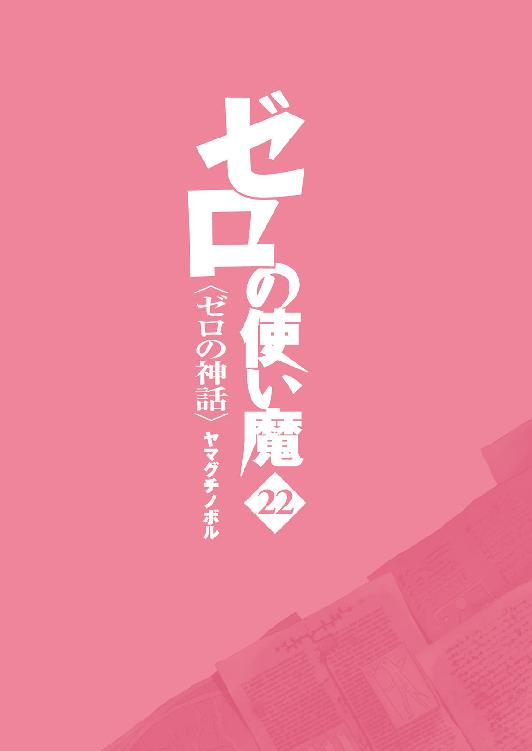
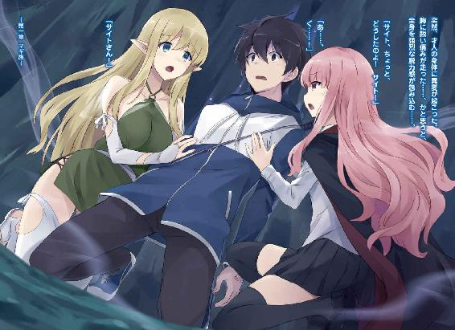
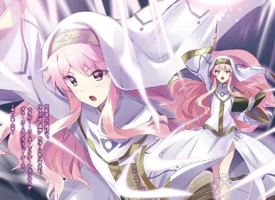
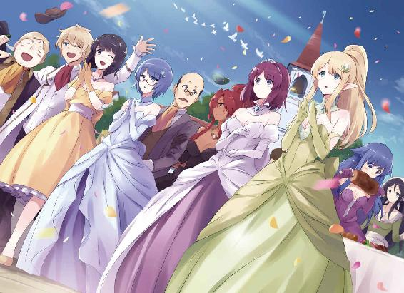
ゼロの使い魔22
ゼロの神話
ヤマグチノボル

本作品の全部または一部を無断で複製、転載、配信、送信したり、ホームページ上に転載したりすることを禁止します。また、本作品の内容を無断で改変、改ざん等を行うことも禁止します。
本作品購入時にご承諾いただいた規約により、有償・無償にかかわらず本作品を第三者に譲渡することはできません。
本作品を示すサムネイルなどのイメージ画像は、再ダウンロード時に予告なく変更される場合があります。
本作品の内容は、底本発行時の取材・執筆内容に基づきます。
本作品は縦書きでレイアウトされています。
また、ご覧になるリーディングシステムにより、表示の差が認められることがあります。
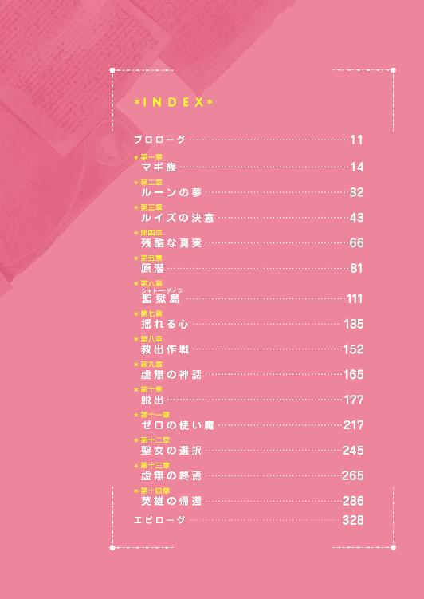
プロローグ
六千年前。ハルケギニアがまだ〝未知の土地〟と呼ばれ、貴族も平民も、ガリアやロマリア、トリステインのような諸国家も存在しなかった時代......。
大平原の丘の上にある、ニダベリールという小さな村のはずれで、ローブを纏った青年が、一人の娘に別れを告げていた。
裾あまりの長いローブを引きずった小柄な青年は、温厚そうだが、なんだか冴えない容姿をしている。一方、草色の服を身に纏った、黄金色の髪の娘のほうは、神々しいまでの美しさであった。
それもそのはず......、娘は生粋のエルフだった。
「サーシャ、道中はくれぐれも気をつけてくれよ。きみの容姿は目立つから」
「あのね、わたしを誰だと思ってるの？」
サーシャと呼ばれたエルフの娘は、呆れたように言うと、左手に光るルーンを見せた。
「わたしは、あなたの〝ガンダールヴ〟なのよ」
「ああ、そうだね」
青年は苦笑した。たしかに、取り越し苦労かもしれない。彼女に宿る〝ガンダールヴ〟の力があれば、あの恐るべき〝ヴァリヤーグ〟どもに襲われたとしても、一人で切り抜けることができるだろう。
「頭の固い長老たちを説得して、すぐに戻ってくるわ」
「頼む。我が氏族の未来は、きみにかかっているんだ」
青年は真剣な表情で言った。いま起こりつつあることは、あの〝ヴァリヤーグ〟の脅威をも上回る、この世界そのものを滅亡させかねない〝大災厄〟なのだ。それを回避するためには、どうあっても、エルフたちと手を取り合わなくてはならない。
「ぼくのほうも、主戦派の連中を抑えておく。最悪の事態だけは避けなければ」
「ええ、頼んだわよ」
サーシャは頷き、それから、そわそわと視線を泳がせた。
「どうしたんだ？」
「もう、この唐変木」
不思議そうに尋ねる青年に、サーシャは不満そうに頰を膨らませた。それから、細い腕を素早く首の後ろに回し、口づけする。
しばらくして......、二人はゆっくりと、唇を離した。
「愛してるわ、ブリミル」
「ぼくもだ、サーシャ」
ブリミル・ル・ルミル・ユル・ヴィリ・ヴェー・ヴァルトリ。
後の時代に〝始祖〟と呼ばれ、ハルケギニア全土の民に崇拝されることになる青年は、サーシャの身体を強く抱きしめた。
愛する恋人のあたたかな体温を感じながら、ブリミルは思う。
〝ああ、ぼくは、なんということをしてしまったんだろう......〟
いま、彼女の身体には、〝ガンダールヴ〟ではない、新たなルーンが刻まれていた。
〝リーヴスラシル〟
愛ゆえに召喚され、最も残酷な運命を担う、虚無の使い魔。
もし、エルフとの交渉が決裂した、そのときは......、神より賜りし、この恐るべき力を行使することになるのだろうか......。
いや、そんなことには決してなるまい......、交渉はきっと成功するはずだ。
サーシャを抱きしめながら、ブリミルはそう、自分に言い聞かせた。
第一章 マギ族
「サイトたち、遅いな......、潜ってから、もう随分たつぜ」
「ううむ、サメにでも食べられてるのかもしれないなあ」
心配そうに呟くギーシュに、マリコルヌはのんびりとあくびを返す。
ラドの月の第三の週、第二曜日。〝竜の巣〟のある海域に停泊した『オストラント』号の甲板上で、水精霊騎士隊の仲間は、才人たちが帰るのを待っていた。
自由都市エウメネスで、才人とルイズが再会してから、二日が経つ。才人とルイズ、それにティファニアは、ロマリア教皇ヴィットーリオらと共に、始祖ブリミルの遺した〝魔法装置〟が眠るという、海の底の〝聖地〟へ向かっていた。
虚無の担い手たる〝四の四〟が揃い、その〝魔法装置〟を手に入れることさえできれば、ハルケギニアに破滅をもたらす〝風石〟の暴走を止めることができるのだ。
穏やかな風のそよぐ大海原に、双つの月の光が反射して、銀色に輝いている。
「きみ、少し不謹慎じゃあないかね、こんなときに」
と、真面目なレイナールが眉をひそめた。
「ただの軽口だよ。でも、ちょっと、遅すぎやしないかい？」
マリコルヌが言った。
「いや、なにしろ、始祖の残した〝魔法装置〟だからね。起動するにも、いろいろと時間がかかるんだろうさ......、まあ、気長に待とう」
そんな生徒たちの会話を聞きつつ、甲板に立つコルベールは眉間にしわを寄せた。
〝始祖の〝魔法装置〟か......〟
エルフとの和平が成立し、〝聖地〟に到達することができた。もう心配すべきことはなにもない......、そのはずなのに、なぜか、妙な胸騒ぎがするのだった。
なにせ、コルベールはハルケギニアでは珍しい、現実主義者である。風石の暴走を止める〝魔法装置〟などと、そんな都合のいいものが存在するとは、どうにも、信じることができぬのであった。
「ジャン、どうしたの？ 難しい顔をして」
隣に立つキュルケが、気遣わしげに顔を覗き込む。
「いや、少し、考え事をしていてね......」
「あら、髪なんてなくても、あなたは世界一の男よ、ジャン」
キュルケは軽く背伸びすると、コルベールの額に接吻した。
「ミス・ツェルプストー、わたしはそんなことを考えていたわけでは......、うむ」
そんな二人の足もとでは、タバサが舷側にもたれかかって座り、頭の上に〝明かり〟の魔法を浮かべて本を読んでいた。だが、先ほどから、いっこうにページをめくる様子はない。たまにそわそわと顔を上げては、海のほうに視線を送っていた。
「サイトのことが心配？」
キュルケが悪戯っぽく尋ねると、
「............」
タバサは頰を赤く染め、本で顔を隠した。
無口な親友の、そんな可愛らしいしぐさに、キュルケは苦笑する。
「みなさん、軽食をお持ちしました」
と、甲板に上がってきたシエスタが、みんなに声をかけた。たくさんのサンドイッチをのせた大皿を両手に抱え、甲板にいる水精霊騎士隊の隊士たちに配ってまわる。キュルケとコルベールも、ありがたくいただくことにした。
「あの、ミスタ・コルベール」
シエスタは、才人たちの潜った海のほうを見て、言った。
「これで、ハルケギニアは救われるんですよね。エルフとも仲よくすることができたんですし、もう戦争なんて、起きないんですよね」
「うむ......、教皇聖下の仰ることが本当だとすれば、そうだね」
シエスタはほっと安堵の息をもらした。
「ああ、よかった。本当に......、じゃあ、ミス・ヴァリエールは、あの恐ろしい力を使わなくてもいいんですよね」
「ああ」
コルベールは、複雑な表情で頷いた。
ルイズが新たに覚えた、虚無の魔法......、それは、あのエルフの艦隊を一撃で吹き飛ばした〝爆発〟をも、はるかに上回る破壊力を誇るらしい。
自分の生徒が、そんな恐ろしい力を使うことにならなくてよかった......、と安心する一方で、なにかいいようのない、かすかな不安があるのも、事実であった。
そんなコルベールの不安をよそに、ギーシュたち水精霊騎士隊の面々は、吞気に釣りをしながら軽口をたたき合っている。
「まさか、あの落ちこぼれのルイズが、ハルケギニアを救うことになるなんてなあ」
「我らが副隊長殿もだよ。トリステインに帰ったら、シュヴァリエどころか、爵位だって下賜されるかもな。平民が爵位を授けられるなんて、これはとんでもないことだぜ」
「男爵......、いや、子爵でも驚かないな。実際、サイトはそれだけのことをしたんだし」
「おいおい、学院に帰れば、ぼくたちだって、英雄だぜ」
ギーシュは、夜空にかかる双つの月を見上げた。
「学院か......、ああ、懐かしいなあ。トリステインを発ったのは、ほんの二週間ほどまえのことなのに、はるか昔のことに思えるよ」
それから、ああ、早くモンモランシーに逢いたいなあ......、と切なそうに呟いた。
「これこそ、始祖の悲願、〝マギ族〟が帰還すべき〝約束の地〟です」
ロマリア教皇、ヴィットーリオの穏やかな声が、海底の大空洞に響き渡った。
才人は、光り輝く〝ゲート〟の前で、呆然と立ち尽くしていた。
無理もない。なにしろ、ヴィットーリオが指差して〝約束の地〟と呼んだもの......、それはまぎれもなく、才人の故郷、〝地球〟の姿だったのである。
〝なんだよ、これ......、どういうことだよ......〟
風石の力を消滅させる〝魔法装置〟の話が、噓っぱちなんじゃないかってことは、才人もなんとなく感づいていた。でも、さすがにこんなのは、想像の外だった。
ルイズとティファニアは目を見開き、アンリエッタも絶句していた。ジョゼットは驚きの表情を浮かべ、ジュリオに視線を向けるが、テュリュークとビダーシャルは、まったく動じた様子を見せなかった。
才人は息を吸い込むと、震える声を吐き出した。
「どういうことですか？ 〝地球〟が......、俺の故郷が〝約束の地〟って......」
「え？」
と、才人の言葉に、ルイズが反応する。
「サイトの故郷？ あれが？」
才人は無言で頷く。アンリエッタはまあ、と口もとを押さえた。
才人の視線を受け止めたヴィットーリオは、眉ひとつ動かすことなく、言った。
「〝約束の地〟とは、そのままの意味です、サイト殿。あなたの故郷である、あの地こそ、わたくしたち、ハルケギニアの民にとっての本当の〝聖地〟なのです」
「な......！」
才人は絶句した。どこまでも澄んだヴィットーリオの目は、一切の噓を含まない、敬虔さと熱意に満ち溢れていた。
そんな教皇の視線に、才人が思わず気圧されていると、
「畏れながら、教皇聖下」
と、アンリエッタが口を開いた。
アンリエッタは物怖じしない態度で、ヴィットーリオを睨むと、
「どうか、わたくしたちにも理解できるよう、ご説明ください。聖下には、その義務がおありになりますわ」
「もちろんです、そのために、あなたがたをここへお連れしたのですから」
ヴィットーリオは、地球の姿を映す〝ゲート〟の前に立つと、全員の顔を見回した。
それから、ゆっくりと口を開く。
「さて、〝聖地〟の真実を明かす前に、ひとつお尋ねしましょう。アンリエッタ殿、現在、このハルケギニアに、魔法を使うことのできる者と、使うことのできぬ者、すなわち、貴族と平民がいるのは、なぜでしょうか？」
「......？」
その質問になんの意味が......、とアンリエッタは眉をひそめるが、すぐに答える。
「貴族とは、始祖ブリミルの血を引く者のことですわ」
「そう、その通りです。このハルケギニアに存在する系統魔法の力は、六千年前、始祖ブリミルの光臨によってもたらされた」
ヴィットーリオは頷くと、
「では、その偉大なる始祖は、どこから来訪したのでしょう？」
「聖下、ここで神学の問答をするつもりはありませんわ」
アンリエッタは、手厳しく言った。
だが、ヴィットーリオは穏やかな笑みを浮かべたまま、
「いいえ、神学問答ではありません。アンリエッタ殿、わたくしは、ハルケギニアの長い歴史の中に消えた真実......、六千年前の真実を明かそうとしているのです」
「六千年前の真実？」
「そうです。これまでの長きにわたり、ロマリアの宗教庁が隠蔽し続けてきた、真実を」
ヴィットーリオの声が、大空洞に殷々と響き渡る。
「始祖ブリミルは、神が天より遣わされた......と、教典にはそう書かれていますわ」
ルイズが言った。それは、トリステイン魔法学院はもちろん、ハルケギニアのどの国でも、広く教えられている〝真実〟だった。
「ええ、ロマリアの教典には、たしかにそうありますね......、ですが、真実は違う」
そう言うと、ヴィットーリオは〝ゲート〟に視線を移した。
その瞬間、才人はハッとした。すべてが頭の中で繫がったのだ。
〝地球〟から送り込まれてくるブリミルの〝槍〟......、それは、つまり......。
「まさか！」
そんな才人の様子に、ルイズとアンリエッタもピンときたようだ。
「お察しの通りです。我らの始祖は、この〝ゲート〟の向こうに存在する、あの世界より光臨された。つまり、始祖ブリミルはサイト殿と同じ、異世界の住人だったのです」
「なん......、ですって......！」
ルイズは愕然として、叫んだ。アンリエッタとティファニアが顔を見合わせる。
才人は口をあんぐりと開けたまま、教皇に尋ねた。
「始祖ブリミルが、俺とおなじ地球人だっていうんですか？」
「そうです。正確には、ブリミルとその氏族、〝マギ族〟と呼ばれる者たちですが」
「マギ族？」
その言葉は、ルイズたちにとっては、耳慣れぬ言葉のようだった。
しかし、才人には、なんとなく、その言葉に聞き覚えがあるような気がした。あれは、どこで聞いたのだったか......。
「〝マギ族〟は、魔法の力を扱うことに長けた、少数民族でした。彼らは六千年前、始祖ブリミルに導かれ、この世界に移住してきたのです。その〝マギ族〟こそが、わたくしたちハルケギニアの民の先祖なのですよ」
「わたしたちの先祖が、異世界の人間......」
ルイズが鳶色の目を見開いたまま、呟く。
「お言葉ですが、聖下。そのような話、にわかに信じることはできませんわ」
アンリエッタが、動揺を押し殺した声で言った。
「それは承知しております。わたくしも、これを人に伝えられたのであれば、荒唐無稽なおとぎ話だと一笑に付したことでしょう。ですが、始祖と神に誓って、これはロマリアの祖である聖フォルサテの時代より、〝始祖の円鏡〟によって伝えられてきた、まぎれもない歴史の真実なのです」
ヴィットーリオは胸の前で聖印を切った。それは、敬虔なブリミル教徒が、始祖と神に誓いをたてるときのしぐさであった。聖印を切った上で、虚偽を語ることは、ブリミル教徒にとって最大の罪であるとされる。
と、ジュリオが、才人のほうを向いて言った。
「サイト、君も気づいてたんだろ。始祖ブリミルの送り込んでくる〝ガンダールヴ〟の〝槍〟は、みんな君の故郷からもたらされたものだ。それこそ、始祖が君の故郷の人間であったという、なによりの証拠さ」
ジュリオの言葉に、才人はぐっと押し黙った。
海底の大空洞に、しん、とした静寂がおとずれた。教皇の口から明かされた、驚くべき〝真実〟に、ルイズもアンリエッタも、もう口を利くことができなかった。
そんな中、おずおずと声をあげたのは、ティファニアだった。
「あ、あの......」
「なんでしょう、ミス・ウエストウッド」
「その......、ブリミルさんは、どうしてこの世界にやってきたんでしょう？」
「もちろん、それには理由があります」
ヴィットーリオは頷きつつ、言った。
「〝マギ族〟は、故郷の世界において、魔法の力を持たない〝ヴァリヤーグ〟と呼ばれる、もうひとつの種族に迫害されていました」
教皇の口から出たその言葉に、才人はハッとした。〝マギ族〟に〝ヴァリヤーグ〟......、その二つの言葉をどこで聞いたのか、ようやく思い出したのだ。
〝そうだよ、あのルーンの夢の中で聞いた言葉じゃねえか......〟
以前、ジョゼフ王のガリアとハルケギニアの連合軍が戦争をしていたとき......、ルイズが才人を故郷に帰そうとしたことがあった。そのとき、才人は夢の中で、〝ガンダールヴ〟のルーンに眠る、六千年前の記憶を体験することになったのだ。あのとき、たしかに、ブリミルは自分たちの一族を〝マギ族〟と呼んでいた。そして、才人はその夢の中で、村を襲った恐るべき〝ヴァリヤーグ〟の軍隊と戦ったのである。そして、才人の戦った〝ヴァリヤーグ〟の顔は、怪物でも亜人でもなく......、同じ人間のものだった。
「〝ヴァリヤーグ〟は魔法の力を持たぬがゆえに、〝マギ族〟を恐れたのです。かの者たちは、〝マギ族〟を消し去ろうと、徹底的な迫害をくわえました。〝ヴァリヤーグ〟は魔法こそ使えなかったものの、圧倒的な数と、優れた技術によって作られた、恐ろしい武器を持っていた......、いかに魔法の力があるとはいえ、少数民族にすぎぬ〝マギ族〟に、勝ち目があるはずもありませんでした。その迫害から逃れるために、始祖ブリミルは〝ゲート〟を開き、一族を率いて、このハルケギニアへ脱出してきたのです」
ヴィットーリオは言葉を切ると、一同の顔を見回した。
「つまり、〝ゲート〟の向こうにある、あの世界こそ、わたくしたちの故郷にして、魂の拠り所。始祖ブリミルと〝マギ族〟の子孫である、我々ハルケギニアの民には、あの〝聖地〟に帰還すべき、正当な権利があるのです」
「そんな......」
ティファニアの顔が蒼白になる。ルイズもアンリエッタも、いま初めて明かされた歴史の真実に、ただ呆然とするばかりだ。
「我々エルフの評議会は、おまえたちの真の目的が〝砂漠〟ではないことを知ったからこそ、和平に応じたのだ」
エルフの統領テュリュークが、静かな口調で言った。
「おまえたち蛮人が、〝悪魔の門〟の向こうにある〝聖地〟を取り戻せば、もはや争う必要はなくなるだろう。砂漠の平穏のためなら、我々も協力も惜しまぬつもりだ」
「ま、待ってください！」
と、才人は大声で叫んだ。
「帰還するって......、まさか、ハルケギニアの住人を、みんな地球に送り込むってことですか？」
「もちろん、すべての民を移住させるつもりです。貴族も平民も、富んだ者も、貧しき者も、みな等しく、故郷に帰還する権利がある。血統の薄さゆえ、いまはまだ魔法の力に目覚めていない、平民と呼ばれる人々も、いずれ〝マギ族〟の血を引くことに変わりはありませんから」
「それは......、そんなことは、無理なんです！」
才人は必死に言った。
「無理、とは？」
「だって、そんな、ハルケギニアの全住民が住めるような場所なんて、地球には、もうどこにもないんです！」
ハルケギニアの住人がどれくらいいるのか、それはわからない。でも、いまの地球に移住して、新しい国をつくるなんて、そんなことはとても無理だろう。
きっと、とんでもないことになる......、そのくらいのことは、あまり学校の成績のよくなかった才人にだって、簡単に予想できた。
だが、ヴィットーリオは、表情ひとつ変えずに言った。
「もちろん、それは存じています。共存は不可能でしょう」
「それじゃあ......」
「ですから、正確には〝帰還〟ではありません。そう、あのアルビオンの叛徒たちの言葉を借りるならば、〝再征服〟とでも言うべきなのでしょう」
「なんだって！」
「聖下、それは一体、どういうことですか！」
アンリエッタが鋭く尋ねた。
「わたくしたちは、正当な権利のもとに、〝聖戦〟によって、故郷の土地を取り戻す、ということです。それこそ、始祖が我々に与えし、神聖なる使命なのです」
ヴィットーリオは、そんな恐ろしいことを、平然と口にした。
「聖戦......、ハルケギニアの軍隊で、〝地球〟と戦うっていうのか？」
「ええ、わたくしたちは、そのために入念な準備をしてきました」
才人は、ヴィットーリオの澄んだ目を見て、愕然とした。
〝この人は、本気で地球を征服するつもりなんだ......〟
才人は、この静かな狂気を宿した男をどうにか説得しようと、頭をフル回転させた。
「無理だ、ハルケギニアの軍隊じゃ、勝ち目なんてあるわけない。地球の〝武器〟がどんなものか、知ってるでしょう？ あの〝戦車〟や〝ゼロ戦〟、それだけじゃない、もっとずっと恐ろしい武器だって、たくさん......」
あるんだ......、と言いかけて、才人は口をつぐんだ。
才人の脳裏によぎったのは、この〝竜の巣〟の海底に沈む〝原潜〟のことだった。あれのことは、口にしないほうがいいと思ったのだ。
「そう、たしかに、ここ数十年の間に、〝ヴァリヤーグ〟の〝武器〟は、目を見張るほどの進化を遂げています。ゆえにこそ、彼らがもっと破滅的な力を手に入れる前に、滅ぼさなくてはならないのです」
「だから、無理なんです！ いくら強力な魔法が使えたって、関係ない。地球の武器は、メイジが杖を抜く前に、簡単に殺せちまうんだ！」
才人は必死に声をあげた。実際、ハルケギニアの〝聖地回復連合軍〟が、今の地球を攻めたところで、簡単に返り討ちに遭い、悲惨な結果になるだろう。そんなことになれば、ルイズたちの命もどうなるか、わからない。
「たしかに、〝ヴァリヤーグ〟は恐るべき敵です。ですが、神と始祖ブリミルは、それに対抗するための力を、我らにお授けになりました」
ヴィットーリオの言葉に、ルイズがハッとして顔を上げた。
ヴィットーリオは穏やかな微笑みを浮かべ、頷く。
「そうです。それこそが、ミス・ヴァリエールに授けられし、〝最後の虚無〟」
「そんな......！」
ルイズが、愕然とした声で言った。
〝生命〟
恐るべき破滅をもたらす〝最後の虚無〟は......、〝火石〟を使うエルフに対抗するためではなく、才人の故郷を征服するための切り札であったのだ。
「わたくしを、謀ったのですね、聖下！」
ルイズは声を震わせ、ヴィットーリオとジュリオに、怒りに燃える目を向けた。
「あの虚無の魔法は、エルフが〝火石〟を使ってきたときの対抗手段だったはずですわ。エルフと和解した以上、あの〝虚無〟を使うことはないと......」
「ミス・ヴァリエール、わたくしは、虚偽を口にしてはおりません。ですが、すべての真実を伝えなかったことは、謝罪しましょう」
平然と頭を下げるヴィットーリオに、ルイズは唇を嚙む。
「お言葉ですが、聖下。わたくしがサイトの故郷を滅ぼすなどと、そんなことをするとでも、本気でお思いなのですか？ でしたら、それは見当違いというものですわ」
ルイズはきっぱりと言った。
「わたしは、ラ・ヴァリエールの家名にかけて、約束したんです。サイトを、必ずもとの世界に帰してあげるって」
「ルイズ......」
そんなルイズの健気な言葉に、こんなときであるにもかかわらず、才人は妙に感動してしまった。ああ、ルイズ、愛する俺のご主人様......。
アンリエッタも、毅然とした態度で教皇に対峙する。
「聖下、あなたは、ハルケギニアの民に、また多くの血を流せと仰るのですか」
だが、ヴィットーリオは静かに首を振り、
「ではお尋ねしますが、このまま滅びを受け入れよと？」
「それは......」
アンリエッタは、言葉に詰まった。依然、ハルケギニアに横たわる大問題をどうするのかと、教皇は、それを問うてきたのである。
「〝風石〟の暴走は、近い将来、必ず起きるでしょう。ハルケギニア中の大地がめくれあがり、残ったわずかな土地をめぐって、不毛な戦が続く......、あなたがた貴族は、生き延びることができるかもしれません。ですが、この地に住まう、多くの民の命はどうなるのですか？」
「たしかに、〝風石〟の問題は、なんとかしなくてはなりません。ですが、そのために、サイト殿の故郷を征服するなどというのは、断じて、正しき行いではありませんわ」
「正しさの問題ではありません。アンリエッタ殿、滅びに瀕したわたくしたちは、どんな方法を使っても、生き延びるしかないのです」
ヴィットーリオの目には、ただ決然とした意志だけがあった。
才人はこれまで、幾人もの敵たちと対峙してきた。フーケ、ワルド、ミョズニトニルンのシェフィールド、ジョゼフ王、『鉄血団結党』のエスマーイル......、でも、その純粋さに満ちた目を見て、これほどまでに恐ろしいと思った人間はいなかった。
止めないと......、この男は、あまりに危険だ。
〝地球を征服なんて、そんなこと、させてたまるかよ！〟
才人は、背中のデルフリンガーを抜き放った。左手のルーンが光る。
「サイト！」
ルイズが叫んだ。
ジュリオが腰のサーベルを抜き、ヴィットーリオを守るように立ちはだかる。
「馬鹿なことはやめろ、ガンダールヴ」
「どけよ、ジュリオ」
才人は唸るように言った。もちろん、教皇を殺すつもりなんてない。ひとまず、この場は人質にとって、なんとか思いとどまらせよう......、そう考え、目の前のジュリオを昏倒させようとした、そのときである。
「あ......、ぐ......！」
突然、才人の身体に異変が起こった。
胸に鋭い痛みが走った......、かと思うと、全身を強烈な脱力感が包み込む......。
デルフリンガーが手から落ちた。才人は、膝からくずおれ、地面に倒れ込んだ。
「サイト、ちょっと、どうしたのよ！ サイト！」
「サイトさん！」
ルイズとティファニアが、両側から才人の身体を抱き上げる。
才人は、全身をめぐる血液が、凍ったように冷たくなっていくのを感じた。
「聖下、サイトになにをしたんですか！」
才人の腕を抱いたまま、ルイズはヴィットーリオを睨んだ。
「わたくしは、なにもしておりません」
ヴィットーリオは、才人に憐れむような目を向けた。
「サイト殿は〝聖地〟の奪還において、最も重要な役目を持つ〝最後の使い魔〟。聖地の〝ゲート〟が開けば、それに反応するのは必然でありましょう」
ルイズはハッとして、才人の胸を見た。パーカーの下で、不気味な〝リーヴスラシル〟のルーンが光っている。
「そんな......、わたしもテファも、虚無の呪文を唱えていないのに......、サイト、ねえ、しっかりして、サイト！」
ルイズの泣き叫ぶ声が、遠くに聞こえる。視界がどんどん暗くなる。なにか見えない手に心臓をわし摑みにされて、自分の命そのものが、ごっそりと奪われていくような、そんな恐ろしい感覚に襲われる。
〝ルイズ......、ルイ......ズ......！〟
声にならない叫びをあげながら、才人の意識は真っ暗な闇の中に落ちていった。
第二章 ルーンの夢
〝......イト......、サイト！〟
才人を呼ぶルイズの声が遠ざかり、視界が一瞬、真っ暗になる。
そして、つぎに目を開けたとき......、目の前に広がるのは、だだっぴろい砂漠だった。
「......うう......、ん......うん？」
才人は目をこすり、呆然と呟いた。
「は？ なんだ？ どこだよ、ここ？」
俺は、ルイズたちと一緒に、海の底にある〝聖地〟にいたはずだ。そんでもって、〝ゲート〟が開いたり、教皇が〝マギ族〟がどうとか、〝地球〟を侵略するだとか、無茶苦茶なことを言い出したりして......。
「それがなんで、こんなわけのわかんねえ場所にいるんだよ......」
つうか、ルイズたちはどこよ？
ティファニアは、アンリエッタは、教皇やジュリオは......？
才人は頭を振ると、半身を起こし、ぐるりとあたりを見回した。
自分がいるのは、太陽の照りつける砂漠のど真ん中だ。うしろを向くと、はるか遠く、揺らめく陽炎の向こうに、途方もなく大きな山が見える。
その裾野には、立派な城壁に囲まれた、真っ白な都市があった。
でも、あんな都市は見たことがない。ハルケギニアの都市ではないし、誘拐されて連れてこられた、エルフの国の都市とも違うようである。
ますますわけがわからなくなった。
〝一体、ここはどこなんだ？〟
才人は、その場にどっかりと座り込み、腕組みして考え込む。
才人が気絶してる間に、砂漠に捨てられた？
いやいや、そんなはずはないだろう......、とすぐに否定する。だって、こんなところで死なれたら、ロマリアの連中だって困るはずじゃねえか。ルイズに〝虚無〟を使わせるにしたって、使い魔である才人は必要であるわけで......。
〝そうだ、胸のルーンはどうなった？〟
思い出した才人は、パーカーの下のシャツをずらすと、自分の胸もとを覗き込んだ。
〝リーヴスラシル〟のルーンは、もう光っていない。あの生命力を根こそぎ奪われるような、恐ろしい虚脱感も、いまはきれいさっぱり消えていた。
〝ひょっとして、俺、死んだのかな？〟
でもってここは、ハルケギニアにおける、死後の世界ってやつなんだろうか。
いやいや、死んでる場合じゃねえだろ、俺。
才人は真っ青な顔で首を振った。あの教皇はルイズの〝虚無〟の力を利用して、〝地球〟を侵略しようと企んでるんだ。早く戻らないと、大変なことになっちまう......。
でも、どうすれば戻れるんだろう......。
とりあえず、才人はデルフリンガーの柄で、自分の頭を打ってみることにした。夢なら、これで覚めるはずだ。
ゴッと鈍い音がして、目の前がチカチカした。
「......ちくしょう、夢なのに痛えじゃねえか」
こめかみを押さえながら、才人は悪態をつく。
いつもなら、ここでデルフリンガーが「おめえはバカだね、相棒」なんてつっこんでくれるところだが、才人のお喋りな親友は、相変わらず口を閉ざしたままである。
つうか、いい加減、なんか喋ってくれよと思う。『エウメネス』の街で、才人が倒れてからこっち、デルフリンガーはうんともすんとも言わなくなってしまったのだ。
「はあ、なんなんだよ、ったく......」
才人はため息をつくと、腕組みして考え込んだ。
そして、ふと思い出した。
〝まてよ、なんか前にも、こんなシチュエーションがあったような......〟
なんとなく、いまのこの状況に、妙に既視感があった。
たしか、ずっと前にも、こんな奇妙な夢を見たことがある。
そう......、あれは、水の都『アクイレイア』で、ルイズに眠らされたとき......。
あのとき、才人は使い魔のルーンの中に眠る、六千年前の記憶を垣間見たのであった。
「......ってことは、俺はまた六千年前の夢を見てるのか？」
才人は確信した。きっと、そうに違いない。
以前、才人の見た夢は、〝ガンダールヴ〟のルーンに眠る記憶だった。だとすると、いま見ているこの夢は、〝リーヴスラシル〟のルーンに眠る記憶なのか？
背筋を、ゾッとするような悪寒が走った。
いったい、どんな夢なんだろう......。
不安に思いながら、その場にしばらく座り込んでいると、大きな砂丘の向こうから、こちらに向かって歩いてくる人影が見えた。
誰だろう。警戒しつつ、才人はデルフリンガーの柄を握った。
豆粒のような人影が近づいてくるにつれ、徐々にその輪郭がはっきりしてくる。
それは、裾を引きずるような長いローブを身に纏った、小柄な男であった。
撫でつけた金髪に、少し冴えない、真面目そうな風貌。
才人は、その姿に見覚えがあった。
「ブリミルさん！」
才人が声をあげると、ローブ姿の男はこちらに気づき、ゆっくりと歩いてきた。
間違いない、それは前にルーンの夢の中で出会った、始祖ブリミルであった。
やっぱり、いま見てるのは、ルーンの記憶なんだな、と才人は確信する。
やがて、目の前まで来たブリミルの顔を見て、才人は思わず、息を吞んだ。
少し老けただろうか。頰が瘦せこけて、前に見たときとは、別人のようだ。あれから、何年か経っているのかもしれないが、それにしても、この変わり様は......、いったい、なにがあったんだろう。
ブリミルは、才人の顔をまじまじと見つめると、首を傾げた。
「......ええっと、きみは？ 前にどこかで会ったかな」
「覚えてないんですか？ 俺ですよ、ヒラガ・サイトです」
才人は言った。それにしても、前って、どのくらい前なんだろうか。そもそも、このブリミルは、前に才人が会ったブリミルと同じブリミルなのかどうかもわからない。
「うん、たしかに会った気がするんだが、どこでだったかなあ」
と、才人の頭にある閃きが浮かんだ。そうだ、これを見せれば......。
才人はデルフリンガーを握り、左手に光るルーンを見せた。
すると、ブリミルは目を見開いて、叫んだ。
「〝ガンダールヴ〟！ そうか、思い出した......、きみは、あのときの少年か！」
「はい、その節はどうも」
才人がぺこりと頭を下げると、ブリミルはほんの少し笑みを浮かべ、
「いや、すまない。あれは、ぼくらが放浪生活を続けてた頃だから、もう何年も前のことだね。うむ、きみはあれから歳をとったようには見えないが、じつに不思議だ」
「俺は、六千年後の世界からきた人間なんです」
「そうだったね、ああ」
ブリミルは怪訝そうな表情で、相槌を打つ。
「それで、こんなところでなにをしてるんだ？ きみの主人は？」
「俺は、その、ちょっと砂漠で迷子になって......、あの、ブリミルさんこそ、こんなところでなにをしてるんですか？ 村のみんなや、サーシャさんは？」
才人が尋ねると、ブリミルは一瞬、表情をこわばらせて、言った。
「彼女は、もうすぐここに来るはずだよ」
それから、ブリミルについて歩いて行くと、木のまばらに生えた、小さなオアシスのような場所にたどり着いた。あたりにはテントの骨組みや壊れた井戸、馬だかラクダだか、なにか大きな動物の骨が放置されている。どうやら、捨てられた村のようだ。
ブリミルは、山があるのとは反対の方向を指差して、言った。
「ここから、北に行けば、人間の住む土地がある。早くここから逃げたほうがいい、このあたりは、じきに海の底に沈むからね」
「海に沈む？ どういうことですか？」
才人は驚いて言った。
「いいかい？ 先住の民であるきみたちは、まだ知らないかもしれないが、この世界はいま、恐ろしい滅亡の危機に瀕しているんだ」
「え？」
才人はぽかんと口を開けた。
滅亡の危機に瀕してるって、どういうことだ？
滅亡の危機にあるのは、六千年後の俺たちの世界じゃないか。
そんな才人に、ブリミルは、嚙んで含めるように言った。
「きみは、〝精霊石〟というものの存在を聞いたことがあるか？」
「えっと、〝風石〟とか、〝火石〟のことですよね」
才人が答えると、ブリミルはほう、と驚くように呟いた。
「さすが、〝ガンダールヴ〟だ。よく知ってるね。きみの主人から教わったのかい」
「まあ、そんなもんです」
才人は曖昧な顔で言った。
「それなら、話は早い。〝精霊石〟というのは、言ってみれば、この世界の精霊の力が凝縮したものだ。そのほとんどは地中深くに眠っていて、まずお目にかかることはない」
へえ、と才人は思った。ブリミルの生きたこの時代には、〝風石〟を採掘する技術は、まだなかったんだろう。
と、ブリミルは足もとの地面に目をやった。
「その地中に眠る〝精霊石〟の力が、いま世界中で暴発しようとしているんだ」
「なんだって！」
才人は思わず、大声をあげた。
まさか、六千年前のハルケギニアでも、〝風石〟の暴走があったのか......？
「そんなことが起これば、大地はひっくり返り、人間の住む場所はなくなってしまう」
ブリミルは暗澹たる表情で言った。
〝こっちでも、六千年後のハルケギニアと同じことが起きるっていうのかよ......〟
ひょっとして、ルクシャナの言った、エルフの半数が滅びたという〝大災厄〟の正体は、〝風石〟の暴走のことなんだろうか......。
「でも、そんなことにはさせない、絶対に」
ブリミルは険しい顔をして、立ち上がった。
その視線は、山脈の裾に広がる都市を見据えていた。
「あれは......？」
「エルフの都市だよ。〝大いなる意思〟に守られた、偉大な都だ」
「エルフの都市、あれが......」
聳え立つ白亜の城壁は、山脈を囲むように造られている。まるで、洗練された地球のビルディングのようだった、ネフテスの〝アディール〟とは、また違うようだ。
そりゃあ、六千年も経てば建築様式も変わるよな、と才人は思った。それにしても、六千年も昔に、あんな立派な都市を築くなんて、やっぱり、エルフはすごい。
そのエルフの都市に向かって、ブリミルは両手を突き出した。
「なにをするつもりなんですか？」
「一族が生き残るために、すべきことをする。ぼくはそのためにここに来た」
ブリミルは、硬くこわばった表情で言った。
「生き残るために......」
才人は繰り返すように呟き......、そして、ハッと気づいた。
ブリミルが、なぜここにいるのか。これから、なにをしようとしているのか。
生き残るためにすべきこと......、それはつまり、六千年後のハルケギニアで起きていることと同じじゃないのか？
住む土地の奪い合い、それが、六千年前の世界でも起こったのだとしたら......。
エルフの半数が滅びた、という〝大災厄〟の言い伝え。そして、デルフリンガーの言った、ガンダールヴのサーシャがブリミルを殺した......、という言葉の意味。
才人の頭の中で、すべてが繫がった。
まさか、まさか......！
いまさらながらに、砂漠に向こうに聳える、大きな山脈の正体に気づいた。
たしか、〝竜の巣〟の海母は言っていた。地球の武器の流れ着くあの場所は、数千年前には陸地だったのだと。何千年も昔に、周囲の地形を変えてしまうような〝何か〟があって、〝聖地〟は海の底に沈んだのだ。
その〝何か〟ってのは、つまり......。
「ブリミルさん、あなたは、エルフの都市を滅ぼすつもりなんですか！」
「そうだ。力なき我が氏族が生き残るには、これしかないんだ」
ブリミルは唸るような声で言った。
「やめてください、そんなことしたら......、このあと何千年も続く戦争になるんだ！」
「そうはならないよ。今日、すべてのエルフは地上から姿を消すのだから」
「ふざけんな......、サーシャさんだって、エルフじゃねえか！」
才人がサーシャの名前を口にすると、ブリミルは一瞬、苦渋に満ちた表情を浮かべ、力なく首を振った。
「すべてはもう、遅すぎたんだ。これしか道はない」
「どうして......」
ブリミルは手をかざし、〝虚無〟のルーンを唱えはじめた。
その瞬間、才人の胸に、激痛が走った。
才人はうめき声をあげ、その場にうずくまる。
「......く、そ......また......」
ルーンを唱えるブリミルの頭上に、眩い光が生まれた。
才人は思った。この光......、ルイズの〝爆発〟そっくりだ。
だが、〝爆発〟ではない......、もっと、ずっと恐ろしいものだ。
虚無の使い魔の本能とでもいうべきものが、それを感じとる。
あんなものが放たれたら、都市なんて、簡単に消し飛んでしまうだろう。
「どう......して......」
薄れゆく意識の中で、ブリミルの声がいやにはっきりと聞こえた。
「わかり合えないからだ」
第三章 ルイズの決意
「サイト......、お願いよ、目を覚まして、サイト」
ルイズは泣きはらした目で、ベッドに横たわる才人の手を握っていた。
『オストラント』号の中にある、才人とルイズの部屋である。
才人が倒れたあのあとすぐ、ルイズとティファニアはぐったりした才人を抱え、ビダーシャルの作った魔法の泡に包まれて、海の上に上がった。
甲板にいたコルベールたちは、衰弱した才人を見てびっくりしていたが、シエスタがすぐに担架用のシーツを持ってきて、みんなで部屋に運び込んだのだった。
それから、ルイズは才人のそばで、つきっきりで看病した。才人が倒れてから、もう、三十分も経つが、まだ意識を取り戻す様子はない。
ただの疲労や病気でないことは明らかだった。才人が倒れた直後、すぐにアンリエッタが〝ヒーリング〟を唱えたのだが、まったく効果がなかったのだ。
ルイズにできるのは、こうして、手を握ることだけだった。もう胸のルーンの光は収まっている。でも、才人の手は、生きた人間の手とは思えないほど、冷たい。
〝どうして、こんなことになってしまったの......〟
才人は、〝リーヴスラシル〟の力は、虚無の担い手の〝魔力供給機〟だと言った。契約した主人が虚無の魔法を使うとき、精神力を供給するのだと......。だから、ルイズは〝虚無〟さえ唱えなければ大丈夫だと、安心していたのである。でも、あのときは、ルイズもティファニアも、虚無の魔法を使っていなかった......。
教皇は、〝ゲート〟の近くにいたから、と言ったけれど......、あれが本当のことなのかどうかは、正直疑わしい。
きっと、最後の使い魔には、まだわたしの知らない秘密があるんだわ......。
そのとき、ルイズの握る才人の手が、ぴくっと動いた。
「サイト！」
ルイズはあわてて、才人の顔を覗き込んだ。
「う、うああああああっ！」と、絶叫して、才人は跳ねるように起き上がった。
その瞬間、なにかにごつんと頭をぶつける。ぶつかったなにかは、ふぎゃっと潰れたネコみたいな悲鳴をあげ、そのまま後ろにひっくり返った。
「あ、あれ......？」
と、我に返った才人は、周囲を見回した。そこは、六千年前の砂漠ではなく......、見慣れた『オストラント』号の船室であった。
〝ブリミルさんは？ 俺、あの光に吞み込まれて、どうなっちまったんだ？〟
才人が混乱していると、ベッドの下で、う っと恨めしげな声が聞こえてきた。
っと恨めしげな声が聞こえてきた。
「あ、あ、あんたね、なにすんのよ！」
ベッドの下から這い出てきたのは、額を押さえ、涙目で才人を睨むルイズであった。
「ル、ルイズ......、ごめん！」
「急に倒れたと思ったら、ずっと目を覚まさないし、こ、ここ、この......」
ルイズはわなわなと震える拳を振り上げた。しかし、そこで、堪えていたものが一気に溢れ出したのか、鳶色の瞳にいっぱいの涙をため、ぐすぐすと泣きはじめた。
「ばか、ひっく、ばか、ばか、ばか！ わたし、どんだけ心配したと思ってるのよぉ！」
振り上げた拳で、ぽかぽかと才人の胸を叩く。
「ルイズ、お前......」
こいつ、ひょっとして、俺が倒れてからずっと、つきっきりで看病してくれてたのか......、と才人は感動した。そんなご主人様のことが、もうとにかく愛しくて、才人はルイズの背中を抱きしめた。
「サイト......」
ルイズは急におとなしくなると、そのまま、安心したように胸に頭を預けてきた。
桃色のブロンドの髪が、才人の頰のあたりをくすぐる。小柄で、やせっぽっちなルイズの身体は、才人の腕の中にちょうどよくおさまった。
ルイズが落ち着くのを待ってから、才人はようやく話しかけた。
「......なあ、俺、どのくらい気を失ってたんだ？」
ルイズは泣きはらした顔をぐしぐしとこすり、恥ずかしそうに目を逸らした。
「三十分くらいよ......、胸のルーンが消えたあとも、あんた、ずっとうなされてたわ」
「なんだ、そんなもんか」
才人は拍子抜けした声で言った。取り乱したルイズの様子から、もっとずっと長い間眠っていたものだと思っていたのだ。
「ちょっと、なんだとはなによ......、心配、してたのに」
「ごめん、心配かけちまって」
才人は頭をかきながら謝ると、天井を見上げて、言った。
「......俺、夢を見てたんだ」
「ひょっとして、怖い夢？」
「うん、まあ......」
頷き、才人は額の汗をぬぐった。
「夢の中に、始祖ブリミルが出てきた」
才人が言うと、ルイズはハッとして、途端に真剣な表情になった。
「もしかして、前にロマリアで見たのと同じ夢？」
才人は首を横に振った。
「いや......、あのときよりも、あとの時代だった」
「どんな夢だったの？」
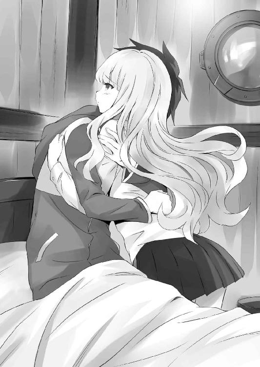
ルイズは、才人の横にちょこんと座った。
才人は、夢の中で見た内容をルイズに話した。六千年前にも〝風石〟の暴走があったこと、〝聖地〟が海の底に沈む前は、そこにエルフの都市があったこと、そして、始祖ブリミルが、エルフの都市に向かって〝虚無〟の魔法を唱えたこと......。
才人の話を聞き終えたルイズは、悲しげな顔をして呟いた。
「それじゃあ、始祖は、エルフの土地を手に入れるために〝虚無〟を放ったのね」
「ああ、自分の一族が生き延びるためには、仕方ないことだって」
「それが、エルフの伝承に伝わる〝大災厄〟の正体だったのね」
「うん......」
ふと、才人は、前にデルフリンガーの言ったことを思い出した。
〝ガンダールヴのサーシャが、ブリミルを殺した〟
エルフのサーシャは、復讐のためにブリミルを殺したんだろうか。使い魔が自分の主人を殺す......、いったい、どんな気持ちだったんだろう。
たとえば、自分がルイズを殺すなんて、そんなこと、考えることもできない......。
「俺、ブリミルさんを説得しようとしたんだけど、だめだった」
才人は、悔しさを滲ませた声で言った。
「それはそうよ、あんたの見た夢は、ルーンに刻まれた記憶で、もう起こってしまった出来事なんだから。それを変えられるわけないじゃない」
「そうか......、そりゃあそうだよな」
才人は、ため息をついて、うなだれた。
と、そのとき、ルイズがなにかに気づいたように首をひねった。
「でも、ちょっと、変ね。計算が合わないわ」
「なにが変なんだ？」
「〝風石〟の暴走が起きるのは、数万年に一度だって、前にジュリオが言ってたじゃない。ブリミルの時代から、まだ六千年しか経ってないはずなのに、どうして、今になって暴走が始まったのかしら」
「さあ」
「さあ......、って、なによ」
憮然とするルイズ。
「いや、わかんねえ。また今度会ったときにでも、ブリミルさんに聞いてみるよ」
「今度って、いつよ」
「さあ」
才人の返事に、ルイズは呆れた様子でため息をついた。
まあ、才人の夢が、ただの夢なんかじゃないことは、間違いないだろう。だとすると、また同じような夢を見ることもあるかもしれない......。
〝でも、使い魔のルーンはどうして、サイトにそんな夢を見せたのかしら？〟
と、ルイズはそんな疑問を抱くのだった。
少ししんみりとした空気になったあと......、才人は大事なことを思い出した。
「......そうだ。あれから、どうなったんだ？」
尋ねると、ルイズは短く頷き、
「ええ、聖地の〝ゲート〟は、すぐに閉じたわ。教皇聖下は精神力を溜めて、軍隊が通れるような、もっと大きな〝ゲート〟を開くつもりみたい。たぶん、〝聖地回復連合軍〟の本隊と合流したら、すぐにでも、あんたの世界に侵攻をはじめるつもりなんだわ」
「本当に、〝地球〟と......、俺の住んでた世界と戦争する気なんだな」
才人は無力感にうちひしがれた。〝聖地〟の奪還は、教皇の悲願なんだろう。才人がどんな説得を試みたところで、いまさら考えを翻すとは思えない......。
「大丈夫、そんなことはさせないわ、絶対に」
だが、ルイズはきっぱりと、言い放った。
「ルイズ......」
「たしかに、わたしはトリステインの貴族で、敬虔なブリミル教徒だったわ。でも、ハルケギニアを救うために、サイトの世界を侵略するなんて、絶対間違ってる。わたしは、神と始祖の御心よりも、わたし自身の心に従うわ」
そう言って、桃色ブロンドの髪をさっとかきあげたルイズを見て、才人は感動した。すげえ......、俺のご主人様、かっけえ、と思った。同時に、やっぱり、ルイズは出会った頃と、随分変わったんだなと思う。
昔のルイズは、なによりも、貴族の誇りと名誉を大事にしてた。トリステイン王家に尽くし、始祖の教えを守ることが、一番大事なことだと信じていた。あの頃のルイズなら、さっきのような言葉は、たとえ天地がひっくり返っても、口にしなかったはずだ。
ルイズの心意気は素直に嬉しい。でも、才人には、ひとつ心配なことがあった。
たとえルイズが拒んだとしても、教皇は、どんな手段を使ってでも、ルイズに〝最後の虚無〟を撃たせようとするだろう。たとえば、エルフの秘薬を使って、ルイズの心を思うままに操ろうとするかもしれない......。
才人がそんな心配を口にすると、ルイズはちょっと考えて、
「それは、たぶん大丈夫だと思うわ」
「どうして？」
「だって、〝虚無〟の魔法は、心の震えが力になるのよ。薬なんかで心を壊してしまえば、〝虚無〟を唱えることはできなくなるわ」
「そっか......、それなら、ロマリアの連中もそんな無理はできないな」
才人はひとまず安心した。教皇もルイズと同じ虚無の担い手である以上、そのことは理解しているだろう。
「それに、もし教皇聖下が、そんな手段に訴えようとするなら......」
ルイズは、覚悟を決めたような、張り詰めた表情で、
「わたし、サイトの故郷を滅ぼすくらいなら、自分の喉を突いて死ぬほうを選ぶわ」
「な、なに言ってんだよ、お前......、ばかなこと言うなよ！」
才人はあわててルイズをたしなめた。だが、ルイズは首を振り、
「わたしは本気よ」と、真顔で言い切った。
ルイズは本気だった。才人にはそれがわかった。ルイズは以前、才人がアルビオンで、七万の軍に突っ込んで死んだと思い込み、本当に死のうとしたことがあった。あのときは、ギーシュの作った像のおかげで、なんとか助かったが......。
「そんなの、だめだ。そんなことしたら、俺も死ぬよ」
「だ、だめよ、そんなの。あんたが死んだら、意味ないじゃない」
「じゃあ、死ぬなんて言うなよ、ばか」
「ば、ばかじゃないもん......」
ルイズは拗ねたように唇をとがらせた。
「前に約束しただろ。死ぬときは一緒だ、って」
「う、うん......」
才人が真剣な顔で見つめると、ルイズは頰を赤く染めて頷く。
二人はベッドの上で見つめ合い、やがて、どちらからともなく、唇を交わした。
「んっ......」
お互い、背中を抱く指に力を込め、唇を押しつけあう。
ルイズは目をつむり、才人の腕の中で従順に身をまかせた。先ほどの才人の真摯な言葉は、意図せずして、ルイズの胸をときめかせることに成功したのであった。
や、やだ、こいつってば、俺も死ぬだなんて......、ちょっと、かっこいいじゃないの。そんでもって、ちょっと、わたしのこと好きすぎるんじゃないの、ねえ？
そんな感じで軽くテンパっているうちに、優しくベッドに押し倒される。
「だ、だめよ......、こ、こんなときに」
と、ルイズはか細い声で言った。
もちろん、本気で抵抗してるわけじゃない......、でも、ルイズにだって、プライドとかそういうのがある。そんなカンタンな女と思われては、ラ・ヴァリエールの三女としての沽券に関わるのである。
「こんなときだからだよ」
「へ？」
才人は、ルイズの顎をくっと持ちあげて、言った。
「こんなときだから、ルイズのこと、しっかり抱きしめていたいんだ」
「はう......」
真剣な声と表情でそう囁かれると、たちまち、全身の力が抜けてしまう。
もう、貴族のプライドとかそういうのは、全部どうでもよくなってしまった。
な、なによこいつ、ほんとズルイわ、もう......、とルイズは唇をとがらせた。そんなこと言われたら、わたし、カンタンな女になっちゃうじゃないのよ......。
あっさりと降参したルイズは、うっとりと目を閉じて、唇を重ね合わせる。
さて、才人はここにきて、自分の台詞が、ルイズの心をどうにかしたのを理解した。
〝な、なんだよ、俺のご主人様、可愛すぎだろ......〟
でも、さっきのあの言葉は、まったく噓偽りのない、才人の本心であった。
ルイズを守るためなら、死んだってかまわない。
ルイズが死ぬときは、俺も死ぬ。
くるくるとよく動く鳶色の目。瞼を彩る長い睫毛。軽く上唇を嚙む、そのしぐさ。可愛らしい小さな胸。意地っ張りで、怒りっぽくて、誰よりもまっすぐで、誇り高い女の子......、そんなルイズのすべてを、命がけで守りたいと思う。
「好きだよ、ルイズ」
「ほんとに？」
「あたりまえだろ」
「もっと言って」
「ルイズ好き、大好き」
ルイズの桃色の髪を撫でながら、才人は耳もとで何度も囁いた。
このまま、ずっと、大切な恋人の体温を感じていたかった。
好きな人がそばにいる......、それだけで、身体の中から力がわいてくる。
〝聖地〟の奪還を目論む、ロマリア教皇の野望......、でも、ルイズと一緒なら、いまの状況だってなんとかできる、そんな気がしてくるのだった。
二人はベッドの上で、何度も唇を重ね合った。
そして、最後に、とんでもなく長いキスをしたあと、ルイズは言った。
「ねえ、サイト......」
「うん？」
「わたし、もう一度、教皇聖下のところに行くわ。聖下を説得してみる」
才人はルイズの手を握り、首を横に振った。
「無理だよ、それに危険すぎる」
「大丈夫よ。教皇聖下にとって、わたしは最重要の手駒なんだから。少なくとも、話は聞いてくれるはずだわ」
「でも......」
言いかけて、才人は口をつぐんだ。さっき、才人が見た夢のこと......、あの六千年前に起こった悲劇のことを、教皇に話すべきかもしれない、と思ったのだ。
始祖ブリミルがエルフの都市を滅ぼしたことが原因で、その後、数千年にわたるエルフとの戦争の種がまかれてしまった。もしかしたら、あの夢は、そんな悲劇を二度と繰り返さないようにという、警鐘なのかもしれない。
「......わかった、じゃあ、俺も一緒に行くよ」
「だめよ、あんたは寝てなくちゃ。まだ動ける身体じゃないでしょ」
ベッドから起き上がろうとする才人を、ルイズは押しとどめた。
「わたしにまかせて」
さて、その頃、ロマリア連合皇国の旗艦である、教皇専用の御召艦『聖マルコー』号の執務室では、トリステイン女王アンリエッタが、毅然とした態度で、教皇ヴィットーリオと対峙していた。
「聖下、どうかいま一度お考えなおしください。ようやくエルフとの和平が成ったというのに、あなたはハルケギニアの民を、さらなる戦争へ駆り立てるおつもりですか」
「〝聖戦〟への参加は、ハルケギニアに住むすべてのロマリア教徒に課された、神聖なる義務、それを遂行せぬとあれば、それは始祖への裏切りです」
ヴィットーリオは表情ひとつ変えず、静かに首を振った。
「始祖のために命を投げ出すのは、あなたがた狂信の徒だけで結構ですわ」
アンリエッタはヴィットーリオを睨みつけ、精一杯の皮肉を投げかけた。
非公式の場とはいえ、ロマリア教皇の御前である。宗教庁が聞き咎めれば、たとえトリステインの女王であっても、異端の罪で裁かれる恐れのある言葉であった。
だが、ヴィットーリオは気分を害した様子もなく、ただ淡々と言葉を返した。
「狂信で結構、さもなくば、ハルケギニアを救うことはできません。〝風石〟による、土地の〝大隆起〟は、現実問題としてそこにあるのです。それとも、あなたはハルケギニアの民よりも、見知らぬ、異世界の隣人を救えと仰るのですか？ なるほど、博愛の精神は素晴らしい。ですが、それを示せるのは、生きている者の特権です。我々自身の生存が脅かされているというのに、相手のことを慮れというのは、それこそ、狂信と言うべきではありませんか？」
アンリエッタは唇を嚙んだ。
「では、お尋ねしますが、聖下の仰る〝聖戦〟が、このハルケギニアに〝大隆起〟以上の災厄をもたらさぬと、どうして言えるのですか？ サイト殿も仰っていたではありませんか。向こうの世界には、恐るべき〝武器〟があると」
「たしかに、〝ヴァリヤーグ〟の力は強大です。それは認めましょう。ですが、こちらには切り札がある。ミス・ヴァリエールの目覚めた〝最後の虚無〟は、〝ヴァリヤーグ〟を滅ぼし尽くすでしょう」
「ルイズに、手を汚させるのですね」
アンリエッタは鋭く言った。
「否定はしません。ですが、ハルケギニアを救うには、これしか手立てがないこともご理解いただきたいのです。本当に、都合のいい〝魔法装置〟などというものがあればと、わたくしも思います。ですが、そんなものは存在しない。わたくしたちに与えられた選択肢は、滅びるか、滅ぼすか、それだけなのです」
「ですが......」
「アンリエッタ殿、これをご覧になってください」
と、必死に食い下がろうとするアンリエッタの前に、ヴィットーリオは執務机の上に置かれた、小さな小箱を差しだした。
「これは？」
アンリエッタは怪訝な顔をした。小箱の中に入っていたのは、聖人と呼ばれる目の前の人物が持つには、似つかわしくないもの......、拳銃であった。
だが、見たこともないつくりだ。アニエスたち銃士隊に支給されている銃は、トリスタニアの工房で製作された最新式のものだが、それともまったく違う。材質は金属だろうか、しかし、ただの鉄とは思えない......。
「〝聖地〟で見つかった、あちらの世界の武器です。わたくしたちの作るものより、はるかに高度な技術で作られています」
アンリエッタは、才人のことを思い出した。彼の使う、不思議な武器の数々。幾度もの戦争で、トリステインに勝利をもたらした、〝竜の羽衣〟や〝鋼鉄の怪物〟......。
「それが、どうかしたというのですか？」
ヴィットーリオは、重々しく頷くと、
「かつて、〝ヴァリヤーグ〟は、この世界に自然発生した〝ゲート〟を利用し、このハルケギニアに侵攻してきました。今はまだその兆候はありません。ですが、いずれは〝虚無〟の秘密をも、その恐るべき技術力で解き明かし、この世界に再び〝ゲート〟を開くことでしょう。そうなれば、ハルケギニアの国々はおろか、エルフでさえ、太刀打ちすることはできません。それだけは、なんとしても回避しなくてはならない......、彼らが〝虚無〟の力を手にするより先に、こちらから攻め込んで滅ぼし尽くす。それこそが、始祖と神がわたくしたちに与えた使命なのです」
「そんなことが......」
「ない、と言い切れますか？ 民の命にかけて」
「............」
教皇にそう問われ、アンリエッタは口をつぐんだ。
「では、向こうの世界と交渉することはできないのですか？ 仇敵であったエルフとも和解できたのです。そう、それこそ、あちらの世界から来たサイト殿を、大使に立てればよいではありませんか。彼ならばきっと、役目をこなしてくれますわ」
ヴィットーリオは首を横に振った。
「相手が交渉に応じなければ？ 我々の存在を知られてしまった時点で、敗北は必至でしょう。ハルケギニアの民は皆殺しにされ、なすすべもなく蹂躙される。我々は貴重な先制攻撃の機会を失うことになるのです。それに、たとえ一時の和平が成ったとしても、それが永続するとは限りません」
「ですが、聖下......」
アンリエッタはなおも反論しようとした。民の多くが犠牲になる戦争だけは、なんとしてでも回避したかった。だが、ヴィットーリオのどこまでも透き通った、狂気と紙一重の信仰を宿した目を見て、彼を説得しようという意思は、あえなく折れた。
〝この御方には、もう誰の言葉も届かないんだわ......〟
「トリステイン王国は、この〝聖戦〟から撤退しますわ」
アンリエッタは言った。
「それを許すわけにはまいりません。今はハルケギニアのすべての国が、一致団結すべきときなのです。さもなくば、勝てる戦もおぼつきません」
「許せぬ、とはどういうことでしょう？」
アンリエッタはヴィットーリオを睨んだ。
「トリステインは、聖下の国ではありませんわ」
「その通りです。ですが、この〝聖戦〟を前に、ハルケギニアに内乱を招くとあれば、あなたの祖国は神の敵になるでしょう」
それは、明白な脅迫だった。
トリステインは小国だ。その上、度重なる戦争で大きく疲弊している。大国ガリアを手中に収めたロマリアに刃向かえば、トリステインという国はたちまち、地図から消えることになるだろう。周辺諸国によってたかって羽をもがれ、くびり殺されたアルビオン王国のように......。
アンリエッタは悔しげに唇を嚙むと、声を震わせて、言った。
「教皇聖下、力で人を従えることはできても、心まで従わせることはできません。わたくしは、親友を、ルイズを信じますわ。なにか目論みがおありのようですが、彼女は、あなたの意のままには、決してなりません」
「もちろん、存じておりますよ」
ヴィットーリオは言った。
「心を従わせることはできません。人の心にこそ、神は住んでおられるのですから」
アンリエッタとの謁見のあと、ヴィットーリオは一人、専用の礼拝堂に入った。
ここで朝晩、神と始祖に祈りを捧げるのが、彼の日課であった。
ヴィットーリオは〝始祖の円鏡〟の前に跪くと、額に汗を流し、苦渋の表情を浮かべ、自身の罪を告白した。
「始祖よ。尊き神の代弁者たる始祖よ。我を導く偉大なる始祖よ。この罪深きあなたのしもべを、どうかお許しください。わたくしはあまりに多くを謀ってきました」
教皇が告白したのは、〝虚偽〟の罪であった。
たとえ大義のためであったとしても、その罪が許されるわけではない。
しかし、ロマリアの歴史とは、すなわち虚偽の歴史の積み重ねであった。
歴代の教皇たちが、清廉潔白などとはほど遠い人物であったことは、宗教庁に秘蔵された書を紐解けば、すぐにわかる。それどころか、ロマリア連合皇国の成り立ちすらも、真実ではなかった。
初代教皇であり、ブリミルの一番弟子であった、祖王フォルサテは、ロマリアこそが始祖の没した地であると喧伝したが、それは事実とは異なる。
始祖ブリミルは、まさにこの〝聖地〟で、使い魔であるエルフの〝ガンダールヴ〟、サーシャに殺されたのだ。
だが、いまヴィットーリオが胸の内に秘めていることは......、そんな、ロマリアの積み重ねてきた罪すべてより重い、ハルケギニア全土の民に対する裏切りであった。
この〝聖地〟に、〝風石〟の暴走を止める〝魔法装置〟があるという話は、ある意味では、本当だった。それは、長きにわたり〝悪魔の門〟の管理者であった、エルフたちでさえ知ることのない、〝聖地〟そのものに関する重大な秘密だ。
ルイズの目覚めた〝虚無〟の力を用いれば、差し迫った大陸の〝大隆起〟を止めることはできるだろう。
しかし、それを話すわけにはいかなかった。始祖の悲願である〝再征服〟を成し遂げ、そして、すべての〝マギ族〟の未来を守るために。
それは、あのジュリオにも話していないことであった。
その秘密を聞いたところで、彼が心変わりすることはないだろう。だが、秘密を聞けば、自分と同じ、罪の意識に苦しみ苛まれるはずだ。
ロマリアの孤児院で育った彼は、生来、血みどろの陰謀になど向いた性格ではない。大人びて見えるが、純粋で、傷つきやすく、まっすぐな心根を持つ少年なのだ。
〝この罪を背負うのは、わたくしひとりで十分でしょう〟
それでも、民を導く教皇として、始祖の遺した使命を果たさなくてはならない。
地獄のような戦いになるだろう。あのトリステイン女王の言葉は正しい。異世界との〝聖戦〟が始まれば、ハルケギニアには〝大隆起〟以上の血が流れることになる......。
それを思うと、あまりの罪の大きさに、総身が震えた。
祈りを終えると、ヴィットーリオは、母の形見である〝炎のルビー〟を見つめた。
「始祖よ、あなたは祈るべき神が不在であったことに、絶望していたのでしょうか」
祈禱を終えて執務室に戻ると、扉の前で左右瞳の色の違う青年が待っていた。
ジュリオである。彼はヴィットーリオに一礼し、報告した。
「聖下、例の〝槍〟の引き上げ準備ができました。〝海母〟なる韻竜には、少し手こずりましたが、なんとか......。ヴィンダールヴの力がなければ、危なかった」
「殺してしまったのですか？」
「いえ、聖堂騎士隊に囲まれると、どこかへ退散していきましたよ」
「それはよかった。あの韻竜は、長い間、わたくしたちに代わって、この〝聖地〟を守ってきてくれたのですから、命を奪うのは偲びないと思っておりました」
ヴィットーリオは安堵するように、胸を撫で下ろした。
「それで、やはり、あれはわたくしの考えた通りのものでしたか？」
「はい、おそらくは、そうだと思われます」
ジュリオは声を潜めて言った。
「あれは、始祖の〝虚無〟にごく近い性質を備えた〝武器〟。世界を形作る極小の粒に作用して、とてつもない爆発を引き起こすもののようです。その威力は、想像することしかできませんが......、ガリア王の使った〝火石〟の威力をはるかに上回るでしょう」
それを聞いたヴィットーリオは両手で顔を覆い、苦悶の表情を浮かべた。
「おお、最も恐れていたことが起きてしまいました。〝ヴァリヤーグ〟は、ついに〝虚無〟の力を手に入れてしまったのですね」
「はい、まさかとは思いましたが......、あまりに早すぎる」
ジュリオは、顔に緊張の色を浮かべて言った。
「その〝武器〟は、あなたには、扱えそうですか？」
「いえ、この〝神の頭脳〟の知識をもってしても、そのあまりに複雑な仕組みまではわかりませんでした。ですが〝ガンダールヴ〟ならば、あるいは......」
ジュリオが言うと、ヴィットーリオは悲しげに呟いた。
「まことに罪深きことですね。わたくしたちは、そのような仇敵の〝武器〟を使ってでも、勝利を収めなくてはならない。この〝聖戦〟は、どちらかが滅亡するまで、戦い抜くしかないのですから」
「本当に、そう思いますよ」
重いため息をつくジュリオに、ヴィットーリオは、先ほどアンリエッタに見せた拳銃を......、仇敵の作り出した〝武器〟を手渡した。
「あまり、銃は好きではないのですが」
「あなたはメイジではない、そのようなものでも、身を守る役には立つでしょう」
ジュリオは拳銃を受け取ると、外套の下に隠した。
それから、窓の外に停泊する『オストラント』号の船体を見つめ、
「......あの二人は、無事に〝役目〟を果たしてくれるでしょうか」
「わたくしは、そうあってくれると信じております。彼は愛に殉じる男、六千年前のサーシャの愚は犯さぬでしょう」
ヴィットーリオは、心の中で独りごちた。
〝いえ、本当に愚かだったのは、サーシャではなく......、自分の使い魔を愛してしまった、〝彼〟のほうなのかもしれませんね〟
だが、六千年前と同じ悲劇は、もう繰り返させない。
「使い魔への愛ゆえに、彼女は世界にとって、〝正しい選択〟をするでしょう」
第四章 残酷な真実
ルイズが部屋を出て行ったあと......、才人はベッドの上で一人、頭を整理しながら、これからどうすべきなのかを、まんじりともせずに考えていた。
明かされた〝聖地〟の正体。〝マギ族〟と〝ヴァリヤーグ〟の対立......。
教皇の話が本当なんだとすれば、〝マギ族〟は、ルイズたちハルケギニアの貴族の先祖で、自分たち地球人は、〝ヴァリヤーグ〟の子孫ってことになる。
でも、それってちょっとおかしくないか、と才人は思う。
というのも、六千年前の夢の中で見た〝ヴァリヤーグ〟の軍隊は、古代ギリシャの重装歩兵のような鎧兜を身に着けていた。六千年前の地球といえば、まだ石器時代とかそのへんだったはず......、あんな装備の軍隊がいるはずがない。
ひょっとすると、〝ヴァリヤーグ〟ってのは、〝マギ族〟と同じような、かつて地球に存在した、超古代文明の民族なのかもしれないな......。
まあ、そんなことはどうでもいい。今の地球人が〝ヴァリヤーグ〟の直接の先祖であろうがなかろうが、教皇にとって、そんなことは関係ないのだ。
ルイズはああ言ったけれども、あの教皇が、説得に応じるとは到底思えない。どんな手段を使ってでも、ルイズが地球に虚無を放つように仕向けようとするだろう。
〝つうか、地球にこの危機を伝えることはできねえかな？〟
まず才人が思いついたのは、そんなことだった。前に一度、ノートパソコンの電波が繫がって、地球からのメールが送られてきたことがあった。聖地の〝ゲート〟が開けば、こっちのメールを送ることができるかもしれない。でも、異世界の連中が地球を侵略しようとしてるなんて......、そんな荒唐無稽な話、誰が信じてくれるだろう？
〝いっそ、ルイズを連れてここから逃げるか〟
いや、それにしたって、いつ倒れるかもわからないこの身体で、ロマリアの追っ手をどこまで振り切れる？ テファやシエスタ、学院の仲間を人質にされたら？
「ああ、だめだ......、なんも思いつかねえ」
才人は、ベッドの上でうずくまるようにして頭を抱えた。デルフリンガーに相談しようにも、相棒はあいかわらず眠ったままで、なんの反応もしない。
そのとき、誰かが部屋の扉をノックした。
「サイトさん、お目覚めになったと、ミス・ヴァリエールに聞きました」
替えのシーツを抱えたシエスタと、ティファニアであった。ティファニアは才人の姿を見ると、紺碧の瞳に涙を浮かべて才人に抱きついた。
「ああ、サイト......、よかった......」
「テ、テファ......、もが！」
ハーフエルフの少女の、メロンの大きさと質量を持ち、マシュマロの柔らかさを兼ね備えた奇跡の物体が、ふよんっ、ふよよんっ、と押しつけられる。
真っ赤になった才人を見て、シエスタがにっこりと笑った。
「まあ、サイトさん、すっかり元気になられたようですね。ミス・ヴァリエールに言いつけますわ」
「それはやめて！」
才人が悲鳴をあげると、ティファニアはハッと我に返り、身体を離した。
「ごめんなさい、わたし、サイトさんが無事だったのが嬉しくて、つい......」
「いや、うん、大丈夫......」
才人がこほん、と咳払いすると、ティファニアはしゅんとした様子で言った。
「サイト、本当にごめんなさい......」
「いや、いいって、ほんと、眼福だったし......」
才人が呟くと、シエスタがじろっと睨んできた。才人はあわてて口を押さえた。
「ううん、違うの......、だって、サイトが倒れたのは、わたしのせいだもの」
ティファニアの長耳が、悲しげにぺたりと垂れる。才人はようやく気づいた。ティファニアは、才人を〝リーヴスラシル〟にしたことに、まだ責任を感じているのだ。
「テファのせいじゃないよ。それに、テファが俺を使い魔にしてくれたおかげで、テファやルイズのことを守れたんだしさ」
「サイト......」
ティファニアの紺碧の目に大粒の涙が溢れた。
と、そのときである。
「やあ、サイト、目覚めたのかね。たいそう心配したんだよ」
「目を覚まして早々にイチャイチャするなんて、さすがだね」
開きっぱなしの扉から、ギーシュとマリコルヌの二人が顔をのぞかせた。そのうしろには、コルベールとキュルケ、それにタバサの姿もあった。
「ちょっと、みなさん、大勢で入ってこないでください。サイトさんは、まだ目を覚ましたばかりなんですよ！」
シエスタが腰に手をあて、みんなに注意した。
「すまないね、サイトくんに少し聞きたいことがあってね」
コルベールが言った。
「俺は大丈夫ですよ。もう起きれますし」
「いや、そのままで結構だ。楽にしててくれたまえ」
起き上がろうとする才人を手で制し、コルベールはベッド脇の椅子に腰掛けた。
「サイトくん、〝聖地〟でなにがあったのか、よければ話してくれないか？」
才人はハッとした。ティファニアと目が合うと、彼女は首を横に振った。まだ詳しいことは話していないようだ。
「わかりました。ちょっと、信じられないと思うんですけど......」
才人は、〝聖地〟で教皇が明かした真実のすべてをみんなに話した。
あの場所には、風石の暴走を止める〝魔法装置〟なんてなかったこと、〝聖地〟の正体は、才人の故郷の世界だったこと、〝マギ族〟と〝ヴァリヤーグ〟のこと、そして、始祖ブリミルが、才人と同じ異世界の人間だったこと......。
「............」
才人が話し終えると、部屋には重い沈黙がおとずれた。
コルベールとキュルケ、タバサ、シエスタ、ティファニアは、すでに才人が異世界から来た人間であることを知っている。しかし、そのことを初めて聞かされた、ギーシュとマリコルヌは、口をあんぐりと開けていた。
「ま、まてまて、そもそも、きみは違う世界の人間だったのかね！」
「うん、まあ......」
ギーシュが言うと、才人は気まずそうに頷いた。
「じゃあ、きみがロバ・アル・カリイエからきたというのは......」
「ごめん、ややこしくなると思ってさ......、悪かったよ」
才人は両手を合わせ、ギーシュとマリコルヌに謝った。
二人はしばし、呆然としていたが、
「ううむ、きみはこの世界の人間とは、いろいろ違うと思っていたが......、いや、まさか異世界の人間だったとはね」
「やっぱり、怒ってる？」
才人が尋ねると、
「べつに、異世界の人間だろうが、サイトはサイトさ」
ギーシュは肩をすくめて言った。
「うん、ただの変態が、異世界の変態になっただけだしね」
と、マリコルヌも陽気に肩を叩く。
「お前ら......、ありがとう」
いつもと変わらぬ態度でいてくれる二人に、才人の胸は熱くなった。
「で、きみの世界に、可愛い子はいるのかね？」
「お前なあ」
真顔で尋ねてくるギーシュに、才人は呆れて言った。
「だって、気になるじゃあないかね」
「ぽ、ぽっちゃりが好みだっていう女の子はいるのかい？」
「あんたたちね、そんな吞気なこと言ってる場合じゃないでしょ。そのサイトの世界とハルケギニアが、戦争になるかもしれないっていうのよ」
キュルケが鋭く睨むと、二人はしゅんとおとなしくなった。
才人の話を聞いたコルベールは、ずっと真剣な顔で考え込んでいた。
普段の授業では見せたことのない、鋭い表情だった。
「コルベール先生？」
才人が声をかけると、コルベールは絞り出すように、ぽつりと呟いた。
「勝てるわけがない」
「え？」
「サイトくんの世界と戦争になれば、ハルケギニアは間違いなく、敗北するだろう」
「......！」
コルベールがすぐにその結論を出したことに、才人は驚いた。さすが、才人の世界の兵器や道具を研究していただけあって、そのあたりの理解は誰よりも早い。
「そ、そうなんです！ つうか、絶対勝てません。今の地球には、ゼロ戦もタイガー戦車も目じゃないくらいの武器が、ごろごろしてるんです！」
「なあ、きみ、さすがに冗談だろ？」
ギーシュが言った。
「だって、あの戦車の主砲はエルフの〝反射〟も貫通したし、きみの乗る〝竜の羽衣〟は、どんな風竜よりも速く飛ぶことができるんだぜ。あんな伝説級の〝武器〟が、そうそうごろごろしてるはずないじゃないかね」
才人はう～んと頭を抱えた。どう説明すればいいんだろう......。
「えーとな、〝タイガー戦車〟が、お前のへっぽこゴーレムだとするだろ？」
「きみ、なにげに失礼だな」
「ものの例えだ、まあ聞けよ。あの〝タイガー戦車〟が、お前のゴーレムだとするとだな、今の地球の戦車は、あのミョズニトニルンのけしかけてきた〝騎士人形〟みたいなもんだ。大雑把に言えば、そんくらい性能に差がある」
「なんだって！」
ギーシュの声が裏返った。
ミョズニトニルンの作り出した〝ヨルムンガント〟は、魔法で作ったゴーレムなんかとは、まるで違う、ほとんど人間と同じような機動力を備えていた。
才人だってそんなに詳しいわけじゃないが、たぶん、今の最新鋭の兵器の数々は、第二次大戦期の兵器なんかとは、比べものにならないくらい高性能なはずだ。
戦車や戦闘機だけじゃない、戦闘ヘリ、爆撃機、空母に潜水艦にイージス艦......。小型の機関銃だって、ハルケギニアのメイジたちが悠長に呪文を唱えている間に、何百人もの命を奪うだろう。
「サイト、それは、本当なのかね？」
ギーシュは引きつった顔で言った。
「ああ」
「君の世界には、そんな恐ろしい〝武器〟が、幾つもあるのかね？」
「幾つもどころじゃねえ。そんなのが、何千、何万とあるんだ。それに、あの〝火石〟より、何十倍も強力な兵器もあって......、それは、街一つ、いや、国一つを滅ぼすことだってできるかもしれないんだ」
みんなが一斉に沈黙した。
ガリアの両用艦隊を一瞬で消滅させた、あの悪夢のような〝火石〟の威力を思い出したのだろう。その〝火石〟よりも、何十倍も強力な兵器......、あまりに途方もなさすぎて、才人だって想像することもできない。
「それなのに、教皇聖下は、戦争を始めるつもりなの？」
キュルケが言った。
「ああ、教皇には勝つ算段があるって......」
「それって、例のルイズのすごい魔法？」
「たぶんな」
才人は頷いた。でも、ルイズの〝虚無〟がどれほどすごくても、それだけで、地球に勝てるとは思えないが......。
そのとき、才人の脳裏に、ある恐ろしい考えがよぎった。
未知の場所から〝虚無〟の攻撃を受けた国が、核兵器でどこかの国に報復しようとしたら？ 報復を受けた国が、また核兵器で報復したら？
今の地球には、地球を数百回壊せる核兵器があるって聞いたことがある。もし、そんなことになったら、とんでもない同士討ち合戦になるんじゃないだろうか......。
〝ひょっとして、教皇はそこまで考えてんのか？〟
「うむ、これは、ハルケギニアの存亡に関わる問題のようだな」
コルベールが、難しい顔をして唸った。
「でも、〝ゲート〟は海底にあるのに、どうやって軍隊を送り込むつもりかしら？」
キュルケがそんな疑問を口にする。
たしかに、それは才人も疑問に思っていた。あんな場所に大量の軍隊や艦隊を送り込めるとは思えない。まさか、一人一人運ぶわけじゃあるまいし......、まあ、教皇には、なにか手立てがあるんだろう......。
ギーシュは両手を上げて天井を仰いだ。
「はあ、アルビオンにガリア、エルフときて、次は異世界と戦争か......。なんだか、とんでもないことになってしまったなあ......」
さて、その頃......。フクロウを使い、ロマリア側の司教を呼びつけたルイズは、聖堂騎士団の手配したペガサスで、教皇の御召艦『聖マルコー』号へと乗り込んだ。
謁見の希望は、すぐに受理された。ミケラという名の若い修道女に案内され、ルイズはヴィットーリオの待つ執務室へ足を向ける。やはり、教皇の計画にとって、大事な手駒であるルイズのことは、無下にはできないようであった。
静謐な雰囲気に満ちた通路を歩きながら、ルイズは唇を嚙みしめた。
正直、一人で乗り込むことに、躊躇いがなかったわけじゃない。
これまで、ロマリアのしてきたことを考えれば、ここで捕まって、エルフの薬かなにかで理性を奪われる可能性もあった。
〝そんなことしたら、〝虚無〟でフネごと沈めてやるわ〟
ルイズは心の中で決意を固めた。
これまで、才人は、何度もルイズのことを守ってくれた。わがままで、意地っぱりで、ちっとも可愛くない自分を、命がけで助けてくれた。好きだと言ってくれた。ううん、それだけじゃない。もとの世界に帰るチャンスだってあったのに、ルイズのために、この世界に残ってくれたのだ。
そんな才人に、自分はなにか返してあげただろうか。いつだって、自分のことばかり、テファやシエスタや姫様に嫉妬して、わがままばかりだったじゃない......。
〝こんどは、わたしが才人を守る番よ〟
約束したんだもの、あんたを、もとの世界に帰してあげるって......。
「教皇聖下、ラ・ヴァリエール様がお出でになりました」
執務室の前まで来ると、ミケラが静かな口調で言った。
「お通ししてください」
ミケラが扉を開き、ルイズは執務室の中に通された。
覚悟を決めて、ルイズは足を踏み入れた。教皇の考えが変わるまでは、断固として、この部屋を出ないつもりであった。
「ルイズ・フランソワーズ・ル・ブラン・ド・ラ・ヴァリエール、教皇聖下への拝謁を賜り、大変光栄に存じますわ」
ルイズは、完璧なトリステインの貴族の礼をした。
「お待たせました、ミス・ヴァリエール。どうぞ、おかけください」
ヴィットーリオは立ち上がり、ルイズに椅子を勧めた。
「いえ、ここで結構ですわ。わたくしが参ったのは、教皇聖下にお願いをするためでございます。聖下、どうか〝聖戦〟のことをお考え直しください。〝虚無〟の力で、サイトの故郷を征服するなど、わたくしにはそれが正しいことだとは、とても思えません」
「使い魔のことを想うあなたのお気持ちは、よく理解できます」
ヴィットーリオは、穏やかに微笑んだ。
「しかし、その言葉を聞き入れることはできません。たしかに、正しい行為ではないのでしょう。ですが、この戦争は善悪の対立ではありません。純然たる生存競争なのです。生きるための新たな土地を手に入れなければ、我々は早晩、滅びることになるでしょう。わたくしはただ選んだのですよ、ミス・ヴァリエール。信仰と慈悲を天秤にかけ、このハルケギニアを救う道を」
ヴィットーリオの瞳に宿る、強烈なまでの意志の光に、ルイズはたじろいだ。
教皇の言葉は正論だった。このままではハルケギニアは滅びる......、それは事実だ。そして、始祖より〝虚無〟の力を授かった自分は、世界を救うためにこそ、その力を使うべきなのだろう。
だが、ルイズは退かなかった。
自分の中にある、曲げてはならぬひとつの信念が、その正しさを拒んだ。
ルイズは、挑むようにヴィットーリオを睨み、言った。
「わたくしは聖下の野望に協力するつもりはありません。どうしても、虚無の力を利用しようというのなら、喉を突いて死にますわ」
「あなたに、それはできません」
「本気です。わたくしの覚悟を侮らないでください」
ルイズはきっぱりと言った。
「このままでは、あなたの愛する使い魔が、犠牲になるのだとしても？」
「え？」
教皇の口にしたその言葉に、ルイズは目を見開いた。
「聖下、それは、どういう......、仰る意味が、よくわかりませんわ」
ルイズは声を震わせた。
なにか、とてつもなく恐ろしい、嫌な予感が、全身を駆けめぐる......。
ヴィットーリオは言葉を続けた。
「最後の使い魔〝リーヴスラシル〟の能力が、虚無の担い手の〝魔力供給機〟だということは、すでにご存じでしょう。〝リーヴスラシル〟は生きている限り、すべての虚無の担い手に、その命を供給し続けるのです」
「命を......？」
ルイズは愕然とした。
「聞いていないのですね」
「だって、サイト、そんなことは一言も......」
最後の使い魔が担い手に与えるのは、精神力ではなく、その命......。
才人は、気づかなかったんだろうか。ううん、そんなはずない、きっと言わなかったんだわ、わたしを心配させないために......。
「ミス・ヴァリエール、たとえ、あなたが〝虚無〟の力を使わなかったとしても、いずれ、彼の命は尽きてしまうのです。〝リーヴスラシル〟という使い魔は、そのように運命づけられた存在......、そして、あなたやもう一人の契約者であるミス・ウエストウッドが命を失ったところで、ひとたび刻まれた使い魔のルーンが消えることはありません」
教皇の言葉も、もはやルイズの頭の中には入ってこなかった。
才人が死ぬ。ただ、その考えだけが、ルイズの頭の中を激しく駆けめぐった。
あのとき、才人が倒れたのは、そういうことだったのだ！
「ミス・ヴァリエールが〝虚無〟を使わずとも、いずれ彼の命は尽きる。もって、あと数日といったところでしょう。あなたは、彼を無駄死にさせたいというのですか？」
ルイズは糸の切れた人形のように、その場にへたりこんだ。
このままなにもしなければ、才人は死んでしまう。主人であるルイズが死んだとしても、その運命は変わらない......。
才人が、死ぬ......。
それは、ルイズにとって、世界が消えてなくなるのと同じことだった。
そんなルイズに、ヴィットーリオは慈悲に満ちた眼差しを向けて、言った。
「ただし、彼を救う方法が、ひとつだけあります。そして、このハルケギニアを救い、虚無の復活を止める、たったひとつの方法が」
第五章 原潜
才人の話を聞いたギーシュたちは、この件に関してはまず、アンリエッタの判断を仰ぐべきだという結論に達した。それはまあ、もっともな話であった。なにしろ、水精霊騎士隊は、アンリエッタ直属の近衛隊なのである。
アンリエッタは、もともとエルフとの戦争にも反対していたし、この新たな〝聖戦〟を支持することは、まずないだろうと思われた。しかし、ことはトリステインだけでなく、ハルケギニア全土の未来に関わることだ。政治的な状況を考えて、アンリエッタが最終的にどんな判断を下すかは、まだなんとも言えなかった......。
そんなわけで、みんなが部屋を去ったあと、才人は一人、ベッドの上でデルフリンガーの刃を手入れしていた。
才人のお喋りな相棒は、まだ目を覚ます様子はないようだ。
「デルフ、お前に、いろいろ聞きたいことがあるんだけどなあ......」
と、そんな風に、寂しく独りごちていると......。
おもむろに、部屋のドアがそっと叩かれる。
「サイトさん、夕食を作りました。よろしければ召し上がってください」
入ってきたのは、食器をのせたお盆を手にした、シエスタであった。
焦げ目のついた焼きたてのパンと、シチューのいい匂いが漂ってくる。
「シエスタ、ありがとう。うまそうだな」
才人のお腹がぎゅるると鳴った。少し休んだことで、食欲も出てきたようだ。
「鹿のお肉を煮込んだシチューと、窯焼きのパンです。このフネ、すごいんですよ。ミスタ・コルベールが厨房を改造してて、わたしみたいな平民でも、簡単に火が使えるようになってるんです」
シエスタはお盆をベッド脇のテーブルに置いた。パンとシチューだけでなく、チーズの塊がひとかけらと、殻を剝いたゆで卵、ひと口サイズに切ったリンゴもあった。
「いただきます」
才人は両手を合わせると、ベッドから起き上がろうとした。
と、そんな才人を、シエスタが手で押しとどめる。
「あ、そのままでいいですよ、わたしが食べさせてあげますね」
「え？」
にこっと微笑んだシエスタは、寝かしつけるように才人をベッドに押し戻した。
「い、いいよ、大丈夫だって」
「だめです、また倒れたらどうするんですか」
そう言うと、シエスタはひとさし指を、そっと才人の口にあててくる。才人はむぐ......、とうめき、おとなしく口をつぐんだ。こういうときのシエスタはとても頑固なので、抵抗しても無駄だということはわかっていた。
シエスタは指でパンをちぎり、熱々のシチューにひたした。ルイズたち貴族は、このようなはしたない食べ方はあまりしないのだが、才人はマルトー親父のまかないで出てくるパンを、よくこうして食べたものだ。
シエスタは、シチューにひたしたパンを、才人の口の前まで持ってくると、
「サイトさん、あ、あーんをしてください」
少し照れたように頰を赤く染める。
「お、思ったよりも、恥ずかしいですね......、これ」
「うん......」
才人もドギマギとしながら、ぱくっとパンにかじりついた。
「きゃあきゃあ！ サイトさん、わたしの指まで！」
「ご、ごめん！」
「あ、いいんですよ、サイトさん、ちょっと、驚いただけですから」
シエスタは嬉しそうに、もじもじと指を絡めた。
「えっと......、お味は、どうですか？」
「うん、すごくうまい！」
才人は素直な感想を口にした。料理のことは、あまりよくわからないけど、ダシのようなものがよくきいてて、めちゃくちゃうまかった。
「このシチュー、ミス・ヴァリエールの赤ワインを使って煮込んだんです」
「え、勝手に使っちゃったのか？ あいつ、怒らないかな......」
「大丈夫です。ワインのほうは、水で薄めておきましたから」
「それ、さすがにバレるんじゃないか......」
しれっとした顔のシエスタに、才人は呆れた声で言った。
「ホットワインはいかがですか？ 身体があたたまりますよ」
「じゃあ、少しだけ......」
正直なところ、地球のことが気になって、ワインを飲む気分ではなかったが、せっかくのシエスタの気遣いを無駄にしてしまうのは、気が引けた。
シエスタがワインをグラスに注ぎ、才人に差し出した。才人がグラスを受け取ろうとすると、急にふらっと目眩がして、ワインを少しこぼしてしまった。
「あ、あれ......、ごめん」
「わ、大丈夫ですか、サイトさん！ いまお拭きしますね」
シエスタはあわてて布を取りだすと、才人の胸にこぼれたワインを拭きはじめる。
「シ、シエスタ？」
才人は裏返った声をあげた。前屈みになったシエスタの胸が、才人の二の腕にぐいっと押しつけられたのである。
「わ、うわ......！」
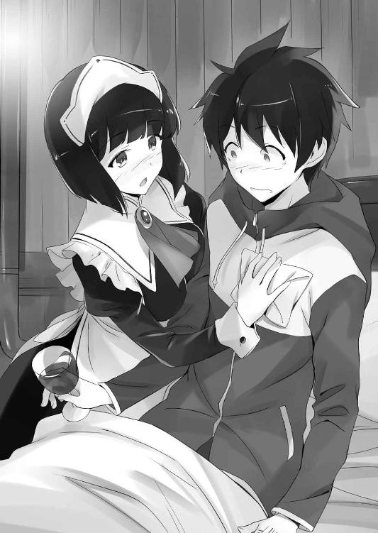
ちっちゃなルイズの胸とは明らかに違う、ふよん、と沈み込むような感触。ティファニアのメロンちゃんほどではないが、シエスタの胸もまた、十分な破壊力があった。
ティファニアの魔法のようなおっぱいも、そりゃあすごい。でも、ティファニアの胸は......、日本人の才人にとっては、ちょっとファンタジー入ってるというか、あまりに神々しすぎて、非現実的な感じがしてしまうのも事実であった。
その点、シエスタは黒髪だし、八分の一ほどは日本人の血が混じっているしで、なんとなく、学校のクラスメートにいそうな感じというか、イケナイ感じというか......、なんというか、とにかくリアルな感じがあるのである。
さらにまずいことには、シエスタさん、なんと下着を着けていない。
こっちの世界の女の子は、みんなノーブラである。
才人は鼻の奥がつーんとなった。
「ああ、これはだめですね。サイトさん、服を脱いでください」
「だ、大丈夫だよ、このくらい」
「だめですよ、風邪をひいたりしたら、どうするんですか、ほら、さあ！」
ふよんふよんっ。シエスタは胸を押しつけてくる。ふよんっ。
「う、ぐぐ......」
才人はなけなしの理性を総動員して、シエスタの波状攻撃に耐えた。
ルイズは今頃、才人のために教皇を説得しているのである。それを思うと、ルイズに申し訳がたたない。才人は心の中で、明止鏡水、明止鏡水......、と唱えて、心を落ち着かせようとする......、あれ、明止鏡水で合ってたっけ？
「あの、シエスタさん？」
「な、なんですか？」
ふよんっ。
「えっと......、さすがに、無理があると思うんだけど......」
才人が言うと、シエスタははあっと長いため息をついた。
「わかりました。サイトさんには、ミス・ヴァリエールがいますもんね」
「......うん」
「はあ、だめですか......、こんなにアピールしてるのに」
「ごめん」
「いいですよ。まあ、そんなサイトさんだから、好きなんですし」
シエスタは拗ねたように唇をとがらせると、才人の隣にちょこんと腰かけた。
ワインをくいっとあおり、そのまま、こてん、と頭を才人の肩にあずけてくる。
「......シエスタ？」
「わたしだって、不安なんですよ」
シエスタは言った。
「このままじゃ、サイトのさんの......、わたしの曾お祖父ちゃんの来た世界と、戦争になるんですよね？ また、一年前みたいに、あんなことになるんですか？」
声を震わせながら、シエスタは不安そうな目で才人を見つめた。
才人はハッとした。一年前、アルビオン軍の侵攻で、彼女の故郷であるタルブの村が焼かれたことを思い出したのだ。
「大丈夫、そんなことにはさせないよ。俺とルイズが、なんとかするって」
「サイトさん......」
教皇の野望を阻止して、地球もハルケギニアも、両方救ってみせる......、震えるシエスタの肩を、安心させるように抱きながら、才人はそう決意するのだった。
そんなこんなで、しばらくすると......、ワインに酔ったのか、シエスタは才人の胸に頭をあずけて、すやすやと眠ってしまった。シエスタは、眠ることにかけてはほとんどプロ級だ。一度眠ってしまうと、最低でも一時間は目を覚まさない。
しょうがないな......、と苦笑して、才人はシエスタを自分のベッドに寝かせてやった。
こんなところを見られたら、またルイズに誤解されるかもしれないが......。
〝ルイズ、まだ帰ってこないのか......〟
ふと、才人の胸のうちに、小さな不安が生まれた。
ひょっとすると、カッとなって、教皇に〝爆発〟の一発もぶちかまし、捕まっちまってるかもしれない。なにしろルイズときたら、普段は貴族らしい振る舞いがどうのこうのとうるさいわりに、ひとたび感情が爆発すると、相手が姫様だろうが、教皇だろうが、おかまいなしだ。
〝本当に、一人で行かせて大丈夫だったのか？〟
心配になった才人は、船室の丸窓から、ロマリア艦隊の集まる場所に目をやった。
と、才人は眉をひそめた。
真っ暗な海上に、なにか巨大な黒い塊のような物体が見えた。周囲のフネから投射される、サーチライトのような魔法の明かりが、その物体を照らしている。
「......なんだ、あれ？」
なにか嫌な予感がして、才人は丸窓に張りついた。
よく見れば、空中に浮かぶ四隻のロマリア艦が、大量の鎖かなにかで、その巨大な塊を引き上げようとしているようだ。
全体的に丸みを帯びた、全長百メイル以上はあろうかという、円筒形のシルエット。
「お、おい、まさか......！」
その正体に気づいた才人の顔が、みるみるうちに青ざめた。
それは、海の底に眠っていたはずの〝原子力潜水艦〟であった。
「......あいつら、なに考えてんだ！」
才人はベッド脇のデルフリンガーをひっつかむと、すぐに部屋を飛び出した。まだ起き上がる体力もなかったが、〝ガンダールヴ〟の力で、なんとか動くことはできる。
『オストラント』号の甲板に出ると、才人は舷側に身を乗り出した。何重もの鎖でぐるぐる巻きにされた、巨大な円筒形の塊が、ゆっくりと海上に引き上げられていく......。
〝原潜を引き上げようとしてるんだ！〟
才人はぞっとした。〝聖地〟に沈んだ原子力潜水艦。ロマリア軍は、なぜ、あんなものを引き上げようとしてるんだ？
と、そのときであった。海中から引き上げられ、宙に吊るされた潜水艦の周囲で、小規模な爆発が立て続けに起こった。フネの甲板に整列した、ロマリアの聖堂騎士隊が、潜水艦に向けて、一斉に魔法の矢を放ったのだ。
「おいおい、なにする気なんだよ......！」
才人は顔を真っ青にして悲鳴をあげた。原子力潜水艦がそう簡単に壊れるとは思えないが、このままでは時間の問題だろう。
〝あいつら、あれがどんな恐ろしいものか、理解してないんだ！〟
デルフリンガーの話によれば、〝原潜〟そのものは、もう完全に活動を止めていて、放射能漏れの危険なんかはないらしい。でも、それはあくまで動力のほうの話だ。中にあるアレ......、口にするのも恐ろしいあの〝武器〟は、まだ使える状態にあった。
「やめさせねえと......」
才人は焦燥に満ちた顔で、舷側の手摺りを握りしめた。ロマリアの船団までは、かなりの距離がある。しかも、〝原潜〟を吊り上げているフネは、はるか空の上だった。
「どうしたの？」
と、背後から声をかけられた。
振り向くと、本を小脇に挟んだタバサであった。
「タバサ！」
才人は、渡りに船とばかりに、タバサの肩を摑んだ。タバサは驚いたように目を見開き、頰を赤く染めた。
「......なに？」
「あのロマリアのフネまで、俺を魔法で運んでくれないか？」
「どうして？」
「あれ、俺の世界の爆弾なんだ。早く止めないと、大変なことになる」
タバサはロマリアの船団に目を向けた。少し考えて......、それから、首を振った。
「それは無理。許可なくロマリアのフネに着艦すれば、外交問題になる。あなたもわたしも、捕まってしまう」
「う、そりゃそうか......、いや、でも、そんなこと言ってる場合じゃないんだ！」
才人は必死に言った。核兵器の詳しい仕組みなんてわからないが、外から壊されたからって、まあ、そう簡単に爆発するようなもんでもないだろう。でも、下手をすると、あたり一帯に放射能がバラまかれるかもしれない......。
「......わかった」
そんな才人の必死さが伝わったのだろうか......、タバサはこくっと頷くと、海に向かって口笛を吹いた。すると、ほどなくして、ばっさばっさと羽ばたく音がした。フネの甲板に舞い降りてきたのは、翼を広げたシルフィードだ。
「お姉様、どうしたのね？ きゅい」
「乗って」
タバサはシルフィードの背に素早く跨がった。才人はタバサの腰に摑まる。
「きゅいきゅい、夜のデートなのね！ お姉様、やるのね！」
なにを勘違いしたのか、シルフィードは嬉しそうに鳴いた。
「ああ、シルフィは感動してるのね。やっと、お姉様がタマゴを生む気になってくれたのね。色ボケメイドと桃髪ぺったら娘なんかに遠慮する必要なんてないのね、きゅい」
「............」
タバサはシルフィードの頭を、杖でぽかっと叩いた。
「なにするのね！ お姉様は、早く素直になったほうがいいのね」
ぽかっ。ぽかっ。タバサは顔を真っ赤にしてシルフィードを叩く。だが、韻竜の頭部は硬い鱗に守られているため、シルフィードは痛くもなんともないのだった。
「早く、あのフネに接近して」
タバサは杖の先で、空に浮かぶフネを指した。
「お安いご用なのね、きゅい！」
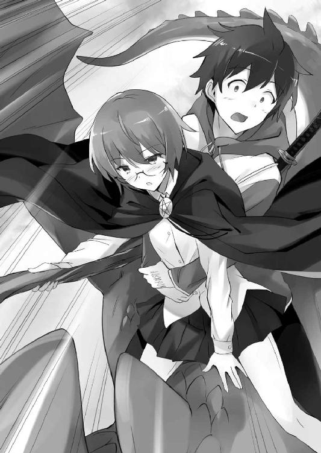
甲板を飛び立ったシルフィードは、一瞬で二百メイルも空を駆け上った。さすがに、〝フライ〟の魔法なんかより、ずっと速い。風を切ってぐんぐん上昇すると、あっというまに、空に浮かぶロマリア艦の真上に到達した。
「風竜だ！」「なぜ、こんなところに！」
甲板に整列したロマリアの聖堂騎士たちは、突如、頭上に現れた風竜の姿に、何ごとかとざわめきはじめる。
と、混乱する集団の中から、一人の聖堂騎士が進み出た。長い黒髪を額の左右で分けた、美男子といっていい顔立ちの青年だ。
「あいつ......」
才人は、キザったらしいその顔に、見覚えがあった。あれは、たしか......、名前は忘れちまったが、以前、ロマリアの街で才人たちとひと悶着を起こした奴だ。
「わたしは、アリエステ修道会付き聖堂騎士隊隊長、カルロ・クリスティアーノ・トロンボンティーノ。貴殿らに警告する、貴殿らはいったい誰の許可を得て、この神聖なるロマリア艦の頭上を自由に飛んでいるのか！」
カルロは、頭上の才人たちに聖杖を向け、大声で怒鳴った。
「待ってくれ、俺はサイト......、トリステイン女王の騎士、ヒラガ・サイトだ」
「なに？ シュヴァリエ・ヒラガだと......、あの平民どもの英雄か！」
才人が名乗ると、カルロは馬鹿にしたように笑った。
「トリステインの平民風情が、なにをしにきた！」
「いますぐ、あの鉄屑に魔法を撃つのをやめてくれ！ 大変なことになっちまうんだ！」
「なんだと？」
カルロは肩をすくめ、配下の騎士たちのほうを振り返った。
「いま、あの賊がなんと言ったか、聞こえたか？」
「風の音で聞こえませんでしたな」
カルロはニッと笑みを浮かべた。聖杖を指揮棒のように掲げ、配下に号令する。
「神と始祖ブリミルの敬虔なしもべたる諸君、撃ち落とせ！」
「んなっ......」
聖堂騎士隊の騎士たちが、一斉に呪文を唱えはじめた。
「シルフィード、右に旋回。よけて」
タバサが珍しく、焦った声で言った。
「無茶言わないで、なのね、きゅい！」
ぴったりと揃った聖杖の先から、無数の光の矢が放たれる。
「うわ！」
シルフィードが急角度で旋回した。才人は思わず、振り落とされそうになる。
「しっかり、摑まって」
タバサが言った。才人はタバサの腰に手を回し、身体を密着させる。
その瞬間、タバサの顔がほんのり赤くなった。
「お姉様、積極的なのね、きゅいきゅい！」
ぽかっ。ぽかっ。
「きゅい、お姉様照れてるのね、可愛いのね」
聖堂騎士隊が一糸乱れぬ所作で放った、無数の〝マジック・アロー〟が、才人たちめがけてびゅんびゅん飛んでくる。だが、タバサは普段と変わらぬ冷静さで、自分の背丈ほどもある大きな杖を構えた。口の中で素早く呪文を唱え、魔法を完成させる。
〝ウィンディ・アイシクル〟
タバサの得意とする、風と水の系統を合わせた呪文。スクウェア・クラスの威力を持った氷の矢が、聖堂騎士隊の放つ〝マジック・アロー〟をつぎつぎと撃ち落とす。
「なんだと！」
「侮るな、あのメイジ、かなりの手練れだぞ！」
「風竜だ、風竜のほうを狙え！」
強力なタバサの魔法を目の当たりにして、聖堂騎士隊の間に動揺が広がった。
「説得は無駄か、しょうがねえ......」
才人はため息をつくと、デルフリンガーの柄を握りしめた。左手のルーンが光る。
「タバサ、あいつらの真ん中に俺を落としてくれ」
「わかった」
タバサは短く頷いた。
シルフィードは聖堂騎士隊の頭上を旋回すると、フネの甲板めがけて急降下する。同時に、デルフリンガーを握った才人は身軽に飛び降りた。
カルロが顔を真っ赤にして怒鳴った。
「捕らえろ！ これはロマリアへの侵犯だ、殺してもかまわん！」
カルロの構えた聖杖に、刃渡り二メイルほどもある炎の刃が生まれた。火の系統による〝ブレイド〟の魔法だ。燃え上がる炎が、ぶわっと才人の鼻先をかすめる。
「このっ、話を聞けっての！」
才人は風のような動きで〝ブレイド〟の刃先をかわすと、なにっと驚くカルロの腹に、デルフリンガーの柄をめり込ませた。
「うぐ......！」
「隊長殿！」
指揮官をやられた聖堂騎士たちは、混乱した。その隙に、才人は集団の中に素早く飛び込むと、棒立ちになった連中をつぎつぎと叩きのめす。
「囲め！ 囲んで押し潰せ！」
誰かが叫んだ。聖堂騎士の構えた杖の先から、ものすごい数の〝マジック・アロー〟が飛んでくる。才人はデルフリンガーを振り抜き、魔法の矢を受け止めた。眠った状態でも、デルフリンガーはちゃんと魔法を吸収してくれるようだ。
「なんだと！」
〝ガンダールヴ〟の力を目の当たりにした聖堂騎士たちは、思わず、あとずさった。
「......ったく、頭の固い連中だな」
才人は肩で息をしつつ、周囲を囲む聖堂騎士を見回した。普段の才人なら、これくらいで息があがるなんてことはない。やはり、〝リーヴスラシル〟のルーンの影響で、ひどく体力を消耗しているのだった。
「なあ、聞いてくれ！ あれは、絶対触れちゃいけないものなんだ！」
「黙れ、曲者め！」
才人が怒鳴っても、聖堂騎士たちはまるで聞く耳を持たない。動きの止まった才人を狙い、ぴたりと揃えた杖の先が、赤や青の光を放つ。
「くっ......」
才人が、デルフリンガーを両手で構え直す。
そのとき......、ばっさばっさと翼のはためく音が聞こえた。はっと上を見上げると、シルフィードではない、大型の風竜が頭上を飛んでいた。
「まあまあ、待ちたまえ、少しは彼の話を聞こうじゃないか」
アズーロの背に跨がった神官の青年が、陽気な声で言った。
「チェザーレ殿......」
誰かが呟く。聖堂騎士たちは一斉に聖具を構え、神官の礼をとった。
「ジュリオ、てめえ......」
才人は、甲板に降りてきたジュリオを睨んだ。
だが、いくら憎たらしい相手でも、一応は話の通じる相手だ。少なくとも、この聖堂騎士の連中よりはましだろう。
「サイト、なんだって君は、ぼくたちのフネの上で暴れてるんだい」
「お前、あんなもん運び出して、どうするつもりだよ......」
「どうするって、決まってるじゃないか。あの〝武器〟は、始祖ブリミルがぼくたちに贈ってくださったプレゼントだ。ありがたく使わせてもらうだけさ」
ジュリオは平然として言った。
「使う、だと？」
「当然だろ。〝ヴァリヤーグ〟と戦うには、強力な武器がいる。まあ、仇敵の〝武器〟を使うことに、まったく抵抗がないわけじゃないが......、ぼくたちはあくまで、現実主義者だからね。利用できるものは、なんでも利用させてもらう」
「あれがどんなものか、わかってるのか？ あれは......」
とんでもない爆弾なんだぞ、と言いかけて......、才人は口ごもった。ロマリアの連中に、あの中にあるもののことを知られるのはマズイと思ったのだ。
「ああ、それは心配ない。魔法で外の容れ物を壊したくらいじゃ、爆発したりしないさ。あれを使うには、おそらく、もっと大きな力が必要なんだろう」
「なっ......」
ジュリオの口にした言葉に、才人は思わず、息を吞んだ。
こいつ、まさか、中にある〝アレ〟のことを知ってるのか......？
「僕にはわかるんだよ」
そう言って、ジュリオは自分の額を指差した。
「〝ミョズニトニルン〟は〝神の頭脳〟。君のように〝聖地〟の武器を自在に操ることはできないが、その仕組みを理解することくらいは、まあできる。その〝ミョズニトニルン〟の知識が教えてくれたんだ。信じがたいことに、あの円筒形の中に眠っているのは、虚無の力......、少なくとも、それに極めて近い性質のものだ。もしかすると、ガリア王の使った〝火石〟以上の恐るべき破壊力を秘めているんじゃないかな」
「まさか、教皇は、アレを地球に使うつもりなのか！」
才人は叫んだ。正体を知って引き上げてるってことは......、つまり、そういうことなんじゃねえか。
だが、ジュリオは残念そうに首を振り、
「いや、さっきも言った通り、あの恐るべき〝武器〟の構造はじつに複雑だ。悔しいけど、ぼくたちの持つ知識では、起爆することもできないだろうね」
それから、ジュリオは冗談めかした口調で言った。
「でも、サイト......、もしかして、〝ガンダールヴ〟の君なら、あれをうまく扱うことができるんじゃないか？」
〝こいつ......！〟
才人は内心でドキッとした。以前、〝竜の巣〟で、あの潜水艦に触れたとき、左手のルーンが光った。そして、才人の頭の中に、あの〝武器〟を扱うイメージが流れ込んできたのである。さすがに、弾道ミサイルを発射することはできないだろうが、安全装置の問題をクリアすれば、起爆することそのものは可能な状態だった。
「できるんだね」
ジュリオの月目が鋭く光った。
「どうだ、サイト？ よかったら、アレの使い方をぼくたちに教えてくれないか？」
「ふざけんな！ あれはな、一度使ったらおしまいなんだよ。そういう〝武器〟なんだ。お前も、あの〝火石〟の威力を見ただろ？ あとにはなにも残らねえ」
「ああ、そうだろうね。でも、そのくらいでないと、意味がない。この〝聖戦〟は遊びじゃないんだ。ぼくたちの存亡を賭けた戦いなんだぜ」
ジュリオは真顔になって言った。いつものおどけたような調子は完全になりをひそめ、焦りの表情さえ浮かべていた。
才人はデルフリンガーの柄を強く握った。こいつらも必死なんだ、と思った。なにせ、世界が滅びかかっているんだもんな......。でも、こっちだって、見過ごすわけにはいかない。今はまだでも、いずれ、使い方を知るようになるかもしれない。あんなものを、地球に対して使わせるわけにはいかない......。
「ジュリオ、悪いことは言わねえ。あれは海の底に沈めとけ」
「断る、と言ったら？」
「そしたら......、力ずくでも、止める」
才人はデルフリンガーの刃をジュリオに向けた。
「説得は無駄みたいだな、〝兄弟〟」
ジュリオはやれやれと首を振ると、腰に提げた細身のサーベルを抜き放った。同時に、ジュリオの背後に控えた聖堂騎士隊が聖杖を構える。
「君たち、手出しは不要だぜ。これは男同士の決闘だ」
「タバサ、助太刀はしなくていい」
才人も、頭上のタバサを振り返って言った。タバサの周囲には激しい氷風が吹き荒れ、いまにも、ジュリオと聖堂騎士隊に向けて、強力な〝スクウェア・クラス〟の呪文をぶっ放しそうだったのである。ここでタバサを巻き込みたくはなかった。
「アズーロに乗れよ、ジュリオ。剣を持った〝ガンダールヴ〟に勝てるわけないだろ」
「どうかな？ いまの君は、相当弱ってるんじゃないか？」
ジュリオに図星をつかれ、才人は沈黙した。たしかに、才人の視界はかすれ、全身の筋肉は悲鳴をあげていた。もしデルフリンガーを手放して、〝ガンダールヴ〟の力を失えば、たちまち倒れ込んでしまうだろう。
「それでも、俺が勝つよ」
言うが早いか、風のように斬り込んだ。ジュリオは見事に反応した。神官とは思えぬほどの早業で、才人の剣を受け止めた。だが、その判断は間違いだった。〝ガンダールヴ〟が本気で打ち下ろした一撃は、細身のサーベルなど、簡単にへし折ってしまう。なにしろ、才人の握った刀は、ブリミルから贈られた、無銘なれど本物の〝打刀〟。しかも、〝硬化〟と〝固定化〟の魔法がかかっている。
勝負は一瞬で決着した。
才人はデルフリンガーの刃を、ジュリオの首筋に突きつけた。
「さすがだね、〝ガンダールヴ〟」
「いますぐ、あれを海の底に戻せ」
「悪いが、それはできない」
パンッと乾いた音がした。瞬間、才人の膝に焼けるような激痛が走った。
「......っ、な、に......？」
才人は思わず、デルフリンガーを取り落とした。その途端、全身の力が一気に抜けて、才人はその場に倒れこんだ。
「油断したな、サイト。〝ヴァリヤーグ〟の〝武器〟を扱えるのは、なにも〝ガンダールヴ〟だけじゃないんだぜ」
ジュリオの手もとで、なにかが光った。オートマチックの小型拳銃だ。
「てめえ、銃とか、きたねえぞ......」
うつぶせに倒れた才人は、ジュリオを見上げて睨んだ。
「なにをいまさら。これまで、ぼくたちはさんざん手を汚して、あらゆるものを犠牲にしてきたんだ。〝聖地〟の奪還、その目的のためには、エルフとだって手を結ぶし、仇敵の〝武器〟だって使う。卑怯もくそもない、これは生存競争なんだぜ」
「くっ......」
才人は、床に落としたデルフリンガーに手を伸ばした。だが、ジュリオは即座に、デルフリンガーを舷側のほうへ蹴り転がした。
その瞬間、ジュリオめがけて〝氷の矢〟が飛んだ。
怒りに燃えたタバサが、〝ウィンディ・アイシクル〟を放ったのだ。
「おっと！」
ジュリオは素早く跳びすさった。
「タバサ！」
才人が叫ぶ。
タバサは〝ブレイド〟の呪文を唱え、シルフィードの背から甲板に飛び降りた。
怪我を負った才人を見て、いつも冷静なタバサは、怒りに我を忘れた。
と、ジュリオめがけて走り込もうとしたタバサの背に、杖の先が触れた。
「......！」
「動かないで、姉さんを傷つけたくない」
タバサは動きを止めた。いつの間にそこにいたのだろう......、背後に現れたのは、タバサにうり二つの少女、双子の妹のジョゼットであった。
タバサは戦慄した。元北花壇騎士の自分に気づかれることなく背後に回るなど、どんな手練れのメイジにも不可能なはずだ。まして、ジョゼットは訓練を受けたこともない、ただの修道女だったはず......。
タバサはふと、父に仕えたカステルモールの話を思い出した。
彼は言っていた。〝虚無〟の担い手であった叔父のジョゼフ王は、空間を一瞬で移動する、奇妙な魔法を使ったと。
「お願い、杖を収めて。ジュリオを傷つけたら、わたしは姉さんを許せなくなる」
ジョゼットは、感情を押し殺した声で言った。もし、タバサが少しでも身動きをすれば、彼女は躊躇うことなく、虚無の呪文を放つだろう。
「............」
タバサは、杖を落とした。頭の中の冷静な部分が、ここで無謀なことをすれば、才人を助けることができなくなる、と判断したのであった。
「ジョゼット、助かったよ」
ジュリオは微笑むと、甲板に倒れ込んだ才人を見下ろした。
「サイト、正直、君はぼくたちに協力してくれると期待してたんだけどな」
「そんなわけあるか、馬鹿野郎！」
才人は嚙みつくように言った。
「でも、君はもう、こっちの世界の人間じゃないか。おまけにトリステインの英雄で、たくさんの仲間もいる。それに、愛する恋人も......、そのハルケギニアが、滅びの危機に瀕しているっていうのに、それでも君は、故郷のほうが大事なのか？」
「............」
たしかに、地球を救うということは、ハルケギニアを滅びるままにまかせるということだ。風石の大隆起が起これば、住む場所の半分がなくなってしまうのだから。
大勢の人たちが犠牲になるかもしれない。
その中には、親しい人たちもいるかもしれない。
〝でも、それでも......、俺は地球の人間だ......〟
父さんや母さんが、大切に育ててくれた......、普通の高校生、平賀才人なんだよ。
ハルケギニアのために、地球を征服させるなんて、できるわけがねえ......。
才人は、無言でジュリオを睨みつけた。
「そうか......、それなら、しかたない。君の自由だからな」
ジュリオは、悲しそうに首を振った。気のせいかもしれないが......、不思議と、いつものポーズではなく、本気で悲しんでいるように才人には感じられた。
「サイト、君の身柄を拘束させてもらう。罪状はロマリア艦船への侵犯行為と......、まあ、その他諸々だ。聖堂騎士に楯突いて、異端審問にかけられないのは幸運だな」
「ふざ......、けんな......！」
才人は、必死に立ち上がろうとした。
だが、もう、身体が思うように動かない......。指を動かすのがせいぜいだ。
〝ちくしょう、このままじゃ......〟
「ジュリオ、サイトから離れなさい！」
そのとき、フネの甲板に、聞き慣れた声が響きわたった。
〝......え？〟
ハッとして、才人は顔を上げた。
視線を向けたそこに、彼女はいた。
風にそよぐ百合紋章のマント。双月の光を浴びて輝く、桃色ブロンドの髪。鳶色の瞳に激しい怒りの感情をたたえ、杖の先をジュリオに向けている。
まるで、神々しい女神のような、その姿......。
「ルイ......ズ......？」
才人は、床に這い蹲ったまま、愛するご主人様の名前を口にした。
なんでここにいるんだよ......、とか、そんなことはどうでもよかった。彼女の姿を見ただけで、身体の中から力がわき上がってきた。
ジュリオが両手を上げてうしろに下がると、ルイズはすぐに才人のそばへ駆け寄った。
「サイト、どうしたのよ！ ひどい怪我してるじゃない！」
血を流した才人を見て、ルイズの瞳に大粒の涙が溢れた。
「ルイズ、どうして......？」
「あんたを乗せたシルフィードが、飛んでいくのが見えたのよ。そしたら、あんた、フネの上で戦いはじめて......、あわてて〝瞬間移動〟で跳んできたの！」
ルイズは、冷たくなった才人の手を握り、ジュリオに向かって叫んだ。
「早く、サイトを治療して！」
「安心しなよ、命に関わるような傷じゃない。ぼくたちだって、彼を殺すわけにはいかないからね」
「いいから、早く！」
ジュリオは頷くと、治癒魔法を使えるメイジたちを呼びに行かせた。
「サイト、しっかりして......、お願い、死なないで......」
才人の手をしっかりと握りしめたまま、ルイズは祈るように呟く。
だが、そんなルイズの態度に、才人は妙な違和感を覚えた。いや、心配してくれるのは嬉しいのだが、なにか、なにかが引っかかるのだ......。
才人は、仰向けになって、口を開いた。
「ルイズ......」
「なに？」
「教皇との話は、どうだったんだ？」
途端、ルイズの表情がこわばった。
「......ルイズ？」
「あの、サイト......、あのね、わたし......」
ルイズの鳶色の瞳に、大粒の涙が溢れ出し、才人の頰を濡らした。
「え？ え？ ええ？」
才人は戸惑った。
「ルイズ、おい、どうしたんだよ、ルイズ......」
「ごめん......、ごめんなさい、サイト......」
「なんだよ、ルイズ......、一体、なにに謝って......」
ルイズは、握った才人の手をそっと離すと......、信じられない言葉を口にした。
「わたし、サイトの故郷を征服して、このハルケギニアを救うわ」
「なっ......！」
才人は絶句した。あまりの衝撃に、声も出なかった。
だって、さっきは......、そんなこと......。
「ルイズ......、どういう、ことだよ、なあ、ルイズ......！」
顔を背け、立ち去ろうとするルイズの背中に、才人は懸命に手を伸ばした。
だが、傷を癒すために呼ばれたメイジたちが、すぐに才人を取り囲み、ルイズの姿は見えなくなってしまう。
「ルイズ......、ルイズ......、うっ......」
メイジたちが、暴れる才人に〝眠り〟の魔法を唱えた。
たちまち、眠気が襲い、才人の意識は暗闇の中に落ちていく......。
「......ごめんなさい」
と、最後にそんな声が聞こえた気がした。
第六章 監獄島
アンリエッタの乗艦する、トリステイン王国艦隊の旗艦は、アルビオン攻略のために建造された〝竜母艦〟『ヴュセンタール』号である。多量の竜騎士を離発着させるために、長大な平甲板を備えた、この特殊な新鋭艦は、アルビオン戦役の後には、王家の専用艦として運用されていた。
夜も更けた頃......、海上に停泊したその『ヴュセンタール』号の執務室で、アンリエッタは一人、苦悩のため息を洩らした。
〝まさか、こんなことになるなんて......〟
教皇ヴィットーリオの語った、〝聖地〟の真実と、異世界への侵略計画。それは、戦争の回避を望んできたアンリエッタにとって、到底、受け入れられるものではなかった。
異世界との戦争は、血で血を洗う凄惨なものになるだろう。ハルケギニアの歴史上、類を見ないほどの、恐ろしい地獄が生まれることになる。そして、その戦争の旗印として立たせられるのは、アンリエッタの大切な親友なのだ。
「ああ、ルイズ......」
アンリエッタは目をつむると、両手を組んで、祈るように呟いた。
数ヶ月前......、彼女は、ほんの小石ほどの大きさの〝火石〟が、ガリアの両用艦隊を焼き尽くしたのを、目の前で見た。たった一瞬で、数万もの命が失われたのだ。だが、教皇は、その惨劇を上回るほどの恐ろしい殺戮を、ルイズにさせようとしている......。
〝そのようなことは、させないわ、絶対に〟
ルイズだけではない。トリステインの兵たち、そして、ハルケギニアのすべての民のために、なんとしても、ロマリアの狂気を止めなくてはならない......。
〝でも、どうすればいいのでしょう。わたくしの力は、あまりに無力だわ〟
誰か、相談できる相手が欲しかった。
敬愛する母后マリアンヌは、はるか遠いトリスタニアの地だ。口は辛辣だが、いつも陰でアンリエッタを支えてきてくれたマザリーニ卿は、〝聖地回復連合軍〟に編入されたトリステイン軍の本隊と共にいる。合流には時間がかかるだろう。
そのとき、執務室の扉を静かに叩く音がした。大きく三回、次に小さく二回......、その叩き方を許した者は、王宮内でもただ一人だった。
「どうぞ、お入りなさい」
「は、失礼いたします、陛下」
息を切らして執務室に入ってきたのは、銃士隊隊長のアニエスであった。普段は冷静な銃士隊隊長の、ただならぬその様子を見て、アンリエッタは怪訝そうに声をかける。
「どうしたのです、アニエス。こんな夜更けに」
「は、申し訳ありません。なにぶん、緊急の事態でありまして......」
「なにごとです？」
アンリエッタの表情が険しくなった。
「陛下の騎士、サイトの身柄が、ロマリアの手に拘束されました」
「なんですって！」
アンリエッタは目を見開き、悲鳴のような声をあげた。
アニエスはことの次第を報告した。ロマリア側の通達によれば、才人はロマリアの軍艦に乗り込んで、乱闘騒ぎを起こし、数人の聖堂騎士を負傷させたという。他国の軍艦に許可なく乗り込み、まして暴れるなど、言語道断だ。それが王家直属の騎士となれば、ロマリアとの重大な外交問題に発展してもおかしくはない。
「それは、本当なのですか？」
アンリエッタは、ショックを受けた表情で尋ねた。
「事実のようです、残念ながら」
「そうですか......」
だが、アンリエッタは、その話になにか不審なものを感じとっていた。
才人が理由もなくそんなことをするような人間でないことは、アンリエッタもよく知っている。才人は決して血気盛んな少年ではない、彼がそんな行動に出たということは、なにか、きっと抜き差しならぬ理由があったに違いなかった。
話を聞き終え、ようやく冷静さを取り戻したアンリエッタは、アニエスに尋ねた。
「それで、サイト殿は、いまどこに？」
拘束されたなら、ロマリアの艦の中だろうか。まさか、あの悪名高い、ロマリアの宗教裁判にかけられているのではあるまいか......、そんな心配が脳裏をよぎる。
「部下の報告によれば、『シャトー・ディフ』なる場所に移送されたと」
「『シャトー・ディフ』？ なんですか、それは？」
「は、わたしも詳しくは存じませんが、なんでも、『エウメネス』の沖合に浮かぶ孤島に造られた、エルフの監獄だとか」
「エルフの？ なぜ、そんな場所にサイト殿を？」
「ロマリアのフネに拘束したのでは、脱走される恐れがありますからな。エルフの評議会と交渉し、身柄を引き渡したのでしょう。罪状は、アディールからの脱走と〝悪魔の門〟への侵入......、といったところでしょうか。なにより、エルフの虜囚となれば、こちらは外交的に手が出しにくい」
「聖下は、仇敵であったエルフと、随分と仲よくなったものですわね」
アンリエッタは唇を嚙み、そんな皮肉を口にした。
「至急、ロマリアに抗議をいたしますわ」
アンリエッタは言った。
「ロマリアが話を聞くでしょうか」
「いえ、聞く耳をもたぬでしょうね」
ロマリアへの抗議は、あくまで表向きのものだ。アンリエッタには考えがあった。
〝サイト殿を、ロマリアの手から取り戻さなくては......〟
教皇が才人の身柄を押さえたのには、なにか目的があるはずだった。
おそらく、彼の使い魔としての力が、〝始祖の虚無〟の発動に関わってくるのだろう。あるいは、ルイズに対しての人質の意味もあるのかもしれない。そして、わざわざエルフの監獄に移送したのは、才人とルイズを引き離す目的もあるのではないか......。
つまり、才人の身柄をこちらが押さえれば、教皇を交渉のテーブルに着かせることは、可能かもしれない......。
あえていえば、才人よりも、〝虚無〟の担い手である、ルイズやティファニアの身柄をこそ確保すべきなのだろう。だが、二人はロマリアのフネに行ったきり、もう何時間も戻ってくる気配がない。当然、アンリエッタは二人を帰すよう、ロマリア側に働きかけているが、それは拒否されてしまった。
〝すでに、二人は教皇聖下の手中にあると見るべきでしょうね......〟
アンリエッタは、先だってのヴィットーリオとの会談を思い出し、身震いした。
トリステイン女王である自分が、ルイズたちを救出するために動けば、間違いなく、ロマリアとの全面戦争になるだろう。そして、トリステイン王国は、アルビオンと同じ道をたどることになる。それだけは、絶対に避けなければならない。
そのことを考えれば、才人がエルフの監獄に移送されたのは、むしろ好都合と言えた。
ロマリアはあくまで、才人を〝罪人〟として、エルフ側に引き渡した形である。エルフ相手では、たしかに〝外交的〟には手を出しにくいかもしれないが、ただの囚人一人を脱獄させたところで、国家間の対立に発展することはないだろう。危ない橋であることに変わりはないが、少なくとも、ロマリア側に全面戦争の口実を与えないことはできる......。
分の悪い賭けではあった。だが、現状、アンリエッタが〝聖戦〟を止めるために取れる手立ては、これくらいしか思いつかない。
だが、それを誰に任せるべきか......、それが一番の問題だった。
ここでは、アンリエッタの指揮権は存在しないも同然だ。
トリステイン軍の本体は〝聖地回復連合軍〟に編入されており、今のアンリエッタが動かせるのは、直属の親衛隊である銃士隊のみ。しかし、彼女たちはあくまで、平民で構成された、身辺警護の部隊。エルフの監獄に向かわせることはできない......。
「どうすれば......」
アンリエッタは唇を嚙み、考え込んだ。
〝シャトー・ディフ〟とは、ガリア語で、〝監獄島〟を意味する言葉である。
人間とエルフの交流する都市、〝エウメネス〟の沖合いにある、直径二リーグほどのその島は、まさに海の監獄であった。
監獄島に送られるのは、民族反逆罪など、重大な罪を犯したエルフに限られる。エスマーイルをはじめとする『鉄血団結党』の党員たちも、この島に収監されていた。
この島は、エルフの信仰する〝大いなる意思〟に見放された場所であり、精霊の力がほぼ遮断されていた。なにしろ、エルフは先住魔法を使う。杖を取り上げてしまえばなにもできなくなる、蛮人のメイジとは違うのだ。精霊の力を行使できるのは、石の牢獄そのものと契約した衛士たちのみ。一度、収監されたら、エルフでも二度と出てくることはできない鉄壁の監獄......、才人は、そこに監禁されていた。
牢獄の設備そのものは、それほど悪いものではなかった。
ベッドもあるし、椅子と机に、ちゃんとしたトイレもある。窓がなく、殺風景なところを除けば、上等なホテルの個室のようだ。
だが、扉は頑丈な金属製で、叩いてもびくともしない。外の光は一切遮断されていて、部屋を照らすのは、壁に灯る小さな魔法装置の明かりだけだった。
「くそっ、こっちもだめか......」
どこかに抜け道はないかと、ずっと血眼になって探していた才人は、とうとう諦めて、どかっとその場に座り込んだ。
まあ、この牢を出たところで、どのみちエルフの衛士に捕まるだけだ。それに、デルフリンガーも、ロマリアの連中に取り上げられちまったし......。
〝......つうか、牢屋にぶち込まれるの、これで三度目なんだよな、俺〟
才人は心の中で嘆息した。もう慣れたものといえば慣れたものだが、東京では、補導歴なんてもちろんない、普通の高校生だった才人である。こんなことに慣れてしまうのも、なんだか悲しいものがある。
「なあ、どうしよう？ なんか、いい方法はないかな？」
腕組みしたまま、才人は明かりの下に座る、もう一人の囚人に声をかけた。
「助けを待つ。それが最善手」
本を読んでいたタバサが、わずかに顔を上げて、言った。
そう、なんとタバサも、才人と一緒にこの監獄島に投獄されてしまったのである。どうも、才人が意識を失ったあのあと、捕まった才人を助けようとして、フネの上で聖堂騎士隊相手に大暴れしたらしい。
「お前、すごいな......、こんなときでも本を読めるなんて」
「こういう事態には、慣れている」
タバサは淡々と言った。
「それ、なに読んでるんだ？」
「ブリミル教の聖典」
「面白いのか？」
タバサは首を横に振った。
まあ、そりゃそうだろうな、と才人は思った。
なにしろ、杖だけでなく、本もすべて取り上げられてしまったのである。そんな中、唯一、持ち込みを許されたのが、このブリミル教の聖典だけだったんだろう。まあ、面白くなくても、文字を読んでいれば安心するものなのかもしれないが......。
「悪い、俺のせいで......」
「あなたのせいじゃない」
タバサは首を横に振った。
「わたしがそう望んだだけ」
その言葉を聞いて、才人はふと思った。
「なあ、タバサ......、お前、ひょっとして、わざと捕まった？」
「............」
才人が尋ねると、タバサはこくっと頷いた。
「いやいやいや、なんでだよ！ タバサまで捕まることないだろ」
「わたしはあなたの従者。あなたのそばで、あなたを守る義務がある」
タバサは視線を逸らすと、ちょっと早口で言った。
「タバサ......」
才人の胸に、なんだか熱いものがこみあげてくる。
「ありがとな」
そう声をかけると、タバサは頰を赤らめて、また本に目を落とした。
〝さてと、なんにしても、これからのことを考えないとな......〟
才人は腕組みしたまま、天井を見上げた。
まずは現状を把握する。
とりあえず、こんなところに閉じ込めた以上、ロマリアの連中は、才人を殺すつもりはないようだ。まあ、そりゃそうか......、と思う。なにせ、才人はルイズが〝最後の虚無〟を放つための〝魔力供給機〟なのだ。タバサを一緒に閉じ込めたのも、万が一、俺が死のうとするのを阻止させるためなんだろう。
ジュリオのことだ、たぶん、そんくらいは考える。
でも、たとえ才人が死んだところで、地球への侵攻が少し遅れるだけだろう。教皇は、また新たな担い手と使い魔を探し出して、同じことをさせるに決まってる。
〝だとしたら、まだ死ぬわけにはいかねえよな......〟
それから、才人が考えたのは、ルイズのことだった。
〝あいつ、今頃なにしてるんだろう......〟
『ごめんなさい、サイト......』
あのとき、ルイズが見せた涙。あれは、どういう意味だったんだろう......。
ルイズは、教皇の地球征服計画に反対してた。いくらハルケギニアを救うためといったって、そんな方法は間違ってる......、そう言っていたはずだ。
どうして、急にあんなことを言い出したんだろう。
教皇に丸め込まれちまったのか、それとも、なにかで脅されているのか......。
なんにせよ、あれがルイズの本心だとは思えなかった。
〝きっと、なにか隠してることがあるんだ。前に、俺を地球に送り返そうとしてくれたときだって、あいつ、あんなふうに泣いてたじゃねえか......〟
〝ルイズ......、ルイズ......〟
才人は心の中で、愛する恋人の名前を繰り返した。
ルイズに会いたい。顔が見たい。触りたい。抱きしめたい。キスしたい。せっかく再会できたのに、また離れ離れになるなんて、あまりに辛すぎる......。
ルイズのことを考えているうちに、涙が溢れてきた。タバサに涙を見られまいと、目をごしごしこすると、才人は床に寝転がった。
諦めたわけじゃない。
いざというときのために、体力を温存しておくためだった。
つぎに目覚めたときは、身体がまともに動くかどうかも、わからない。
でも、ルイズともう一度会うまでは、死ぬわけにはいかない......。
才人は、天井を見つめて呟いた。
「諦めねえ、絶対に......」
『オストラント』号の中にある小さな食堂で、ギーシュたち水精霊騎士隊の面々は、激しい議論を交わしていた。副隊長である才人が、エルフの監獄に移送されたという話を聞き、みんな頭を抱えていたのである。
「いやはや、まずいことになったぞ、どうしたものかな」
「決まってる。俺たちで副隊長殿を助けに行くんだ！」
ギムリが勇ましく拳を振り上げると、おーっと無責任なかけ声があがった。
「待った待った、落ち着きたまえよ、きみたち」
ギーシュがあわてて言った。
「なんだよギーシュ、きみはサイトを助けたくないのか？」
「そうじゃない、ぼくたちがどうこうできる問題じゃないと言ってるんだよ」
ギーシュは困ったように肩をすくめた。
「なにか理由があったにせよ、サイトがロマリアのフネで暴れたのは事実なんだ。つまり、この投獄はロマリア側に正当性があるってことだ」
「うむむ......、そりゃそうだが、サイトが可哀想じゃないか」
ギムリが不満そうに言った。
ギーシュは、ばつが悪そうに首を振った。
そりゃあ、ギーシュだって、才人を助けたいのは山々なのである。才人は理由もなしに暴れたりするような奴じゃない。だから、なにかあったんだろう、とは思う。
でも、ギーシュはエルフの恐ろしさを身をもって知っている。ここにいるのはみんな、威勢ばかりいい、ただのドットメイジだ。エルフの監獄なんかに乗り込んで、無事で済むわけがない。隊長として、仲間を危険な目に遭わせるわけにはいかなかった。
「きゅいきゅい、なにいってるのね、お姉様を助けて欲しいのね！」
人間の姿になったシルフィードがわめきだした。タバサに命じられ、『オストラント』号に戻ったシルフィードは、水精霊騎士隊に助けを求めたのだ。
「お姉様を助けてくれたら、シルフィが〝韻竜〟に伝わる感謝の踊りをしてやるのね」
「わ、脱ぐな脱ぐな！」
少年たちは顔を赤らめ、あわててシルフィードを止めた。
「ぼくだって、助けてやりたいのは山々だがね、今回は無理だよ」
ギーシュは言った。
「きゅいきゅい、なんなのね、おまえたち、いつもは貴族なんてえばってるくせに、肝心なときに役にたたないのね、きゅい！」
「なんだと、きみ、貴族の名誉を侮辱するのかね」
「喧嘩はやめろよ」
真面目なレイナールが言った。
「なにも処刑されるっていうんじゃないんだろ？ なんといっても、サイトはハルケギニアの英雄なんだし、なに、数日もすれば釈放されるさ」
「まあね」
マリコルヌが言った。
「つまり、ぼくたちにできるのは......」
「うん」
「サイトたちが戻ってきたときのために、歓迎パーティーの準備をすることだな」
「おお、それだ！」
「きゅいきゅい、みんなばかなのね！ 助けを求める相手を間違えたのね！」
シルフィードはわめくと、食堂を出て行ってしまった。
そんな中、レイナールがため息混じりに言った。
「みんな吞気だな。サイトの話が本当なら、もうすぐ戦争になるんだぜ」
「............」
みんなは急に黙り込んでしまった。
そう、ここにいる水精霊騎士隊の隊士たちは、みんな、〝タイガー戦車〟や〝ゼロ戦〟など、才人の世界の〝武器〟が活躍するのを間近で見てきたのだ。もし戦争になれば、そんなものと戦わなくちゃいけない。しかも、才人の話によると、あっちの世界の〝武器〟は、もっとずっと高性能だというではないか......。
「どうなっちまうんだろうなあ、ぼくたち」
マリコルヌが、ぽつりと言った。
「ルイズも、帰ってこないしな」
「そういや、そうだなあ」
「帰ってこないといえば、おっぱいエルフちゃんもだぜ」
水精霊騎士隊の少年たちは、なんとなく、不安そうに顔を見合わせた。
食堂がしんと静まりかえった、そのときだ。
「あの、失礼いたします......」
と、入り口に、灰色のフードを被った女が姿を現した。
全員がハッとして、瞬時に杖を抜いた。ドットメイジとはいえ、そこはさすが、実戦経験だけは豊富な少年たちであった。
「何者かね？」
ギーシュが杖を向けたまま、鋭く言った。ロマリアの手の者かもしれない。
「あ、その、わたくしは......」
「なんだ？ 怪しい奴だな」
マリコルヌが杖の先をぺろっと舐めると、女のそばに近寄った。
「スパイかもしれん、調べさせてもらおう」
マリコルヌが、杖をスカートに差し込もうとすると、
「お、おやめください、無礼な！」
女はマリコルヌの頰をぱしっとはたいた。
「なに、抵抗するとは、ますます怪しいじゃないか！」
マリコルヌはなぜか興奮した様子で、ぐいぐいと顔を寄せた。
「ひっ」
女が悲鳴をあげてあとずさる。フードがはらりと落ちた。
「え？」
その瞬間、食堂にいた全員の顔が青ざめた。
「アンリエッタ女王陛下！」
「こ、ここ、このたびは、女王陛下にたた、大変な、ごご、ご無礼をば......」
ギーシュが、床に頭をつけたまま、ガタガタと声を震わせた。
隊長以下、水精霊騎士隊の全員が、日本の土下座スタイルである。むろん、ハルケギニアに土下座などという作法はない。才人がルイズに謝るとき、いつもこうしていたことを思い出し、みんなそれに倣ったのだ。いやもう、自分たちの知っている貴族の作法などでは、女王陛下に対して反省の念を表現しきれぬと思ったのである。
ただし、マリコルヌだけはロープでぐるぐる巻きに縛られ、床に転がされていた。
「う、打ち首だけは、どうか、どうかああああ......！」
ギーシュは額を床に擦りつけながら叫んだ。貴族だというのに、それはもう、見事な土下座スタイルであった。
〝あああ、このぼくが、女性の声に気づかなかったなんて......〟
ギーシュはおのれの不覚を恥じた。どこかで聞いたことのある声だとは思ったのだ。しかし、まさか女王陛下が、こんな時間に、しかも供も連れずに現れるとは、神ならぬギーシュには、想像するだにできなかったのである。
いやしかし、これはもう、打ち首でも文句は言えまい。なにしろ、女王陛下に対する不敬罪である。打ち首ならまだマシなほうで、場合によっては、グラモン家のお取り潰しもありえる。ああ、名門グラモン家がぼくのせいで滅亡するのか......、と、ギーシュは心の中でも両親や兄に土下座した。
「女王陛下、悪いのはぼく一人です！ ぼくを罰してください！」
と、床に転がったマリコルヌが、仲間をかばって必死に叫んだ。
「マリコルヌ......」
「ぼくは、ど、どんな罰でも受け入れる覚悟はできています！ 女王陛下、こ、ここ、この愚かな豚めを、厳しくお罰しください！ ふ、踏んでくださいいいいい！」
「お前は黙ってろ！」
レイナールが、マリコルヌに〝沈黙〟をかけて黙らせた。
「あの、みなさん、どうか面を上げてくださいまし」
と、アンリエッタはいくぶん戸惑った表情で言った。
少年たちは、ほんの少し、顔を上げた。
「突然、訪れたわたくしが悪かったのです。先ほどのことは、不問にいたします」
アンリエッタが首を振ると、ギーシュたちはぽかんとして顔を見合わせた。
「不問、ですか？」
「ええ、二度は言いませぬ」
「は、ははーっ、女王陛下の寛大なるご処置、まことに、まことに......」
アンリエッタの寛大な沙汰に、少年たちは再び床に頭を擦りつける。
だが、マリコルヌだけは、なぜか残念そうだった......。
「みなさんを驚かせてしまい、申し訳ありません。ロマリアに気取られぬよう、隠密に行動する必要があったのです」
アンリエッタは声を潜めて言った。
ギーシュたちは戸惑ったように、顔を見合わせた。
「と、言いますと？」
「じつは、みなさんに、お頼みしたいことがあるのです」
その瞬間、水精霊騎士隊の少年たちは全員、目を丸く見開いた。
アンリエッタが、目の前で、深々と頭を下げたのだ。
アンリエッタは、水精霊騎士隊の少年たちの前で、自身の考えを打ち明けた。
教皇の唱える〝聖戦〟が始まれば、多くの血が流れるであろうことは間違いなく、トリステインの女王として、それだけは、絶対に回避したいこと。だが、教皇は始祖ブリミルの使命に固執しており、説得の目は到底ありえそうにないこと......。
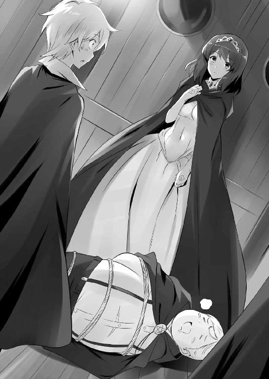
そして最後に、〝四の四〟を揃わせぬこと、才人の身柄を押さえることが、教皇の計画を止める手立てになるかもしれない......、という考えを話した。
「つまり、陛下は、ぼくたちにサイトの救出に向かえと仰るのですね」
ギーシュが言った。
「はい、その通りです。どうか、力をお貸しください。いま、この地でわたくしが頼れるのは、あなたたち近衛だけなのです」
水精霊騎士隊の面々は、顔を見合わせた。
先ほどまで、才人を助けに行くのだと威勢のよかった者たちも、いざエルフの監獄へ乗り込むとなると、やはり足がすくむ。ティファニアのおかげで、大分慣れてはきたものの、〝エルフ〟という言葉は、いまだぬぐいきれぬ恐怖の象徴なのだった。
沈黙が食堂を支配した。
ややあって......。
「畏れながら、女王陛下」
と、ギーシュが真面目くさった調子で、口を開いた。
仲間たちは、お調子者の彼がなにを言い出すのかと、ヒヤヒヤしながら注目した。
「ぼくたちは、トリステインの貴族です。陛下のご下命とあらば、命もかけましょう。ですが、その......、不躾ながら、陛下にご請願したいことがあるのです」
「なんでしょう。なんなりと、申してください」
「サイトの救出に向かうのは、志願者だけにしていただきたいのです。そして、ご下命に従わなかった隊士たちを、罰することのないように、お願いしたいのです」
ギーシュのその言葉に、少年たちははっとした。およそ、先ほどまで土下座をしていたとは思えぬほど、堂々とした態度であった。
「それはもちろん、わたくしの名に誓って、約束しましょう」
アンリエッタは言った。
「これは、トリステイン女王としての命令ではなく、わたくし、アンリエッタ・ド・トリステイン個人のお願いなのですから」
「請願、お聞き届けいただき、ありがたく存じます」
ギーシュはさっと一礼すると、薔薇の造花の杖を抜き、真上に掲げた。
「水精霊騎士隊隊長、ギーシュ・ド・グラモン。謹んで、任務を拝しましょう」
王家への忠誠を示す、見事な貴族の礼であった。
仲間の少年たちが、つぎつぎと杖を抜き、同じように真上に掲げた。
「ま、隊長殿一人で行かせるわけには、いかないよな」
「うん、そうだな」
「参ったね、だって隊長殿が、一番怖がってるんだもんな」
誰かが言うと、少年たちの間に笑いが起こった。
杖を掲げたギーシュの膝が、ガタガタと小刻みに震えていたのだ。
「これは武者震いだぜ、きみたち」
ギーシュは強がった。
「そうだな、武者震いだ」
ギムリの膝も震えていた。
「サイトは、これまで何度も祖国を救ってくれた。あのとき、サイトが七万の軍隊を止めてくれなかったら、ぼくたちも、とっくに死んでたかもしれない」
レイナールが言った。
「ああ、間違いないな」
マリコルヌが頷いた。
「〝聖戦〟で死ぬのはごめんだが、友を救うためなら、しかたない」
全員が杖を掲げた。拒む者は、誰もいなかった。
少年たちは、杖を合わせ、〝トリステイン万歳〟を唱和する。
アンリエッタは涙をこらえ、この勇敢な少年たちに、深く頭を下げた。
「ところで、その〝監獄島〟には、どのように向かえば？」
と、ギーシュが言った。
「小型で足の速いフネを一隻用意いたします。それで向かってください」
アンリエッタが答えると、
「それは、あまりお勧めできませんな」
「先生！」
ギーシュが声をあげた。食堂の入り口に現れたのは、コルベールとキュルケ、それにシルフィードであった。ギーシュたちに愛想をつかしたシルフィードは、コルベールを連れてきたのである。
「失礼ながら、話はそこで聞かせていただきました。トリステイン軍のフネを動かせば、ロマリア側に動きを察知されてしまいますぞ」
「コルベール殿、では、どうすれば......」
「なに、心配はありません。この『オストラント』号の速度なら、たとえ動きを察知されても、追撃をかわすことができるでしょうな」
コルベールは、少し自慢げに言った。
「おお、では......」
「わたしとミス・ツェルプストーも同行しましょう。なに、学院の教師には、生徒を引率する義務がありますからな」
「あんたたちに任せといたら、バカみたいに突っ込んでいきそうなんだもの」
キュルケが、水精霊騎士隊の少年たちを見回して、肩をすくめた。
「かたじけありません」
アンリエッタは、コルベールたちにも頭を下げると、毅然とした態度で言った。
「深く、静かにことをすすめてください。どうかご武運を」
第七章 揺れる心
ロマリア艦隊の旗艦『聖マルコー』号の中に用意された貴賓室で、ティファニアは深く落ち込んでいた。負傷中のファーティマを見舞うため、ロマリアのフネに戻ったところ、聖堂騎士たちに取り囲まれて、なかば無理矢理ここへ連れてこられたのであった。
もっとも、ティファニアが『オストラント』号に残っていたとしても、ファーティマを人質に取られたような状態では、いずれ従うよりほかはなかっただろう。
ティファニアにあてがわれた部屋は、家具も調度品も揃った、立派な部屋だった。だが、魔法を使えぬよう杖は取り上げられ、許可がなければ外に出ることもできない、実質的な軟禁状態であった。
〝どうなっちゃうのかな、これから〟
ベッドに座るティファニアは、右手に嵌めた母の形見の指輪を見つめた。指輪には以前、水の精霊石が嵌まっていたが、いまは台座しかない。その精霊石は、死にかけた才人の傷を癒すのに使ってしまったのだった。
言いようもない不安が、胸のうちにわだかまっていた。
才人の世界と戦争になるかもしれない......、そして、〝虚無の担い手〟である自分は、その手助けをすることになるかもしれないのだ。
〝わたし、そんな恐ろしいことを......〟
ティファニアは、ぎゅっと両手を握りしめた。
〝四の四〟を共鳴させて唱える〝始祖の虚無〟。ルイズがそれを唱えれば、才人の世界の人々が大勢死ぬことになるだろう。でも、そうしなければ、こんどは〝風石〟の暴走で、多くのハルケギニアの人々が犠牲になる。教皇の言うように、残ったわずかな土地をめぐり、人間もエルフも巻き込んだ、血で血を洗う戦争が始まるだろう。
そうなったとき、真っ先に犠牲になるのは、ティファニアが面倒を見てきた孤児たちのような、力の弱い人々だ......。
〝サイト、わたし......、どうすればいいの？〟
目をつむり、ティファニアは、祈るように呟いた。
その名前を口にするだけで、胸が締めつけられるように苦しくなる。
いつだって、自分の命を危険にさらしてまで、わたしのことを助けてくれた人。どこにも居場所がなくて、いっそ死んだほうがいいと思ったときも、俺が居場所になると言ってくれた人......。
もう、諦めたつもりだった。生まれてはじめて好きになった人。でも、絶対に好きになっちゃいけない人。だって、才人には愛する恋人がいる。その恋人は、ティファニアの大切な親友で、二人は誰も入り込めない、とても強い絆で結ばれている......。
恋をして、はじめて母の気持ちが理解できた。
母だって、わかっていたはずだ。エルフが人間と恋に落ちることが、どれほど罪深いことか......、それでも、母は人間を愛してしまったのだ。
才人に会いたい。でも、才人はいま、ロマリア軍に捕らえられ、遠い場所にあるエルフの監獄に囚われてしまった......。
「サイト......」
窓の外を見つめ、不安そうに呟いたそのとき......、扉を叩く音がした。
「......誰？」
「わたしよ、テファ」
「ルイズ？」
ティファニアはすぐに立ち上がり、扉のほうへ向かった。
開けると、沈んだ顔のルイズが立っていた。
「ああ、ルイズ......、心配してたのよ」
「わたしは大丈夫。テファのほうこそ、乱暴にされなかった？」
「ええ」
ティファニアとルイズは肩を抱きしめ合った。
「ルイズ、わたしたち、これからどうなっちゃうのかしら？ みんなのところへは帰してくれないし、それに、サイトも捕まったって......」
ティファニアがそう言うと、
「......心配ないわ」
ルイズは小さく首を振り、はっきりとした口調で言った。
「すぐに、全部終わるもの」
「え？」
ティファニアは、ルイズの口にした言葉に妙な違和感をおぼえた。
......終わる？ いったい、なにが終わるというのだろう？
そう訝しんでいると......、ルイズは、なにか決心したような表情で、口を開いた。
「あのね、テファ......、わたし、テファにお願いがあってきたの」
「......お願い？」
「ええ」
と、ルイズは頷いた。
「もう一度、テファの魔法で、わたしの中から、サイトの記憶を消して欲しいの」
「......なんですって？」
ティファニアは啞然とした。
「ルイズ、どういうこと？ どうして、そんなことを言うの！」
ティファニアは、めずらしく激しい感情をあらわにして、ルイズの肩を摑んだ。信じられなかった。ルイズがそんなことを言うなんて......。
「......いいのよ」
「え？」
「サイトのこと全部、忘れてしまいたいの。だって......、だって、わたし、もう二度とサイトに合わせる顔がないわ、だから......」
ルイズは、瞳いっぱいに涙を浮かべ、声を震わせた。
「ルイズ、お願いだから落ち着いて、一体どういうことなの？」
ティファニアは以前にも、ルイズに頼まれ、やむなく才人に関する記憶を消したことがあった。あのときは、才人と離別した悲しみから逃れるためだった。でも、才人の記憶を失ったルイズは、まるで別人のようになってしまったのだ......。
それなのに、また記憶を消してと言ってくるだなんて......。
きっと、なにかよほど悲しいことがあったのだろう、とティファニアは思った。
〝そうでなくちゃ、ルイズがこんなこと、言うはずないもの......〟
ルイズは、瞳にたまった涙を拭き、告げた。
「決めたのよ。わたし、このハルケギニアを救うために、〝聖女〟になるわ」
ティファニアの顔が、蒼白になった。
「ルイズ、それは......、サイトの世界を、滅ぼすということ？」
「ええ、みんなを......、この世界を救うには、それしかないわ」
ルイズは頷いた。悲壮な決意のこもった声だった。
「......そんな！」
ティファニアは絶句した。同時に、ルイズが本気だということも理解した。さんざん悩み、苦しみ抜いた末に、その答えを出したのだろう......、ということも。
「ルイズ、本当にそれでいいの？ そんなことをしたら、サイトは......」
たとえ愛し合っているとしても......、いや、愛し合っているからこそ、自分の故郷を滅ぼした恋人を、決して許すことはできないだろう。
「そうね。わたしは、もう二度と、笑顔でサイトと会うことはできないわ。でも、そんなことには耐えられそうにない。いまだって、ずっと、決意が揺らぎそうになっているの......、だから消して欲しいの、サイトの記憶を。この世界を救うために......」
「ルイズ......」
ティファニアは、ルイズの悲痛な決意に胸を打たれた。才人と、二度と会うことができなくとも......、それでも、ハルケギニアを救うというの？
「だめ、そんなのだめよ、ルイズ！ それじゃ、あなたが救われないじゃない！」
ティファニアは必死に首を振った。
「優しいのね、テファ。でも、わたしはいいの、もう......」
「ルイズ、お願い、考えなおして！ なにか、なにかべつの方法があるはずよ！」
「ないわ。ないのよ......。わたし、一生懸命考えたわ、でも、なにも犠牲にせずに一番大切なものを救う方法なんて、なかったの！」
溢れだした涙が、ルイズの顎をつたってこぼれ落ちた。
ティファニアは途方に暮れてしまった。
ルイズはもう、心を決めてしまったらしい。きっと、自分がなにを言っても、彼女の心を変えることはできないだろう......。
悩んだすえに......、ティファニアはゆっくりと、顔を上げた。
「ごめんなさい、ルイズ。あなたのお願いを聞くことはできないわ」
毅然として、首を横に振る。
「どうして......」
「わたしはもう、ルイズがルイズでなくなってしまうような、あんな悲しい思いは二度としたくないの。それに......」
と、ティファニアはルイズの肩を優しく抱いた。
「〝虚無〟の魔法でも、あなたのサイトへの想いを消すことはできなかったじゃない」
ティファニアのその言葉に、ルイズはハッとしたように、目を見開く。
「そう......、そう、ね......」
と、ルイズは唇を嚙みしめた。
「無理言って、ごめんね、テファ」
ルイズはごしごしと涙を拭くと、頭を下げ、足早に立ち去る。
「ルイズ、待って......」
ティファニアがその背中を追おうとすると、
「これより先は、どうかご遠慮ください」
通路に立つ衛士に止められた。
ティファニアは、遠ざかるルイズの背中を、ただ見つめることしかできなかった。
ルイズが去ったそのあと......、ティファニアはしばらく、呆然としていた。
いろいろなことが脳裏をよぎり、頭が混乱していた。
まさか、ルイズが、才人の故郷を滅ぼそうとしてるなんて......。
たしかに、危機に瀕したハルケギニアを救う方法は、それしかないのかもしれない。
でも、ルイズはもともと、ハルケギニアのためにエルフの土地を奪うことにも、反対していたはずだった。
ルイズは一体、どうしてしまったんだろう......？
まさか、なにか魔法か薬のようなものを使われて、ロマリアに都合のいいように洗脳されてしまったんだろうか？
でも、さっきの様子を見るかぎり、そうは思えなかった。もし洗脳されているんだとすれば、ティファニアに〝サイトの記憶を消して〟なんて言うはずがない。
〝ルイズ、とても苦しんでいたわ......〟
ルイズの悲愴な表情を思い出して、ティファニアは胸が苦しくなった。
静かに目をつむり、ティファニアは考える。
わたし、ルイズのためになにができるだろう......。
こんなとき、才人なら、どうするだろう......。
そう、才人なら......、もしかすると、ルイズを説得できるかもしれない。いや、いまのルイズを説得できるのは、才人しかいないはずだ。
でも......、才人はいま、遠いエルフの監獄に囚われてしまった。
きっと、教皇は、二人を引き離しておきたかったんだろう......。
〝いまはサイトに頼ることはできないわ......〟
ティファニアの長い耳が、消沈したようにぺたりと垂れた。
「ミス・ウエストウッド、新しいシーツとお召し物をお持ちしました」
扉の外で女官の声が聞こえ、ティファニアの思考は断ち切られた。
開けると、ベッドのシーツを抱えた年配の女官が、部屋に入ってくる。
「ありがとう。大丈夫よ、そんなに気をつかわなくても」
「そうはいきません、あなた様は教皇聖下の大事な賓客なので」
女官はティファニアに顔を近づけた。
「......？」
ティファニアが怪訝そうに眉をひそめると、
「わたしだよ、ティファニア」
女官の顔がつるんと溶けるように消え、その下から別の顔が現れた。
「マチルダ姉さん？」
ティファニアは驚きの声をあげた。女官に変装していたのは、彼女が姉のように慕っているマチルダだったのだ。
「どうして、ここに？」
ティファニアは目を丸くして尋ねた。
「あら、ご挨拶だね。あんたがロマリアのフネに閉じ込められてるって聞いて、心配して様子を見にきてやったんじゃないのさ」
と、マチルダ......〝土くれ〟のフーケは、肩をすくめて言った。
「ああ、マチルダ姉さん......」
ティファニアはフーケを抱きしめ、思わず、涙ぐんだ。
これまで、ずっと気を張った状態だったので、心から頼ることのできる彼女に会ったことで、緊張の糸が一気に緩んだのだった。
そんなティファニアの頭を優しく撫でながら、フーケは言った。
「いますぐ、あんたをここから連れ出してやりたいんだけど、なにせ海の上だからね。おまけに周囲をロマリアの艦隊が囲んでる......、さすがのわたしでも、ちょっと準備が必要なのさ。もう少し辛抱しておくれよ」
「ええ、わたしは大丈夫......」
言いかけて......、ティファニアの脳裏に、ふと閃くものがあった。
......連れ出す？
「どうしたんだい？」
「あの、マチルダ姉さん......、お願いがあるの」
フーケは怪訝そうに眉をひそめた。
「なんだい？ あんたが、お願いをするなんて、ずいぶん珍しいじゃないか」
用意された部屋に戻ったルイズは、そのままベッドに倒れ込んだ。
枕に顔をうずめて、ぎゅっと抱きしめる。
羞恥と自分の愚かさに、顔が熱くなった。
テファの言うとおりだわ。虚無の魔法を使ったって、わたしが才人のことを、忘れられるはずなんてないのに......。
結局、逃げようとしていただけなのだ。才人の世界を滅ぼすこと......、その罪悪感を少しでも軽くするために、彼女の魔法に頼ろうとしたのだ。
卑怯者ね、わたし......、とルイズは心の中で自嘲した。
〝わたしは、この罪を一生、背負うべきなんだわ......〟
ルイズは指に嵌まった〝水のルビー〟を見つめた。
これから自分がすることを思うと、絶望に胸が張り裂けそうだった。
〝サイト、わたし、どうすればいいの......？〟
本当は、いますぐにでも、愛する恋人の胸に飛び込みたかった。
全部、なにもかも打ち明けて、才人にすべてをゆだねてしまいたかった。
でも、それはできない。もしルイズが真実を打ち明ければ、才人は真っ先に、自分を犠牲にする道を選ぶだろうから......。
「どうして......、どうして、わたしなの？」
ルイズは、枕に突っ伏したまま嗚咽した。
どうして〝虚無の担い手〟なんかに選ばれてしまったんだろう......？
伝説の力なんて、いらなかった。ふつうの四系統に目覚めたかった。母さまと同じ風の系統か、父さまの水の系統......、ううん、いっそ魔法なんて使えなくたってよかった。どんなに馬鹿にされたっていいわ、わたし、〝ゼロ〟のルイズのままでよかった......。
〝始祖よ、あなたはどうして、わたくしにこんな力をお授けになったのですか？〟
枕を抱きしめたまま、嗚咽していると......、部屋の扉の開く音が聞こえた。
「ミス・ヴァリエール、お着替えをお持ちしました」
勝手に扉を開け、入ってきたのはシエスタであった。
なんと、シエスタは荷物を抱えて、小さなボートに乗り、ロマリアの船団までやってきたのだった。そして、自分はミス・ヴァリエールのメイドであると言い張り、ロマリア兵と押し問答していたところを、通りかかったルイズに発見され、しかたなしに保護したしだいであった。シエスタのときおり見せる謎の行動力に、ルイズは呆れながらも、押し切られてしまった......。
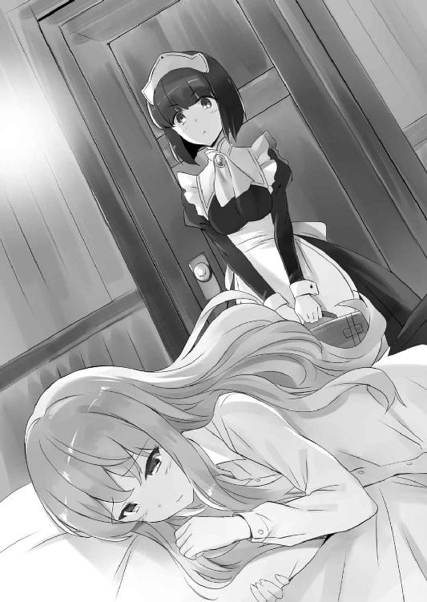
「ちょ、ちょっと、あんた、なに勝手に入ってきてるのよ」
ルイズはベッドから起き上がって文句を言うが、シエスタは遠慮なく入ってきて、ルイズに寝間着を押しつけた。
「ひどいお顔ですね、ミス・ヴァリエール。愛らしいお顔が台無しですわ」
「う、うるさいわね」
ルイズは目をごしごしとこすった。
「あんた、いつまでここにいるつもりなの？ いい加減、コルベール先生たちのところに戻りなさいよね」
「いやです。わたし、ミス・ヴァリエールのおそばにいます」
シエスタはきっぱりと言った。
「戻りなさいってば」
「い・や・で・す！」
「もう、なんでよ！」
こうなると、シエスタはてこでも動かない。そのことを知っているルイズは、はあ、と諦めのため息をついた。
シエスタはにこっと笑うと、ルイズに寄り添うように、ベッドに腰を下ろした。
「ミス・ヴァリエール、どうして泣いてらしたんですか？」
「な、泣いてないわよ、べつに......」
「それ、無理がありますって。ほら、サイトさんにも笑われますよ」
シエスタが取り出したナプキンで、ルイズの顔を拭こうとすると、突然、ルイズの目から涙がこぼれた。
「う、うううう......」
「わ、ど、どうしたんですか、ミス・ヴァリエール！」
シエスタはおろおろとあわてた。
才人の名前を聞いた途端、抑えていたものが、また溢れてしまったのだ。
ルイズは、しゃくりあげるように泣きだした。
「う......、うう......うううう......」
「な、泣かないでください、ほら」
シエスタは、ルイズの背中を優しくさすった。だが、ルイズが泣きやむ様子はない。それどころか、ますます泣きはじめてしまうのだった。
シエスタは途方に暮れた。
「ど、どうしましょう......、ミス・ヴァリエールが泣いていると、なんだか、わたしまで悲しくなっちゃうじゃないですか」
なぜか、シエスタまで泣きはじめてしまった。
疲れて声がでなくなるまで、二人は泣き続けた。
ルイズが、ようやく泣きやんだあと......。
シエスタは何も聞かずに、「また来ますね」と言って部屋を出て行った。ルイズが自分から話すのを待ってくれたのだろう。その気遣いはありがたかった。
でも、誰にも話すつもりはなかった。
シエスタにも、ティファニアにも、アンリエッタにも......。
〝この苦しみは、わたし一人が背負うべきものなんだわ......〟
ルイズはのろのろと起き上がると、マントの懐から始祖の祈禱書を取り出した。
それから、震える手で、ページを開く。
指に嵌めた〝水のルビー〟が反応し、あるページがぼんやりと光った。
それは、教皇の手によって、新たに読めるようになったページだった。
何度も、何度も、確認するように読み返した、そのページ......。
記すことさえはばかられる......、最後の使い魔〝リーヴスラシル〟。定めし運命ゆえに、その命を以て『最後の虚無』を完成させん。定めし運命を断ちたくば、使徒よ、異教に奪われし『聖地』を取り戻すべく努力せよ。志半ばで倒れし我とその同胞のため、神の敵対者たる〝ヴァリヤーグ〟を討ち滅ぼせ。さすれば『虚無』の力は失われ、使い魔はその運命より解き放たれん......。
そう、このままでは〝リーヴスラシル〟の力が、才人の命を奪ってしまう。
ルイズが〝虚無〟を唱えなかったとしても、才人は死んでしまうのだ。
だが、始祖の悲願である、〝聖地〟の奪還を果たせば......、〝虚無〟はその力を失い、使い魔のルーンも消滅する。
〝聖地〟の奪還。それこそが、才人を死から救う、唯一の方法なのだった。
ハルケギニアを救うためなんて、噓だった。
本当は、才人の命を救うために、〝虚無〟を放つのだ。
これが、教皇が余裕を見せていた理由だった。
教皇は、このことを知っていたのだ。
ルイズが才人を見殺しにできるはずなどないことを。
そして、才人の命を救うため、〝聖地〟の奪還に協力することを......。
第八章 救出作戦
才人が〝監獄島〟に移送された、その翌日。
ラドの月の第三の週、第三曜日。ゲルマニア皇帝アルブレヒト三世の率いる〝聖地回復連合軍〟の地上軍本隊は、ロマリア艦隊と合流したのち、エルフの国の首都である〝アディール〟郊外に広がる砂漠に野営地を展開した。
総勢三十万を超える大軍である。これは、かつてエルフの国に遠征した〝聖地回復連合軍〟の中では、最も規模の大きいものだった。
だが、ここにきて、ロマリア以外の兵たちの士気は低下していた。仇敵であるエルフとの和睦、さらには、宗教庁を通じて発布された新たな教皇の勅が、兵や諸侯を大いに戸惑わせていたのであった。
始祖より賜りし〝虚無〟の力により、この世界の外にある真の〝聖地〟を奪還する......、突然、そんなことを言われたところで、ハルケギニアの人間には、ほとんど理解することができない。自分たちの戦う敵とは、果たして何者なのか......、それがはっきりしないため、不安と戸惑いが全軍に広がっているのだった。
さて、その地上軍三十万の全権を預かる男、アルブレヒト三世の天幕に、一人の若者が入ってきた。左右で色の違う月目の美少年。ジュリオである。
「ジュリオ・チェザーレです。教皇聖下の代理で参りました」
天幕に入るなり、ジュリオは優雅な礼をした。
「ふん、くわせものの神官め。ここは暑くてかなわぬわ」
アルブレヒト三世は、不機嫌そうにジュリオを睨んだ。
「エルフどもの首都を目前にして、兵たちは浮き足立っておる。このままでは、いずれ抑えきれなくなるぞ」
和平が締結されたとはいえ、ハルケギニアの人間の、エルフへの憎悪と恐怖は根深い。和平そのものに反対する諸侯も、いまだに多かった。とくに、新教徒が多く、宗教庁への恭順意識が低い、新興国家のゲルマニアではなおさらである。
「エルフどもと手を組むのは、まあ、いいだろう。しかし、〝異世界〟への侵攻などという荒唐無稽な話は、どうにも信じられん。諸侯の中には、信仰心の篤い教皇聖下の妄言という者もおるぞ」
全ブリミル教徒を束ねる長たる教皇に対して、あまりに不敬な発言であった。場合によっては、王族でさえ裁かれかねない。しかし、そこはゲルマニア皇帝、さすがに胆が据わっていた。
「信じられぬのも無理はありません。ですが、聖下の仰ることは事実です」
「そう願いたいものだな。なに、いかに荒唐無稽な話でも、実際にぶんどる領地があるというのであれば、話は別だ。エルフに勝利を収めたところで、手に入れるのは開拓しようのない砂漠と、始祖ブリミルの使命を果たしたという、役にも立たぬ名誉のみ。そんなものは、兵たちにとって、なんの腹の足しにもならん」
「たしかに、閣下の仰る通りです」
あまりにあけすけな物言いに、ジュリオは苦笑した。
「ですが、ご安心ください。我々の征服する約束の地は、ハルケギニアよりもはるかに広大で、豊かな土地です。その土地をご覧になれば、皇帝閣下も、ゲルマニアの諸侯も、ご満足なされることでしょう」
「〝聖エイジスの書〟にある、〝乳と蜜の流れる地〟というわけか。たしかに、こんな砂漠よりはマシかもしれんな。しかし......」
と、アルブレヒト三世は言った。
「その〝聖地〟は、海の底にあるのだろう？ 三十万もの大軍を、一体どのような方法でそこへ送り込むつもりなのだ？」
「聖下には、お考えがあります。いましばらく、お待ちいただければと」
「ふん、その聖下はいま、どこにおられるのだ？」
「聖下は〝ゲート〟を開く精神力を溜めるために、不断の祈禱をしておられます。ですが、明朝には、すべての準備が整うでしょう」
「結構。では、そのつもりで諸侯を説得しよう」
アルブレヒト三世は椅子から立ち上がると、天幕の外に出た。
「大陸が隆起し、虚無の系統が蘇り、そして、我々は始祖の故郷に帰還する......、信じがたいことだ。まことに、我々は伝説の時代に生きているのだな」
地平線の端に日が沈み、空に双つの月がかかる頃......。
アンリエッタの嘆願を受けて結成された〝サイト救出部隊〟は、『オストラント』号の中で、ひっそりと準備を進めていた。
「首尾はどうかね、ミス・ツェルプストー」
フネの機関室から出てきたコルベールが、煤だらけの顔で言った。
「大丈夫、まだ感づかれていないわ。ロマリアの連中、まさか、エルフの監獄に乗り込もうとしてるだなんて、考えもしないんでしょうね」
「うむ、それはそうだろうね」
「ねえ、ジャン、頭が煤だらけよ」
キュルケは苦笑すると、コルベールの額にふっと息を吹きかける。
と、甲板のほうで、ものすごい怒鳴り声が聞こえてきた。
「ちょっと、邪魔よ子豚！ さっさと、どきなさい！ このっ、豚っ！」
「ああ、お姉さまっ、そんな風にされたら、ぼくはもう、もう！」
「いちどっ、死んどきなさいっ、豚はっ！」
「ああっ、すみません、豚、生まれてきてすみません！」
ルイズの姉のエレオノールである。彼女は、嬉しそうな悲鳴をあげるマリコルヌを舷側に蹴り転がすと、鬼気迫るような表情でこちらへ歩いてくる。
殺気だったその様子に、百戦錬磨の部隊長であるコルベールも思わず、息を吞んだ。
「あー、ミ、ミス・エレオノール......」
コルベールはおそるおそる、声をかけた。
「なによ？」
「その、本当によろしいのですか？」
コルベールの質問に、エレオノールはふんと視線を逸らし、
「わたしもトリステインの貴族だもの、女王陛下に頼まれてはね。それに、妹を好きに使われるのが、気に入らないわ。このまま戦争の道具にされたんじゃ、お父様たちにも、申しわけが立たないもの」
なんだかんだで、エレオノールはルイズの身を案じているのであった。
その後、水精霊騎士隊をはじめとする、〝サイト救出部隊〟の面々は、『オストラント』号の食堂に集まった。作戦会議のためである。
指揮を執るのは当然、コルベールであった。
「作戦といっても、エルフ相手では小細工は効かぬでしょう」
禿げ上がった頭をつるりと撫でて、コルベールは言った。
「じゃあ、また無謀な賭けに出るわけね」
エレオノールがこめかみを押さえ、ため息をつく。
「ええ、一度成功した、あの作戦で行くほかありません」
「あの作戦、かあ......」
ギーシュは天を仰いだ。あの作戦といえば、ひとつしかない。コルベールは、エルフの塔に突入したときと、同じ作戦を使うというのである。
「そうは言うけど、現状、これしか有効な手立てはないでしょ」
「まあね」
キュルケに言われ、ギーシュは諦めたように肩をすくめた。
「突入後は、陽動部隊と捜索部隊に別れて行動する。陽動はわたしが務めよう。捜索部隊は、サイトくんとミス・タバサの発見を最優先に。エルフと出会っても、絶対に交戦はしないように。わかったかね？」
「先生だけで、大丈夫なんですか？」
「ああ。君たちは、なるべく早く、二人を発見してくれ。そうすれば、わたしも生き延びる目が出てくるかもしれないからね」
コルベールは、いつになく厳しい口調で言った。
そんなコルベールの静かな覚悟に、ギーシュたちは居ずまいをただす。
「陽動なら、手伝ってやってもいいよ」
そのとき、よく通る女の声が食堂に響いた。
全員がハッと杖に手を伸ばし、入り口のほうを見た。
「あんたは......」
キュルケがぽかんと口を開けた。
そこにいたのは、なんと、あの〝土くれ〟のフーケだったのだ。
コルベールはうむ、と唸った。一体、いつからそこにいたのだろう。生徒たちのほうに注意を向けていたとはいえ、コルベールにさえ気配をさとらせぬとは、恐るべき盗賊の業であった。もっとも、コルベールは昔、学院長の秘書に変装したフーケに、一杯くわされたことがあるのだが......。
キュルケは杖を向けたまま、鋭く言った。
「なにしにきたの、盗賊さん」
「そんなに警戒するんじゃないよ。ロマリアに雇われちゃいないさ」
フーケはニヤリと笑った。
「ちょいと、あんたたちを手伝ってやろうかと思ってね」
「手伝う？ あなたが？」
「そうさ。ま、言葉じゃ信用ならないだろうから、手土産を持ってきてやったよ」
フーケは腰の袋を取り出すと、小さく呪文を唱えた。
すると、袋の口がぶわっと開き、中からドサドサと大量の武器がぶちまけられた。大きさを好きに変えられる、魔法の物入れ袋であった。
床にぶちまけられたのは、手榴弾や自動小銃、ロケット・ランチャーなど、ハルケギニアでは見たこともないような武器ばかりだった。
ロマリアが〝原潜〟と一緒に回収していた〝聖地〟の武器だ。ほとんどは錆びていたが、中には防水処理がほどこされ、使えるものもあった。
と、キュルケはその中に、見覚えのある武器を発見した。
「これ、タバサの杖じゃない！」
「おお、サイトの刀もあるじゃないかね」
ギーシュが、武器の山に埋もれたデルフリンガーを拾い上げた。
「ロマリア艦の倉庫に忍び込んで、ちょいと拝借してきてやったのさ。これで信用してくれる気になったかい？」
キュルケは、うろんな目でフーケを見つめた。
「どうして、手伝ってくれるわけ？」
「ちょっと、頼まれちまったのさ。あの坊やを連れ出してくれってね」
フーケは言った。
「サイトを助けろって？ 誰に？」
「誰でもいいじゃないか。それより、どうするのさ？ あんたらが嫌だってんなら、わたしは手伝わないよ」
一同は顔を見合わせた。たしかに、戦力は一人でも多く欲しい。だが、なにしろあのフーケである。はたして、信用していいものかどうか......。
と、しばらくして、キュルケが嘆息した。
「わかったわよ。いまだけ、信用してあげるわ」
「うむ、いまはとにかく戦力が必要だ」
と、コルベールも頷く。水精霊騎士隊の面々も、二人がそう言うならと納得した。
「さすがのわたしも、エルフの監獄に忍び込むのは初めてだけどね」
そして、真夜中......。
『オストラント』号は夜闇に紛れて飛び立ち、エルフの〝監獄島〟へと針路を向けた。
水精霊騎士隊の少年たちが交代で眠る中、部屋の片隅に立てかけられたデルフリンガーの刀身が、ぼうっと光ったことに、気づく者は誰もいなかった。
ルイズはベッドの中で夢を見ていた。昨晩から、一睡もしていなかったルイズだが、とうとう泣き疲れて、眠ってしまったのだった。
夢に出てきた場所は、才人と剣を買いに行った、トリステインのブルドンネ街で、ルイズは才人と腕を組んで歩いていた。
〝......懐かしいわ、もう一年半も前のことなのね〟
ルイズは頭のどこかで、これが夢であることを理解していた。
でも、わざと気づかないふりをした。だって、夢の中の才人は、優しくルイズを抱きしめてくれる。ルイズだけに笑顔を向けてくれる......。
「ねえ、サイト」
「なんだよ」
「わたしのこと、好き？」
頰を赤く染め、上目遣いに尋ねると、才人はルイズの髪を撫でて言った。
「好きだよ、ルイズ」
「ほ、ほんとに？」
ルイズは嬉しくなって、ぱっと顔を輝かせる。
「で、でも......」
「うん？」
「わたし、テファやシエスタみたいに、胸が大きくないわ」
すぐにまたしゅんとなる。
才人は笑った。
「な、なによ、笑うなんて......」
ルイズは唇をとがらせて、才人の胸をぽかぽかと叩く。
「大丈夫だよ。俺、ルイズの小さな胸が好きなんだ。つうかさ、ほんとのことを言うと、あんまり大きすぎる胸は、ちょっと苦手なんだよな」
「え？」
思わぬ発言に、ルイズの顔が、思わずほころんだ。
「ほ、本当？ ほんとの、ほんとに？」
「本当だよ」
「でも、小さいにも限度があるわ。わ、わたしの胸なんて、ほ、ほんとに、レモンちゃんだし、シエスタなんて、洗濯板って言ったのよ......」
「ああ、俺、お前のちっちゃいレモンちゃんが好きなんだ。すべすべで可愛くて、メロンちゃんより、断然、レモンちゃん派だ」
「そ、そう？」
ルイズは一瞬喜ぶが、また不安になって、言った。
「じゃあ、あの子は......、タバサはどうなの？ わたしより、ちっちゃいわ」
テファがメロンちゃんで、わたしがレモンちゃんなら......、タバサはさしずめ、オリーブちゃんってとこね、とルイズは独りごちる。
「タバサは大切な友人だよ。でも、まだまだお子様じゃないか。お子様はちょっと、ね」
肩をすくめる才人。ルイズはなおも続けた。
「わ、わたし、姫様みたいな色香がないわ。わたし、知ってるもん、男の子って、ああいうのがいいんでしょ？」
「姫様はたしかに綺麗だね。でも、俺、ぐいぐいくるタイプは苦手なんだよな。ルイズみたく、清楚な子のほうが好きだな」
「わたし、ほかの女の子に嫉妬するわ。ほかの女の子と仲よくしちゃ、イヤなのよ」
「わかってる。ルイズ、いまはもう、お前だけを見てるよ」
首筋にキスをされ、ルイズは天にものぼる心地になった。
「どうして......、どうして、サイトはそんなに優しいの？」
「決まってるだろ。お前のことが、好きだからだよ」
「う、噓......」
ルイズの顔は真っ赤になった。
「噓じゃねえよ」
「だって、わたし、胸はぺったんだし、嫉妬するし、あ、あんたのこと鞭で叩いたり、犬扱いしたり、さんざんひどいことしたわ。なのに、す、すす、すきなの？」
「ああ。俺、そんなルイズの全部が好きだ」
才人は、ルイズをぎゅっと抱きしめた。
それだけでもう、ルイズははわわわとなってしまう。
な、なんなの、こいつ......、ほんともう、なんなのよ......。
でも、嬉しい。胸に頰をうずめると、ものすごく幸せを感じてしまう......。
「ルイズ、お前は......、俺のこと、好き？」
才人は耳もとで囁いた。
ルイズはハッとしたあと......、勇気を振りしぼって、言った。
「うん、好き。好きよ、サイト......、大好き」
ずっと、言おうと思って......、言えなかった、大切な言葉。
夢の中でなら、こんなにもいっぱい言える......。
でも、もう二度と、その台詞を口にすることはできない。
自分に、そんな資格はないのだから......。
その事実に気づいた途端、ルイズの意識は、これが夢であることをごまかせなくなった。
抱きしめたルイズの腕の中で、才人は砂糖菓子のように儚く溶けてしまう。
「サイト......、嫌よ、サイト......、いなくならないで！」
足もとの地面がガラガラと崩れ、ルイズの身体は真っ暗な穴に吞み込まれる。
ルイズは、さらに深い夢の中へと落ちていった......。
第九章 虚無の神話
ルイズが夢を見ていたのと、ちょうど同じ頃......。
〝監獄島〟に囚われた才人も、微睡みの中で夢を見ていた。
〝......ここは？〟
真っ赤な夕日の落ちる、どこまでも広がる砂漠の地平線。
そこは以前、才人が夢の中で見たのと同じ場所。
六千年前の砂漠だった。
才人はすぐにピンときた。三度目ともなれば、さすがに理解も早い。
〝俺、またルーンの記憶を見てるのか〟
才人はゆっくりと起き上がった。
〝あれから、どうなっちまったんだろう......〟
前に見た夢の中で、始祖ブリミルは、エルフの都に〝虚無〟を放とうとしていた。
そのとき、才人の胸に刻まれた〝リーヴスラシル〟のルーンが反応し、才人はそこで意識を失ってしまったのだった。
〝エルフの都があったのは、たしか......〟
と、あたりを見回して......、才人は絶句した。
すでに、なにもかもが終わったあとだった。
〝聖地〟のあった山脈は、まるで隕石が衝突したかのように大きくえぐれ、その麓で繁栄していたエルフの都は、跡形もなく消滅していた。できあがった超巨大なクレーターには、海水が流れ込み、入り江のようになっていた......。
「噓、だろ......？」
才人は呆然と呟き、脱力したように、膝からくずれおちた。
なくなっちまった......。あんな大きな都市が、全部、消えてしまった。
「なんだよ、これ。こんなのって、ねえよ......！」
喉の奥から熱いものがこみあげてくる。才人は嘔吐した。
広大な砂漠にぽっかりと空いた、途方もなく大きな穴。
まるで〝虚無〟そのものだ......、と才人は思った。
ここでなにが起きたのか......、混乱した才人の頭でも、すぐにわかった。
あの〝爆発〟をはるかに上回る破壊力の〝虚無〟の魔法......、〝生命〟。
始祖ブリミルは、エルフの都市に向かって、それを放ったのだ。
〝ちくしょう......、あいつ、本当にやりやがったんだ〟
これが、エルフの半数が死んだという、六千年前の〝大災厄〟の正体......。
その絶望的な光景に、才人の目から涙がこぼれる。
才人は、かつてないほどの無力感に打ちひしがれた。
怒りと、悲しみと、どうしようもない虚しさで、胸がいっぱいになった。
これは夢だって......、過去の記憶だってことはわかってる。
でも、悔しかった。
〝止められなかった......、俺、あそこにいたのに、止められなかった......〟
「使い魔の少年、まだここにいたのか」
才人の背後で、かすれた声が聞こえた。はっとして振り向くと、幽霊のように青ざめた顔をした、始祖ブリミルがそこにいた。
「ブリミルさん......」
才人は、押し殺した声で唸った。
「なんで......、なんでだよ！ こんなやり方しか、なかったのかよ！」
「............」
短い沈黙のあと、ブリミルは口を開いた。
「そうだ。我が氏族が生き残るためには、こうするほかなかった」
「そんなことあるかよ！ もっと、話し合うことだってできたはずだろ！」
才人は拳を握りしめ、殴りかからんばかりの勢いで、ブリミルに詰め寄った。
ブリミルは静かに首を振った。
「無駄だった。話し合いなんて、無意味だったんだ」
「どうして......」
才人が尋ねると、ブリミルは疲れた表情で語りだした。
「きみには以前、話したと思うが......、我が氏族とエルフが争うようになった元凶は、〝風石〟の暴走による大陸の〝大隆起〟で、住む場所がなくなることだ」
「ええ......」
才人は厳しい眼差しを向けたまま、頷いた。
「では、そもそも、その〝風石〟の暴走を引き起こしている原因はなんだ？ と、ぼくは考えた。それを突き止めれば、大陸は救われ、エルフと争う必要はなくなると」
「暴走の原因......？」
才人は、以前ジュリオの話していたことを思い出した。ハルケギニアの地下には〝風石〟の鉱脈がたくさんあって、精霊の力を溜め込みすぎた〝風石〟が、数万年に一度、地面を持ち上げるんだとか、そんな話だったと思ったが......。
それが原因だとすると、人間にはもう手の打ちようがない。ルイズの〝爆発〟のような〝虚無〟で消し飛ばそうにも、まさか、ハルケギニア中の〝風石〟を消して回るわけにもいくまい。第一、そんなに精神力がもつはずがない。
「原因は、なんだったんですか？」
尋ねると、ブリミルは才人の背後に視線を向けて、言った。
「あの砂漠に横たわる大山脈。エルフが〝大いなる意思〟と呼ぶものだ」
「......え？」
才人は思わず、そんな声をあげて、後ろを振り返った。
大きく削り取られた大山脈。
あの山脈が、大陸の〝大隆起〟の原因だって......？
才人がぽかんと口を開けていると、ブリミルは続けた。
「あの〝大いなる意思〟は、それ自体が巨大な〝精霊石〟の塊なんだ。そして、地下の鉱脈を通じて、大陸中の〝精霊石〟と繫がっている。数万年に一度、あの山脈に蓄積された精霊の力が、逃げ場を求めて大陸中に伝播し、〝風石〟を反応させてしまう......、それが世界を破滅させる〝大隆起〟の原因だったんだ」
「そんな......」
ブリミルの語った内容に、才人は頭を殴られたようなショックを受けた。
それじゃあ、六千年後の世界では海の底に沈んでる、あの〝聖地〟こそが、〝風石〟の暴走の原因だったのかよ......。
いや、でも、たしか......、ルクシャナも言ってたはずだ。
〝悪魔の門〟のあるあたりの海は、精霊の力がとても強いって。あれは、〝聖地〟が、精霊石の塊だったからなのか？
だとすると、ブリミルがエルフの都市を滅ぼした、本当の目的は......、エルフの土地を奪うことじゃなくて、その〝大いなる意思〟を消し飛ばすことだった？
〝でも、それなら、なにもエルフを滅ぼす必要はねえじゃねえか！〟
「エルフを説得して、都市を放棄してもらうことはできなかったんですか？」
才人は言った。
「ちゃんと、世界の危機だってことを話し合えば、エルフだって......」
「話し合いは何度も試みたよ」
ブリミルは首を横に振った。
「でも、頑迷なエルフの評議会は、話を聞かなかった。たとえ世界が滅亡したとしても、それは〝大いなる意思〟の思し召しだと。それに、あの大山脈の麓にあるエルフの都市は、世界で唯一、〝風石〟の暴走の影響を受けない場所だからね」
才人はうっと言葉に詰まった。たしかに、それはそうなのかもしれない。ある日、突然、自分たちの住んでた場所を去れ、と言われたら......。
才人だって、ハルケギニアが滅亡することよりも、自分の故郷を守ることを優先して考えている。もちろん、ハルケギニアがどうなってもいいってわけじゃない。でも、そのために自分の故郷が滅ぼされるのは、絶対に受け入れられない......。
「エルフとの対話は平行線のまま、時間だけが過ぎ去った。我が氏族の中でも、主戦論を唱える者が多くなり、一触即発の状態の中、それでも、ぼくは......、ぼくとサーシャは、最後まで道を探ろうとしていたよ。でも......」
と、ブリミルは、吐き出すように言った。
「ぼくが評議会との交渉におもむいた、その日。すべてが水泡に帰した」
「なにがあったんですか？」
「我が氏族の住む〝ニダベリール〟の村が、エルフに攻め滅ぼされたんだ」
才人は息を吞んだ。
ニダベリール、前にロマリアで見た夢の中で訪れたことがある。たしか、ブリミルが最初に拠点を構えた場所......。子供たちのたくさんいる、小さな村だった。
「なにが発端だったのか、どちらが先に手を出したのか、いまとなってはわからない。なんにせよ、強大な精霊の力を行使するエルフに対し、我が氏族はあまりに非力だった。村は焼かれ、逃げ遅れた子供たちも大勢殺された。あれは戦いなんてものじゃない、一方的な虐殺だった。ぼくが戻って来たときには、なにもかも手遅れだった」
ブリミルは虚ろな声で言った。
「そのとき、ぼくは決めたんだ。神より授かった、この〝虚無〟の力を、我が氏族を守るために使うことを......」
「............」
才人はなにか言おうとして......、でも、なにも言うことができなかった。
どんな理由があるにせよ、一瞬で都市を消し飛ばしちまうような魔法、そんなものは使っちゃだめだ......、でも、考えてみりゃあ、俺だって、こっちの世界で、そんな力を振るってきたんじゃないのか？
ブリミルが送り込んできた、地球の武器、〝ロケット・ランチャー〟も〝ゼロ戦〟も〝タイガー戦車〟も、このハルケギニアで使うには、強力すぎる〝武器〟だった。
俺だって、大切な人を......、たとえば、ルイズを殺されたりしたら、なにもかも捨てて、それこそ、戦争も辞さずに復讐するかもしれない。そしたら、あの〝聖地〟に眠ってた核兵器だって、使っちまうかもしれない......。
〝でも......、でも、ちくしょう......〟
才人は、砂漠にぽっかりと空いた空虚な〝穴〟を見つめた。
大勢のエルフが犠牲になったんだぞ......。
これから数千年間、ハルケギニアの人間とエルフは憎しみ合うようになるんだ。
才人は拳を震わせ、涙を流した。ただ無性に悲しかった。
「......悪魔」
と、地の底からうめくような声がした。
ぞくっとして、才人は声のしたほうを振り向く。
いつの間に現れたのだろう......。
そこに、鬼気迫るような表情でブリミルを睨む、エルフの女がいた。
ティファニアに似た薄い金髪。長い睫毛に縁取られた、透き通るような翠色の瞳。
ブリミルの〝ガンダールヴ〟、サーシャだった。
「サーシャさん......」
才人は息を吞んだ。
だが、サーシャは、才人のことなどまったく眼中にない様子だった。
憎悪のこもった視線で、ブリミルを睨み、叫んだ。
「なぜ......、なぜ、わたしの故郷を滅ぼしたの！」
サーシャは手にした剣を引きずりながら、一歩、一歩と近づいてくる。
才人はあっと声をあげた。
サーシャが手にしている剣は、才人には見覚えがあった。
〝デルフ......！〟
〝元素の兄弟〟に壊される前の姿のデルフリンガーだ。
『あいつの胸を貫いたのは、他でもねえ、この俺だからな』
デルフリンガーの言葉が頭をよぎる。
〝サーシャさん、だめだ、それは......！〟
これから、なにが起きるのかを知っている才人は、サーシャを止めようとした。
だが、なぜか声が出ない。身体も石になったように動かない。
〝お、おい、どうしてだよ、こんなときに......〟
才人は愕然とした。そのとき、ふと、ルイズの言葉を思い出した。
『......あんたの見た夢は、ルーンに刻まれた記憶で、もう起こってしまった出来事なんだから。それを変えられるわけないじゃない』
そうだった。いま俺が見てる夢は、あくまでルーンに刻まれた〝記憶〟なんだ。なにをしたところで、六千年前に起きたことを覆すことはできない......。
「呪われるがいい！ ブリミル、あなたは悪魔そのものよ。わたしの心を奪い......、そして、裏切ったのだから！」
サーシャはデルフリンガーを、ゆっくりと構えた。
彼女の胸には、才人と同じ〝リーヴスラシル〟のルーンが光っている。
〝ブリミルは、リーヴスラシルの力を使ったんだ......、あの生命を放つために〟
彼女は、もうすぐ死ぬ。
同じ使い魔である才人には、それがわかってしまった。
「サーシャ、ぼくはたしかに罪を犯した。償いきれぬほどの罪を」
サーシャの左手のルーンが激しく光る。それは最後の命の輝きのように見えた。
「ブリミルっ！」
〝やめろ！〟
才人は叫ぼうとした。でも、やはり身体は動かない......。
サーシャは、まるでスローモーションのような緩慢な動きで、ブリミルに歩み寄る。
〝......え？〟
ブリミルはなぜか、避けようとしなかった。
サーシャは、ほとんど満身創痍だった。
避けようと思えば、簡単に避けられたはずだったのに。
だが、ブリミルは、迎え入れるように大きく両手を広げ、サーシャはそのまま、ブリミルの胸にデルフリンガーを突き立てた。
「ぐっ......う......」
血に染まったデルフリンガーの刃が、ブリミルの背中から突き出した。
「......どうして！」
サーシャが、愕然として翠の目を見開いた。
ブリミルが刃を受け入れたことに、彼女自身が、一番驚いているようだった。
「ぼくは罪を犯した。使い魔であるきみを、愛してしまった」
ブリミルは、両手を背にまわし、サーシャの小柄な身体を抱きしめた。
「ぼくは愛のために、自分の氏族を裏切った。ぼくの子孫とエルフは、きっと、この先何千年も憎み合うようになるだろう。ぼくは、世界の救世主にはなれなかった」
そのとき、目の前の出来事を呆然と見ていた才人は、気づいた。
サーシャの左手に刻まれた〝ガンダールヴ〟のルーンが、消えていく......。
「ブリミル......、あなた、一体なにを......？」
「でも、これでいい。これで、きみを救うことができた」
サーシャを救うことができた？ ブリミルはなにを言ってるんだろう？
どうして、サーシャの使い魔のルーンが消えたんだ？
いや、まてよ、〝ガンダールヴ〟のルーンが消えたってことは、ひょっとして、〝リーヴスラシル〟のルーンも......。
目の前の出来事が、才人の頭の中でめまぐるしく交錯する......。
〝......考えろ、なにか意味があるはずだ。ルーンが俺にこの夢を見せた意味が〟
「......くしょう、ちくしょう......」
サーシャの腕の中で、ブリミルは子供のように嗚咽した。
「ちくしょう、なんでぼくなんだ......、神よ、なぜ、こんな力をぼくに授けた！」
「ブリミル......」
「ぼくはこんな力いらなかった......、いらなかったんだ！」
ブリミルの断末魔の叫びが、日の落ちた砂漠に響きわたった。
第十章 脱出
「ブリミルさん！」と叫んで、才人は目を覚ました。
荒く息をつき、あたりを見回す。
そこは石壁に囲まれた〝監獄島〟の牢の中だった。
才人は自分の胸もとを見下ろした。パーカーは汗でぐっしょり濡れている。どうやら、〝リーヴスラシル〟のルーンは反応していないようだ。
そのまま、しばらく呆然としていると......、膝の上に、ぽたっと水滴が落ちた。
「......？」と、才人は首を傾げた。
水滴はぽたぽたと、とめどなく落ちて、ズボンに染みを広げる。
「あれ......、俺、泣いてるのか？」
才人はごしごしと目をこすった。
それでも、涙はとまらない。ぬぐってもぬぐっても、溢れてくる。
「......あれ？ あれ？」
俺、なんで泣いてるんだろう......？
目を閉じれば、瞼に浮かぶのは、悲嘆に暮れるブリミルの顔だった。
『ただな。ぼんやりとな......、とても悲しいことがあったのだけは覚えてる』
昔、デルフリンガーの言った言葉が、ふと頭をよぎった。あまりに悲しくて、デルフが記憶を閉ざしてしまうような、そんな悲劇が、六千年前にあったって......。
〝ブリミルとサーシャ、あの二人は、愛し合ってたんだ......〟
二人は決して、憎み合ってたわけじゃなかった。
なのに、あんな最期になっちまった......。
ブリミルは、自分の一族を救おうとしただけだ。そして、サーシャは......、一族を滅ぼされた復讐をしなくちゃならなかった。
才人は、パーカーの袖で目の下をこすった。
〝そうだ、こうしてる場合じゃねえ......〟
さっき見た夢の意味を、才人は必死に考えた。
使い魔のルーンが、才人に六千年前の記憶を見せたことの意味を......。
六千年前、エルフの半数を死に至らしめた〝大災厄〟。その正体は、始祖ブリミルの放った〝虚無〟の魔法〝生命〟だった。ブリミルは、風石の暴走の原因である、巨大な〝精霊石〟の塊を消滅させるために、エルフの都ごと〝聖地〟を吹き飛ばしたのだ。
でも......、と、そこで才人の頭に疑問が浮かぶ。
〝でも、それって、おかしくねえか？〟
だって、〝聖地〟は六千年前に消し飛んだはずじゃねえか。だったら、どうしていま、また〝風石〟の暴走なんてもんが起きてるんだ......？
才人は考え込むように、首をひねった。
〝わかんねえ......、でも、きっと、なにか意味があるはずなんだ〟
どうして、消滅したはずの〝聖地〟が、また......。
いや、まてよ......、頭をかかえた才人は、ふと思い出した。
砂漠にできたクレーター痕と、大きくえぐりとられた〝聖地〟の山脈。それが、才人の頭の中で、あの奇妙な岩に囲まれた〝竜の巣〟の景色と重なった。
〝......そうだ。〝聖地〟そのものは、いまも海の底に眠ってるじゃねえか〟
もしかすると〝聖地〟は、完全に消滅していなかったのかも......。
つまり、ブリミルの放った〝生命〟は、〝聖地〟を完全に吹き飛ばすことができなかったんじゃないのか......？
だとすると、辻褄が合う。数万年に一度であるはずの〝風石〟の暴走が、なぜ、いま起きようとしているのか......。いまの〝風石〟の暴走は、始祖ブリミルが、六千年前に消しきることのできなかった、〝聖地〟の片割れが引き起こしてるんじゃないのか......？
〝そうだよ、きっとそうだ......〟
才人は確信した。ブリミルは、〝風石〟の暴走の原因を消し去ることはできなかった。
ただ、〝聖地〟の半分を吹き飛ばすことで、ハルケギニアが破滅するまでの時間を引き延ばしたんだ。
〝まてよ、だとすると......〟
才人は腕組みして、さらに考え込む......。
海の底に沈んだ〝聖地〟。
ルイズの目覚めた始祖の虚無。
「そうか......！」
才人は小声で叫んだ。
海の底に眠る、あの〝聖地〟を、ルイズの〝虚無〟でもう一度吹き飛ばせば、〝風石〟の暴走を止めて、ハルケギニアを救うことができるんじゃねえか？ そうすれば、地球と戦争して、土地を奪うなんてことは、しなくても済むじゃねえか......。
「いける......、いけるぞ、これ」
才人の胸に、にわかに希望がわいてきた。
〝早く、ルイズにこのことを伝えないと......〟
と、そこまで考えたところで......、才人はうっとなった。
この監獄の中から、どうやってルイズにそれを伝えるんだ......？
〝聖地回復連合軍〟が合流して、地球への侵攻作戦が始まっちまったら、なにもかも手遅れじゃねえか......。
そのとき、牢屋の隅で、ぱたんと本を閉じる音がした。
見ると、タバサが怪訝そうな表情で、才人を見つめていた。
「タバサ、起きてたのか」
才人はあわてて言った。
考えごとに夢中で、タバサがいることをすっかり忘れていた。
「あなた、うなされてた。夢を見ていたの？」
「うん、ちょっとな。もしかして、さっき泣いてるとこ、見られてた？」
尋ねると、タバサは少し迷うように口をつぐんでから、こくっと頷いた。
「そっか、恥ずかしいとこ見られちまったな」
「そんなことはない。誰でも、泣くことは、ある」
タバサは首を横に振った。
才人は立ち上がると、タバサの横に腰を下ろした。
「なあ、タバサ。なんとか、ここを出る方法はないかな」
「無理、いまのところは」
「う......、まあ、そうだよな」
ドラマや映画の脱獄ものなんかで見たやり方は、ここに連れて来られたその日のうちに、ひと通り試してみた。でも、そんなもので抜け出せるほど現実は......、つうか、ファンタジーは甘くない。第一、苦労してここを脱出したところで、外は周囲を海に囲まれた孤島なのだ。タバサの魔法で飛ぶにしても、すぐに精神力が尽きてしまうだろう。
ふと、才人はタバサの言葉が引っかかった。
「......いまのところは、って言った？」
タバサは頷き、眼鏡をわずかに押しあげた。
「時がくれば、脱走の機会はくる。だから、それを待つ」
「あんまり時間はないんだけどなあ......」
才人はぼやいた。〝聖地回復連合軍〟が地球侵攻を始める前に、ルイズにさっきの夢のことを伝えなくちゃいけない。それに......。
才人は、自分の胸もとを見下ろした。
〝たぶん、残された時間はそんなに多くねえ......〟
「............」
すると、タバサは無言で、マントの懐からなにかを取りだした。
小さく折りたたまれた羊皮紙だった。
「なんだそりゃ？」
「今朝の食事に入ってたもの。北花壇騎士団の暗号文」
「暗ご......」
思わず、声をあげそうになり、才人はあわてて口を押さえた。
「北花壇騎士団ってことは、イザベラが？」
声を潜めて尋ねると、タバサは無言で頷く。
「わたしが捕まったことを知って、独自に動いてくれている。暗号は、〝聖エイジスの書〟と対応させることで、解読できる」
タバサは、手にしたブリミル教の聖典に目を落とした。
「なるほどなあ......」
才人は感心した。どうりで余裕があると思ったら、そういうことか。タバサは、従姉のイザベラがすぐに動くであろうことを、あらかじめわかっていたのだ。
「脱出のタイミングは？」
「次の食事が差し入れられる、そのとき」
タバサが答えた、その瞬間であった。
ドオオオオオオオオオオオオオオオオオンッ！
耳をつんざくような轟音が、〝監獄島〟を揺るがした。
「な、なんだ？」
すさまじい衝撃が、フネの甲板を揺らした。
コルベールの『オストラント』号が、〝監獄島〟の建物めがけて特攻したのだ。
「うわああああああああ！」
ギーシュが情けない悲鳴をあげた。
「ぎあああああああああ！」
水精霊騎士隊の少年たちは、必死になって舷側に摑まり、フネの外に放り出されないように踏ん張った。
マリコルヌは舷側にぶつかって跳ね返り、ごろごろと甲板を転がった。
頑丈な石壁が崩れ、大量の土煙がたちのぼる。
衝撃が収まると、あたりに一瞬の静寂がおとずれた。
「まったく、情けないわね。あんたたち、女王陛下の近衛でしょうが！」
操舵輪を握るエレオノールが怒鳴った。
だが、そんな彼女の手も、わずかに震えていた。
〝監獄島〟の建物は背が低いため、エルフの塔に特攻したときと違い、地面すれすれを飛んで突っ込むという、とんでもなく高度な操縦をする必要があったのだ。
もっとも、さすがに、すれすれというわけにはいかず、船底で地面を削りながら突っ込むことになってしまったが。
「......一応、フネは無事みたいね」
キュルケが土煙に咳き込みながら言った。
「うむ、こんなこともあろうかと、船首を補強しておいてよかった」
フネの前甲板に立つコルベールは、自慢げに頷いた。
出発前、コルベールは『オストラント』号の尖端部分に、〝錬金〟で加工した、あの〝タイガー戦車〟の装甲を貼り付けていたのである。〝タイガー戦車〟の鋼鉄の装甲は、ハルケギニアで生み出されるどの金属よりも頑強だった。
直径二リーグほどの〝監獄島〟に、低いサイレンの音が鳴り響く。
コルベールは、崩れた石壁に向かって杖を向けると、〝ファイア・ボール〟を撃ち込み、全員が侵入するための大穴をあけた。
「さて、諸君。準備はいいかね？」
コルベールは後ろを振り向くと、真剣な表情で言った。
水精霊騎士隊の少年たちは立ち上がり、無言で杖を抜き放った。
怯え混じりの顔、やせ我慢の顔もいくつかあったが、ここにきて、泣きごとを言う者は誰一人としていなかった。彼らには貴族のプライドがあった。
「ここからは時間との勝負だ。エルフどもが混乱しているうちに、サイトくんとミス・タバサを探しださなくてはならん。作戦通り、わたしとミス・サウスゴータが、エルフどもを攪乱して時間を稼ぐ。君たちは可能な限り早く、二人を確保してくれたまえ」
「こっちも、そう長くはもちこたえられないよ。助かりたきゃ、急ぐことさね」
フーケはニヤリと笑うと、たなびく土煙の中に飛び込んだ。
「あたしたちも、行くわよ」
キュルケが言った。
才人たちを確保する部隊は、作戦通り、三つの班に分けられた。
ギーシュ、マリコルヌ、キュルケ、それにシルフィードを加えた四人の班。そして残りは、レイナールの指揮する班と、ギムリの指揮する班だ。ギーシュの班は、人数こそ少ないものの、〝トライアングル・メイジ〟のキュルケと〝韻竜〟のシルフィードがいるので、戦力的には十分だろうとコルベールは判断した。
各班のリーダーは、それぞれ、才人に渡すための〝聖地〟の武器を分け合った。デルフリンガーは、キュルケが魔法の袋に入れて持つことになった。
「お姉様......、きっと助け出すのね、きゅい！」
少女の姿に変身したシルフィードが、タバサの杖を振り上げた。
「おおい、ちょっと、待ってくれたまえ」
と、ギーシュが、ひと抱えほどもある、大きなモグラを抱きかかえてきた。
ギーシュの使い魔のジャイアント・モールであった。
「ギーシュ、そのモグラを連れていくのかい？」
マリコルヌが言った。
「ああ、ぼくのヴェルダンデは鼻がきくからね。なにかの役にたつかもしれんだろ？」
「足手まといになるんじゃない？」
キュルケが眉をひそめた。
「なんの、これでも、足は結構速いんだぜ」
ギーシュがヴェルダンデをそっと足もとにおろすと、ヴェルダンデは、モグモグモグ、と鼻をひくつかせた。
「二人を確保した班は、すぐに〝ヘビくん〟を使って合図をするように。各班は、合図と共に速やかに撤退すること。また、エルフに発見された場合は、交戦せずに逃げること。くれぐれも戦うな。逃げ切れないときは、投降したまえ」
コルベールの言葉に、水精霊騎士隊の少年たちは、しっかりと頷いた。
「幸運を祈る」
と、コルベールは最後に、そう告げた。
衝撃が収まったあと、才人はおそるおそる天井を見上げて言った。
「な、なんだったんだいまの......、ひょっとして、イザベラが？」
「......わからない」
タバサは言った。
「少なくとも、北花壇騎士団は、こんなやり方はしない」
そのときだ。金属の扉の向こうから、こちらに近づいてくる足音があった。
才人ははっと緊張した。エルフの衛士が、才人たちの様子を見にきたのだろうか。
しばらくすると......、外で鍵の開くような音がした。
「なんだ？」と、才人が首を傾げていると、牢の扉が開き、通路の光が差し込んだ。
「お待たせしました、シャルロット様」
魔法の明かりを手にしたエルフの衛士が、小声でそう言った。
「はい？」
才人はきょとんとした。
どういうこと？ と、後ろのタバサを振り返ると、
「〝地下水〟」
と、タバサは言った。
「ああ！」
才人は、ようやくぴんときた。
見れば、そのエルフの手には、見覚えのある一本の短剣が握られていた。
〝地下水〟とは、北花壇騎士団のエージェントの一人で、その正体は、握った者の精神を操ることのできる〝インテリジェンス・ナイフ〟である。才人も、はじめはただの変装の名人だと思っていたのだが、タバサにその正体を聞いたときは、驚いたものだ。
「エルフは精神支配に対抗する訓練を積んでいるので、さすがに難儀しました」
「さっきの轟音は、もしかして、お前が？」
「いえ、わたしにも状況は不明です」
才人が尋ねると、地下水は首を横に振った。
「ですが、いまが好機であることにかわりはありません。少し予定が早まりましたが、どうか、この隙に脱出を」
地下水は、タバサに指揮棒のような小さな杖を渡した。
「使い慣れぬでしょうが、いまはこれで」
「十分」
タバサは頷くと、杖をマントの懐にしまった。
「よし、行こう......」
才人が立ち上がろうとした、そのとき......、くらっと目眩がした。
よろめく才人の身体を、タバサがすぐに支えた。
「どうしたの？」
「ああ、大丈夫......、ちょっと目眩がしただけ......」
一人で立とうとしたその途端、全身の力が急速に抜けて、才人はその場に倒れ込んだ。
「あ、あれ？ 足がうまく......、動かね、え......」
「なにをしているのですか？」
地下水が怪訝そうに尋ねる。
「あの、地下水さん......、俺にも、なんか、武器ないかな？」
「武器、ですか」
「ああ、武器を握れば、動けるようになると、思うんだけど......」
「では、わたしをお使いください」
地下水は腰の短剣を抜き、才人に手渡した。エルフの衛士は、そのまま、気を失ったように倒れ込む。
才人が短剣を握ると、左手のルーンが光りだした。〝ガンダールヴ〟の力を使ったところで、失った体力そのものが戻るわけじゃない。でも、身体はだいぶ身軽になった。
ひとまず、動くことはできそうだ......。
「行こう」
鳴り響く轟音の中、才人とタバサは、牢を抜け出した。
「はあ、はあ、はあ......ま、待ちたまえ、きみたち」
サイレンの音が鳴り響く監獄の通路を、ギーシュたちは必死に駆け抜けた。コルベールの狙い通り、エルフたちは大混乱に陥っているようだ。しかし、この混乱もそう長くは続くまい。急いで才人たちを救出しなければ、完全に袋のネズミだ。
「いやはや、まさか二度もエルフの居城に乗り込むことになるとはなあ」
マリコルヌが、額に汗を浮かべて言った。
「でも、この任務を果たせば、ぼくら全員、勲章ものだぜ。いや、領地だってもらえるんじゃないか？ それに、アンリエッタ女王陛下の、キ、キスも......」
「生きて帰ってこれたら、だろ？ ぼくは嫌だよ、棺桶の中で爵位をもらうなんて」
「おちび、どこなのね！ 返事をするのね、きゅい、きゅい！」
「ちょっと、そんな大声で叫んだら、見つかっちゃうでしょ！」
先頭のキュルケが、振り返ってシルフィードに注意する。
「あなたたちも、無駄話してる場合じゃないわよ、ほら」
キュルケが杖の先で前方を指した。
シルフィードの声を聞きつけたわけでもあるまいが......、二人組のエルフの衛士たちが、エルフ語でなにか叫びながら、こちらへ向かって走ってくる。
「よし、逃げよう！」
「賛成」
ギーシュとマリコルヌは即座に回れ右をした。
「待って、魔法がくるわよ！」
エルフの衛士が魔法を唱える。先住の風魔法だ。
竜巻のように回転する空気の渦が、手のひらから撃ち出される。
「うわああああああ！」
動揺したマリコルヌが、咄嗟に〝エア・ハンマー〟の呪文を唱えた。
結果的に、それがみんなの命を救った。先住の風魔法はものすごい轟音をたて、通路の真ん中で爆発する。ギーシュたちは吹っ飛ばされ、ごろごろと床を転がった。
「な、なんて威力だ」
ギーシュが青ざめた顔で言った。
あんなもの、まともに当たったら、木っ端微塵だ......。
「ま、またくるぞ！」
マリコルヌが叫んだ。
「みんな先に逃げたまえ。ここはぼくが足止めする」
ギーシュは覚悟を決めたように、すっくと立ち上がった。
「あなたのゴーレムなんて、エルフ相手じゃ、気休めにしかならないわよ！」
「まあ見ていたまえ、ぼくだって成長してるんだよ」
ギーシュは呪文を唱え、薔薇の造花の杖を振った。
宙を舞う花びらは、たちまち八体の〝青銅の戦乙女〟に姿を変える。
「どうだね？ いつもより一体増えて......ああっ！」
青銅の戦乙女は、エルフの放った魔法で、あっというまにバラバラにされてしまった。
「なにやってるのよ、もう！」
キュルケが〝フレイム・ボール〟の魔法を放った。火の三乗。ホーミングする炎球が三発、たて続けにエルフに襲いかかる。
爆発。監獄の中に、派手な轟音が連続して響く。
「おお、やったかね？」
「だめよ。あたしたちの魔法と〝先住〟じゃ、力に差がありすぎる」
〝炎球〟が命中する直前、石の壁が出現したのを、キュルケは見逃さなかった。
燃えさかる炎の向こうから、エルフたちの罵りの声が聞こえてくる。
「シルフィード、きみはなにか使えないのかね？」
ギーシュが焦った声で尋ねると、シルフィードはすまなそうに首を振った。
「だめなのね、エルフに精霊の力を抑えられちゃってるのね。精霊の力がないと、シルフィもたいしたことはできないのね」
「なんてこった......」
ギーシュは頭を抱えた。〝韻竜〟の姿に戻ったところで、空も飛べないこんな場所では、かえって動きづらくなるだけだろうし......。
「とにかく、逃げよう！」
「そうね」
キュルケが〝ファイア・ボール〟の魔法を放った。
爆発の炎と音で、目眩ましにはなるだろう。
全員でもときた通路を引き返し、十字路の曲がり角へ逃げこんだ。
「追ってくるのね、きゅい！」
振り向きざま、キュルケはまた〝ファイア・ボール〟を放つ。
「ああもうっ、こんなことしてたら、すぐに精神力が尽きちゃうわ」
と、そのときだった。前方に、見覚えのある二人の姿が見えた。
「おお、あれはサイト、サイトじゃないかね！」
ギーシュが叫んだ。
「きゅいきゅい、お姉様もいるのね！」
「おおい、サイト！ 助けにきたぞ！」
マリコルヌが腕を振って声をあげた。
だが、どうも様子が変だ。異変に気づいたギーシュは、眉をひそめた。
そもそも、どうして二人は牢を抜け出しているのだろう......？
才人とタバサは、こちらに気づいた様子もなく、ギーシュたちとすれ違った。
「は？」
立ち止まって、振り返る。
次の瞬間、二人はギーシュたちを追ってきたエルフの魔法に吞み込まれた。
サイレンの鳴り響く通路を、才人とタバサは出口に向かって走った。
どこかでまた、爆発音が鳴った。
エルフたちの足音と怒号が、そこかしこで聞こえてくる。エルフが追っているのは、大量にバラまかれた、才人とタバサそっくりの〝小魔法人形〟たちだ。
〝スキルニル〟
〝ミョズニトニルン〟が所有していた〝マジック・アイテム〟の一種で、血を吸った人物そっくりに化けることのできる魔法の人形だ。ジョゼフ王が崩御した際に、北花壇騎士団が押収したものを、地下水が持ち込んだのである。囮としては十分な働きであった。
と、通路の角まできたところで、タバサが才人を手で制した。
「止まって」
タバサは〝クリエイト・ウォーター〟の呪文を唱え、足もとの地面に小さな水たまりを作りだした。水面を鏡に見立て、先の通路にエルフの姿がないかを確認する。
「大丈夫」
タバサは先に進むと、うしろの才人を手招きした。
「衛士の数が少ない」
「うん......、なんか、俺たちどころじゃないって感じだな」
才人は頷いた。さっきのすさまじい轟音と、なにか関係があるんだろうか......。
通路の突き当たりに、金属製の扉があった。アディールにあったものとよく似ている。魔法で動くエレベーターのような昇降装置だろう。
「タバサ、これ、使い方はわかるか？」
タバサは首を横に振った。
「たぶん、エルフ語にしか反応しない」
「じゃあ、行き止まりか......」
「装置が動かなくても、飛べばいい」
なるほど。タバサはエレベーター・シャフトの中を、〝フライ〟の魔法で飛んでいくつもりらしい。たしかに、地上に出るには一番の近道だった。
タバサは呪文を唱えると、扉に向かって〝ジャベリン〟を放った。
鋭く尖った氷の槍が、扉に直撃する。
しかし、金属製の扉はびくともしなかった。
「先住の魔法」
「壊すのは無理か」
「ほかのルートを探すしかない」
「そうだな」
早々に見切りをつけ、立ち去ろうとした、そのとき......。
おもむろに、昇降装置の扉が開いた。
「お、タバサ、ラッキーだぞ......」
才人が喜んだのも束の間であった。
開いた扉の中から、エルフの衛士たちが現れた。
「またサイトよ！」
キュルケが言った。
「こっちにお姉様もいるのね、きゅい！」
「ああああ、なんだね、これは！ 頭がおかしくなりそうだ！」
ギーシュは頭を抱えた。その足もとには、小魔法人形が転がっている。
「姿を変える魔法人形ね。きっと、タバサがばらまいたんだわ」
「エルフを混乱させるのはいいが、これじゃ、ぼくたちも本物を探し出せないなあ」
マリコルヌがぼやくように言った。
なにしろ、外見だけでは、まったく見分けがつかないのだ。
「でも、こんなのをばらまいたってことは、二人が逃げ出してる可能性は高いわよ」
「うむむ、しかしだね、もう時間が......」
「おう、ここはどこだ？」
「なんだねいまさら、ここはエルフの......、ん、今の声は誰だね？」
ギーシュが振り向く。ほかの三人はきょとんとした顔で、首を横に振った。
「なに？ エルフがどうしたって？」
また、声が聞こえてきた。
「あなた、起きたのね！」
キュルケははっとして、手にしたデルフリンガーを抜き放った。
「おう、巨乳のねーちゃんじゃねえか。相棒はどこだ？ つうか、ここはどこでい？」
「サイトのお喋り剣じゃないか！ どうしたんだね、急に？」
「たったいま目が覚めたんだよ。一体、なにがどうなってやがる？」
「ここはエルフの監獄よ」
「監獄？ なんだって、そんなとこにいやがるんでえ」
「あなたのご主人さまを助けに来たのよ」
キュルケは、才人が捕まって〝監獄島〟に送られたこと、自分たちはそれを助けに来たのだということを、手短に話した。
デルフリンガーは、しばらく相槌を打ちながら、黙って聞いていたが、
「......そうか。どうも、相棒が近くにいる気がしたんだがな」
「それは、本当かね？ 偽物と見分けがつくのかね？」
「おうよ。おれと相棒の絆を舐めてもらっちゃこまるぜ」
デルフリンガーは鍔をカタカタと鳴らした。
「それは頼もしいわね」
「おや、ヴェルダンデ、なにをしてるんだね？」
そのとき、ギーシュは自分の使い魔が、床を掘ろうとしているのに気がついた。
「こんなとこに〝どばどばミミズ〟はいないぜ」
マリコルヌが言った。
ヴェルダンデはモグモグモグ......、と一生懸命に穴を掘ろうとしている。
ギーシュたちは怪訝そうに、顔を見合わせた。
昇降装置から出てきた三人組のエルフは、たちまち才人とタバサを取り囲んだ。
タバサがさっと杖を抜き、〝ウィンディ・アイシクル〟の魔法を唱える。
不意を打たれた先頭のエルフが、鋭い氷の矢の直撃を受けて吹き飛んだ。呪文を唱えていることを悟らせない、北花壇騎士の手練れの業であった。
残りの二人が、エルフ語でなにか罵りの言葉を叫んだ。次の瞬間、抜き放ったサーベルをブーメランのように投擲してくる。
「タバサ！」
才人は素早く動いた。〝ガンダールヴ〟のルーンが、その反応を可能にした。タバサを守るように身体を滑り込ませ、サーベルを弾く。
だが、それで終わりではなかった。弾かれたサーベルは宙でひらりと回転すると、才人めがけて飛んでくる。アリィーの〝意思剣〟と同じような先住の魔法だった。
才人はそれも読んでいた。初見であったら、背中からぐっさり刺されていたかもしれない。だが、手の内さえわかっていれば、それほど恐れるものではない。しかも、アリィーは四、五本の剣を同時に操ったが、こいつはたったの一本だ。
返す刀で、才人はサーベルを弾くと、そのまま突進した。驚きの表情を浮かべるエルフに体当たりをぶちかまし、横転させる。それに合わせるように、タバサが氷の矢を放った。横転したエルフはたちまち、四肢を凍り漬けにされて動けなくなる。
最後の一人がなにか叫んだ。すると、石の壁がゴゴゴゴ......、と蠢き、人型の石人形が出現した。石人形は拳を振り上げ、才人を押し潰そうとする。
「うわっ」と叫び、才人は地面を転がった。石人形の拳がハンマーのように振り下ろされ、床に大穴をあけた。タバサが即座に〝ジャベリン〟を放った。巨大な氷の槍が、石人形の頭を吹き飛ばす。だが、石人形は頭を失っても問題なく動き続けた。ドスン、ドスン、と才人めがけて拳を振り下ろす。
「わっ......、ちょ、待て......！」
才人は間一髪で避け続けた。自慢の剣技も、石が相手じゃ、歯が立たない。デルフリンガーなら、ぶった斬れたかもしれないが、この短剣では、さすがに無理だろう。
〝......くそ、どうする？〟
才人の額に冷たい汗が浮かぶ。絶体絶命のピンチだった。
ここで時間をかければ、あの昇降装置から、すぐに増援がくるだろう。
いつもの才人であれば、敵が何人いようと、〝ガンダールヴ〟の力で切り抜けられたかもしれない。しかし、いまの才人は、体力を消耗しすぎていた。それに、ここには、使い魔の心を震わせてくれるルイズもいない......。
才人は肩で荒い息をついた。〝ガンダールヴ〟の力で立ち回るのにも限界がある。ちら、とタバサのほうを見ると、珍しく焦りの表情を浮かべていた。
そのとき......、才人の頭上にパラ、と小さな石の破片が落ちてきた。
「ん？」
才人は上を見上げた。
と、次の瞬間。ズゴッと派手な音をたてて、天井がぶち抜かれた。
「は？」と、才人が声をあげる間もなく、降りそそいだ大量の瓦礫が、石人形ごと、エルフの衛士たちを埋め尽くした。
「な、なんだ......？」
才人がぽかんと口を開けていると......。
天井の穴から、まるっこい何かが落ちてきた。
「はい？」
才人はきょとん、とした。
目の前に落ちてきたのは、つぶらな瞳をした大きなモグラであった。
「モグラ？」
首を傾げたところで......。
才人は、そのモグラの顔に、見覚えがあることに気がついた。
「お前......、ギーシュの使い魔のモグラじゃねえか！」
間違いない。このモグラ、アルビオンで命を救ってくれた上、昔、才人が落ち込んでたときに一緒にテント暮らしをした仲間である。たとえモグラでも、仲間の顔を見間違えるはずはなかった。
「なんでお前がこんなとこに......」
才人が眉をひそめていると、天井の穴から聞き慣れた声が聞こえてきた。
「おおい、そこにいるのはサイトかね？」
「ギーシュ！」
才人は叫んだ。
「こんどこそ本物かい？」
「どうも、そうみたいね」
「お姉様、シルフィが助けにきたのね、きゅい！」
「マリコルヌ、キュルケ、それにシルフィードも！」
才人とタバサは、顔を見合わせた。
ギーシュたちは〝レビテーション〟の魔法を唱え、天井の穴から飛び降りてきた。
「お姉様、無事でよかったのね、きゅい！」
シルフィードが、真っ先にタバサの首に抱きついた。
そのままむぎゅーっと抱きしめられるが、タバサはされるがままだ。
「お前ら、どうしてここに？」
と、才人は尋ねた。
「アンリエッタ女王陛下のご下命さ」
ギーシュはキザったらしく髪をかきあげた。
「ま、ちょっと、格好をつけたくなってね......って、うわ、なにをするんだね！」
「お前らああああああああああ！」
才人は感動して涙ぐみ、ギーシュとマリコルヌに抱きついた。
「こ、こら、やめたまえ！ きみ、鼻水がつくじゃないか！」
キュルケは苦笑して、マントの下から魔法の袋を取りだした。
「ほら、あなたの剣も、持ってきてあげたわよ」
デルフリンガーを取り出すと、才人に手渡した。
「デルフ......」
才人がデルフリンガーを受け取った、その瞬間。
「おう、相棒、ひさしぶりだな！」
「うわあ！」
びっくりして、才人は思わず、デルフリンガーを取り落とした。
「デ、デルフ！ お前、起きたのかよ！」
「おうおう、そんなびっくりすることねえだろうよ、ちっと傷つくぜ」
デルフリンガーがいつもの調子で言った。
「なにしてたんだよ！ 話しかけても、ずっと返事もしなかったじゃねえか！」
才人は嬉しそうな声で文句を言った。
「悪い。ちょっと、寝てた」
「お前なあ」
才人は苦笑した。デルフリンガーの声を聞いただけで、なんだか元気がわいてくる。
「おう、早くおれを握んな、相棒」
「ああ」
才人はデルフリンガーの柄を握った。
左手のルーンが光り、全身に力がみなぎってくるのを感じる......。
「なあ、相棒よお」
デルフリンガーが、悲しげな声で言った。
「なんだよ？」
「おれ、ぜんぶ思い出しちまったよ。本当に、なにもかもよ」
「そっか......」
才人は切なくなった。慰めの言葉もうまくでてこない。
なにもかもってことは......、さっき、才人が夢の中で見た六千年前のことも、はっきりと思い出しちまったんだろう。
サーシャが、愛するブリミルを刺し貫いた、あの瞬間も......。
「デルフ......、俺、お前にいろいろ聞きたいことがあるんだ」
「ああ、わかってる。全部、話してやるさ」
デルフリンガーは、覚悟を決めたように言った。
「ねえ、二人とも、積もる話はあとにしない？ とにかく、ここを脱出しないと」
キュルケが言った。
「エルフの増援がくる」
シルフィードから杖を受け取ったタバサが、上を見上げる。
エルフたちの足音が近づいてくるのが聞こえた。
「ああ、そうだな......」
「みんなに撤退の合図を送ろう」
ギーシュが、コルベールから預かった、小さな筒に魔力を点火した。
ピイイイイイイイイイイイイイイイイッ！
頭のてっぺんをつんざくような甲高い音が、監獄じゅうに鳴り響いた。
〝歌うヘビくん〟は、〝愉快なヘビくん〟に手を加え、何リーグも離れた場所まで聞こえる音を発生させるようにした魔法兵器である。コルベールが〝ゼロ戦〟に積むために作った兵器の失敗作であったが、こんなところで役に立つとは思わなかった。
「ふむ、やってくれたか」
コルベールは額の汗をぬぐった。
口調にはまだ余裕があるが、その表情は重い。派手に立ち回り、大勢のエルフを引きつけることには成功したが、やはり、強力な先住魔法には太刀打ちできず、たちまち、逃げ場のない行き止まりに追い込まれてしまった。
「どうやら、ここまでのようですな」
コルベールは諦観の表情を浮かべて、呟いた。
追ってきたエルフの衛士は八人。まあ、上出来だろう。
コルベールは唇を酷薄に歪めた。普段の温厚な教師の顔ではなく、かつて〝炎蛇〟と恐れられた、魔法研究所実験小隊の小隊長だった頃の顔だった。
「諸君に恨みはないが、道連れにさせてもらう」
コルベールは覚悟を決め、杖を真上に掲げた。生徒たちの命を守るために、コルベールはいま一度、無慈悲な〝炎蛇〟になるつもりであった。
杖の先に、小さな火炎の球が灯る。
それは、コルベールの切り札であった。
火、火、土。火が二つに土が一つのトライアングル・スペル。〝錬金〟により、空気中の水蒸気を気化した燃料油に変え、そこに点火する。一瞬で膨れ上がる巨大な火球は、あたりの酸素を燃やし尽くし、範囲内の生き物を窒息死させてしまう。
無差別に命を奪い尽くす、〝爆炎〟の魔法......。
おそらく、エルフにも通用するだろう。しかし、この魔法には欠点があった。
このような閉鎖空間で使えば、コルベール自身もただではすまない......。
と、魔法が完成する直前。
ボゴンッと目の前の壁が壊れた。
「なぬ？」
コルベールは思わず、呪文を唱え損なった。
杖の先に灯る火球が消滅する。
監獄の壁を壊したのは、全長二十メイルほどもある巨大な岩のゴーレムであった。
「ミス・サウスゴータ？」
「なんだ、こんなとこにいたのかい？ さっさとずらかるよ」
ゴーレムの肩に乗ったフーケが、ニヤリと笑った。
「おおおおおおおおおおっ！」
ひとたびデルフリンガーを手にした才人は、さながら風のような機敏さで、立ちふさがるエルフたちの間を駆け抜けた。びゅんびゅん飛んでくる魔法の矢をあっさりと躱し、デルフリンガーの刃で吸収する。
いかにエルフの先住魔法が強力でも、唱えることができなければ意味がない。エルフが魔法を唱えようとするのを見るや、才人は素早く肉薄して昏倒させた。
「調子いいじゃねえか、相棒」
「ああ、やっぱ、お前が一番だ」
「嬉しいこと言ってくれるねえ」
デルフリンガーは鍔をカタカタ鳴らして笑った。
もちろん、それだけじゃない。〝ガンダールヴ〟の力は、心の震え。みんなが来てくれた......、ギーシュにマリコルヌ、キュルケ、シルフィード、コルベール先生、それに水精霊騎士隊の仲間たちも......、そのことが、才人の心を激しく震わせた。
先頭を駆ける才人を援護するように、背後から魔法が飛んでくる。キュルケの火球が炸裂し、タバサの氷の矢がエルフの魔法を正確に撃ち落とす。マリコルヌが〝エア・ハンマー〟で邪魔な瓦礫を吹き飛ばし、ギーシュは土の壁で背後の追っ手をさえぎった。
「シルフィは応援するのね、きゅい！」
そのまま、走り抜けると、目の前に壁が立ちはだかった。
「行き止まりだわ！」
「引き返すかね？」
「いや、そりゃまずいよ。袋だたきにされちまう......」
才人は、キュルケが持ってきた魔法の袋に手を突っ込んだ。
「あった、これ使おう」
取り出したのは、〝聖地〟の〝武器〟だ。
〝Ｍ72対戦車用ロケット・ランチャー〟
あのフーケのゴーレムを一撃で粉々にした〝破壊の杖〟と同じタイプだ。
才人は安全ピンを抜き、リアカバーを引き出した。インナーチューブをスライドさせ、肩にかける。照準を合わせる必要はない。安全装置を解きながら、大声で叫ぶ。
「みんな、後ろに立つな！ あと、耳を塞いでろ！」
トリガーを押した。
羽根をつけたロケット状の弾頭が発射され、爆発する。
ものすごい轟音をたてて、目の前の石壁は粉々になった。
壊れた壁の穴の向こうに、朝日に煌めく海が見えた。
「おお、やったな！」
ギーシュが快哉の叫びをあげた。
二十メイルほど下には、監獄に突っ込んだ『オストラント』号の甲板が見えた。
すでに、ほかの水精霊騎士隊の少年たちは帰還しているようだ。
「ほら、飛び降りるわよ」
「え？」
キュルケが才人の腕を摑み、真下に飛び降りた。
「うわああああああああああ！」
才人は悲鳴をあげた。
だが、甲板に頭から突っ込む直前、身体がふわっと持ち上がった。
キュルケが〝レビテーション〟の魔法をかけたのである。
「おお、サイト、無事だったんだな！」
甲板に降り立った才人は、たちまち、水精霊騎士隊の仲間たちに囲まれた。
「ギムリ、レイナール、それに、みんなも......、うわっ！」
ズシンッと地響きのような音がして、巨大なゴーレムが降ってきた。
「なんだ？」
才人が見上げると、ゴーレムの手には、コルベールが乗っていた。
「コルベール先生！」
「サイトくん、無事だったかね」
コルベールは甲板の上にさっと降り立つと、後甲板に向けて叫んだ。
「いけるかね、ミス・エレオノール」
「だめ、水蒸気機関の調子が悪いわ！」
操舵輪を握るエレオノールが叫び返す。
衝突したときの衝撃で、水蒸気機関が壊れたようだ。
「早く逃げないと、エルフに囲まれるわよ」
キュルケが言った。
「うむ、任せたまえ」
コルベールが火の魔法を唱え、〝火種〟を放り込んだ。
その途端、ぼんっと音がして、水蒸気機関が唸りはじめる。
「動いた、動いたわ！」
『オストラント』号は、ゆっくりと浮上すると、空の大海原へ飛び立った。
夜明け頃......、ルイズは、ベッドの中で目を覚ました。
起き上がったルイズは、寝間着の袖で目もとをぬぐった。
夢の中で、ルイズは泣いていたのだった。
悲しい夢だった。どうしようもなく、悲しい夢......。
あまりのショックに、しばらく呆然としていると......、部屋のドアがノックされた。
「失礼します。ミス・ヴァリエール、起きていらっしゃいますか？」
シエスタだった。ルイズはふらふらと立ち上がり、ドアを開けた。
ルイズの顔を見たシエスタは、驚きの表情を浮かべた。
「ミス・ヴァリエール、どうされたんですか？」
「なんでもないわ」
「なんでもなくないですよ。だって、泣いてるじゃありませんか」
「泣いてないわ」
「泣いてます」
「............」
ルイズは、ふいっと視線を逸らした。
「夢を見てたのよ」
「夢？ 怖い夢ですか？」
「ううん、悲しい夢よ」
そう言うと、ルイズはシエスタの抱えているものに目を落とした。
「その服は？」
「その、ミス・ヴァリエールがお召しになるようにと、教皇聖下が......」
それは、ブリミル教徒の巫女が身に着ける、白い神官服だった。以前、水の都〝アクイレイア〟で、〝聖女〟となったルイズが身に着けた服だ。
「そう、準備が整ったのね」
ルイズは、なにか覚悟を決めた表情で、そう呟いた。
ブリミル教の神官服に着替えたルイズは、シエスタをともない、空に浮かんだ『聖マルコー』号の甲板に足を向けた。
晴れ渡る眼下には、ちぎれた雲と〝聖地〟の眠る青い海が見える。
教皇の乗る『聖マルコー』号を護衛するように、夥しい数のロマリアの戦列艦が、周囲の空域を囲んでいた。そのさらに外側には、ガリア、ゲルマニア、アルビオン、トリステインの艦隊が配されている。トリステイン艦隊の中央には、ひときわ目立つ〝竜母艦〟の姿も見えた。アンリエッタの乗る旗艦『ヴュセンタール』号である。
艦隊の総数は七百隻以上にもおよぶ、ハルケギニア史上類を見ない大艦隊だ。そのうち百五十が戦列艦であり、残りは兵と補給物資を運ぶガレオン船であった。
艦隊には〝聖地回復連合軍〟の第一次侵攻軍八万が乗船している。残りの軍団は、アディール郊外の宿営地で待機し、順次、戦線に送り込まれるという。
ルイズは、空を埋め尽くす大艦隊の威容に圧倒された。
「うわあ、すごいですね......」
シエスタが口をあんぐりあけた。
「ええ、そうね......」
でも......、とルイズは思った。
どれだけ軍隊を用意しても、〝聖地〟は海の底にある。
〝これほどの軍隊を、一体どうやって送り込むつもりなの？〟
フネの後甲板では、ルイズと同じく、ブリミル教の神官服に着替えた、ティファニアとジョゼットがいた。
ティファニアはルイズの姿を見つけると、すぐに駆け寄ってきた。
「ああ、ルイズ......」
ティファニアは不安そうな表情で、ルイズの手を握った。
「ルイズ、本当に......、本当に、あなたの考えは変わらないのね？」
「ええ」
ルイズは頷いた。
「ハルケギニアを救うには、〝聖地〟を手に入れるしかないわ」
「ルイズ、わたし......」
声を震わせるティファニアの肩に、ルイズはそっと手をのせた。
「テファ、お願い。わたしを信じて」
「ルイズ......」
ティファニアの悲痛な表情に、ルイズの胸は痛んだ。アルビオンの森で静かに暮らしていたハーフエルフの少女を、こんな運命に巻き込んでしまったのは、自分たちの責任だ。こんなにも心優しい彼女に、もう悲しい思いはさせたくない......。
〝大丈夫よ、テファ。わたしが、なにもかも終わらせる......〟
「あ、あのね、ルイズ、サイトが......」
ティファニアがなにか言いかけた、そのとき。
「お待ちしておりましたよ、ハルケギニアを救う〝聖女〟様」
微笑をたたえたジュリオがやってきて、二人に一礼した。
「まもなく、教皇聖下が祈禱を終えられます、どうぞこちらへ」
「ええ......」
ルイズはジュリオに冷たい目を向けると、無言で歩きだした。
そんなルイズを、ティファニアとシエスタは、不安そうに見送った。
甲板の舳先で、教皇ヴィットーリオ・セレヴァレは、祈禱を捧げていた。
目を閉じて跪き、小声でルーンを唱えている。教皇は夜通し、水さえも口にすることなく、祈禱を続けていたのであった。
祈りを捧げる教皇の周囲を、聖堂騎士たちが取り囲んでいる。その近くには、エルフの評議会の代表者である、テュリュークとビダーシャルの姿もあった。
「聖下は、なにをしているの？」
ルイズはジュリオに尋ねた。
「すぐにわかるよ」
ジュリオは楽しそうに笑うと、眼下の海を見つめた。
やがて、ヴィットーリオは静かに立ち上がった。
舳先から海を見下ろし、両手を広げて、なにかルーンのような言葉を呟く。
その直後。
ブウウウウウウンと、耳鳴りのような音が、あたりの空域に響き渡った。
「な、なに？」
虫の羽音のような不快な音に、ルイズは思わず、両耳を押さえた。
「〝虚無〟の力......、この世のすべてを構成する、極小の粒同士が振動する音さ」
「虚無ですって？」
ゴゴゴゴゴゴゴゴゴゴ......、と地割れのような音が鳴り響く。
「海が、割れる......？」
その瞬間、ルイズは目を見開いた。
真下の海が割れ、その下から、巨大な黒い山脈が姿を現したのだ。
「あれは......！」
山脈はゆっくりと浮かび上がり、大量の海水が滝のように流れ落ちる。
「一体、なにが起こっているの......？」
ルイズは呆然として呟いた。
「これが、〝聖地〟の本来の姿だよ」
第十一章 ゼロの使い魔
朝日の昇りはじめた海の上を、『オストラント』号は飛翔した。
フネの水蒸気機関は黒煙を吐き、速度はほとんど出ていない。コルベールとキュルケが交代で火種を入れることで、なんとか飛んでいる状態だった。
半壊したフネの甲板の上で、才人はギーシュたちの話を聞いた。水精霊騎士隊の仲間たち、それにコルベールとキュルケは、アンリエッタの命を受けて、才人の救出にきてくれたのだという。フーケまでいたのには驚きだったが、彼女はティファニアにお願いされたらしい。べつにあんたのためじゃないよ、と何度も念を押されたけれど、才人はフーケにも感謝した。
その後......、才人は、少し一人で休ませてくれと言って、みんなの輪を離れた。
機関室の扉の陰で、才人はぐったりと横になった。デルフリンガーを手放して、床に置いた途端、急激な脱力感が襲ってきた。
〝デルフを握ってなきゃ、もう動くこともできねえのか......〟
燃えるような胸の痛みは、もう感じなかった。でも、痛みを感じていた頃のほうが、たぶんましだった。自分の存在そのものが、徐々に失われていくような感覚があった。
「ちくしょう......、さっきまで、あんなに動けてたのになあ」
「なあ、相棒」
床に転がったデルフリンガーが喋った。
「うん？」
「その、さっきは黙ってたんだがよ」
「なんだよ、水くせえ」
「じつはな、さっき、お前さんがあんなに動けたのは、〝ガンダールヴ〟の力ってわけじゃねえのよ」
「どういうことだ？」
「お前さんも知っての通り、〝ガンダールヴ〟の能力ってのは、身軽になって、〝武器〟の達人になるってことだけだ。相棒の、失われちまった生命力を回復させる、なんてことはできねーのよ」
「うん、そうだな」
そういえば、牢の中で〝地下水〟を握ったとき、身体が軽くなる感じはあったものの、体力そのものは戻らなかった。
「さっきはよ、おれが相棒に、ずっと生命力を送り込んでたんだ」
「なんだって？」
才人は聞き返した。
「それって、アルビオンで俺を助けたときの......」
「ああ、サーシャの奴が、おれに授けた能力さ」
この〝伝説〟の剣には、『吸い込んだ魔法の分だけガンダールヴを動かすことができる』能力が組み込まれていた。アルビオンで七万の軍を相手に戦いを挑み、瀕死の重傷を負った才人は、デルフリンガーのその能力に命を救われたのである。
「だからよ、相棒は、いま、その......」
デルフリンガーは言葉を濁すように言った。このお喋りな剣が、こんな風に口ごもるなんて珍しいな、と才人は思った。
「俺、デルフの力がねえと、もう歩くこともままならねえってことか」
「まあ、そういうこったな」
デルフリンガーは、気まずそうに言った。
「......そっか」
才人はぐったりと横になったまま、長い息を吐いた。
「悔しいな。こんなんじゃ、俺、ルイズを守れねえ......」
そこへ、水蒸気機関の修理をしていたコルベールが戻ってきた。
「サイトくん、大丈夫かね？ 顔色がずいぶん悪いようだが」
「はい、なんとか......」
才人は曖昧に頷いた。コルベールたちは、才人が〝リーヴスラシル〟のルーンに命を蝕まれていることをまだ知らない。みんなに余計な心配をかけたくはなかった。
「コルベール先生、このフネは、いまどこに向かってるんですか？」
「うむ、ひとまずはガリアを迂回してトリステインに向かう予定だ。もっとも、水蒸気機関の調子があれでは、たどり着けるかはわからんがね」
「あの、コルベール先生、お願いがあるんです」
才人は、身を起こして言った。
「なんだね、サイトくん？」
「俺を、〝聖地〟に連れていってください」
「なんですと？」
コルベールは眉をひそめた。
「俺、あいつに......、ルイズに伝えなくちゃならないことがあるんです。どうしても、伝えなくちゃならないことが。だから、お願いします。俺を〝聖地〟に......」
才人はコルベールの腕を摑み、必死に言った。
だが、コルベールは戸惑った表情で、首を横に振る。
「残念だが、〝聖地〟に戻ることはできない。あそこに戻れば、ロマリア軍はサイトくんの身柄を拘束するだろう。それに、女王陛下は、君を安全な場所へ移すようにと仰った。〝四の四〟である君が揃わなければ、教皇聖下の野望も頓挫するだろう、と」
「違うんです、先生、姫様は勘違いしてるんです。俺が〝聖地〟にいなくても、教皇の計画は止まらない......、でも、俺が行けば......、俺がルイズと話すことができれば、ハルケギニアも、地球も救える......、この馬鹿げた〝聖戦〟を止めることができるんです！」
「サイトくん......、それは、本当なのかね？」
才人の鬼気迫るような説得に、コルベールは息を吞んだ。
「はい......、まだ、俺に時間があるうちに......」
才人がうめくように言った、そのときだった。
フネの前甲板のほうで、水精霊騎士隊の少年たちが騒ぎはじめた。
最初にその異変に気づいたのは、〝遠見〟の魔法で〝聖地〟のほうを警戒していたマリコルヌであった。〝聖地〟周辺の空域には、ものすごい数の大艦隊が編成されており、一体、なにをするつもりなんだろう......、と見張っているうちに、それが起きたのだ。
「や、ややや、ま、ままままま......」
「どうしたんだね、マリコルヌ？」
舷側にもたれ、座り込んでいたギーシュが、怪訝そうに言った。
「や、やや、山が、浮かび上がってる！」
「おいおい、突然なにを言いだすんだね？」
ギーシュは眉をひそめると、舷側へ身を乗りだした。
「山が浮かぶなんて、そんなこと......、な、なんだね、あれは！」
『オストラント』号の甲板は、蜂の巣をつついたような騒ぎとなった。水精霊騎士隊の少年たちは〝聖地〟の方角を見て腰を抜かした。なにしろ、巨大な山が海の底から現れ、ゆっくりと空に浮かび上がっていくのである。
「一体、なにが起きているんだ？」
コルベールが、呆然として呟いた。
才人も、デルフリンガーを杖がわりにして、身を起こした。
「な、なんだよ、あれ......」
はるか遠くに......、豆粒のような艦隊と、浮上する真っ黒な山が見えた。
以前、火竜山脈で山が浮かび上がったのを見たことのある才人だが、あの山は、たぶん、それよりもずっと大きい......。
才人が呆然としていると、
「ありゃあ、〝聖地〟だ」
デルフリンガーが言った。
「なんだって？」
「まあ、これはおれの推測なんだがよ、〝聖地〟ってのは、ようは馬鹿でっかい〝精霊石〟の塊だ。教皇のやつは、虚無の魔法で〝聖地〟の中に溜め込まれた風の力を反応させたんじゃねえかな」
「虚無って、そんな滅茶苦茶なことができるのかよ......」
才人は唸った。いや、考えてみれば、異世界へ〝ゲート〟を開いたり、艦隊を消し飛ばすような爆発を起こしたり、火石をあとかたもなく消滅させることができるのだ。そりゃあ、山を浮かすことだって、できるだろう......。
数十万の〝聖地回復連合軍〟を、どうやって海の底に送り込むのかと思ってたけど、まさか、こんな方法だったなんて......。
パーカーの下で、〝リーヴスラシル〟のルーンが明滅する。浮上した〝聖地〟に反応しているのかもしれなかった。
〝急がねえと......〟
才人は、呆然と立ち尽くすコルベールに言った。
「先生、俺、行かなくちゃ......、あそこに行かなくちゃだめなんです。そりゃあ、捕まっちまうかもしれない。俺が行ったとこで、なにもできないかもしれない。でも、俺にしかできないことがあるなら、それ、やらなくちゃだめだと思うんです。俺、地球にいたときは、なにもできなかった。なんの力もない、ただの高校生だったから。でも、こっちでは違う、何かができる力を手に入れちまった、だから......」
「うむ......」
コルベールは、難しい顔で唸った。教師としての立場と、才人の友人としての立場、その両方で、揺れ動いているようだった。
数秒間の沈黙のあと......、コルベールは口を開いた。
「サイトくん」
「はい」
「正直、わたしは、君を行かせたくないと思っている。あまりに危険すぎる」
「先生......」
「だが、どうあっても、君を止めることはできないのだろうね」
コルベールは肩をすくめると、甲板で騒ぎ立てる少年たちに呼びかけた。
「君たち、ちょっと手伝ってくれ。何人か、人手がいる」
才人が連れてこられたのは、『オストラント』号の格納庫だった。タバサ、キュルケ、ギーシュ、マリコルヌが、続いて階段を下りてくる。
「先生、これ......！」
格納庫の真ん中に鎮座するものを見て、才人は思わず、声をあげた。
翼と胴体に描かれた、大きな日の丸。
つや消しのカウリングに白抜きで書かれた『辰』の文字。
〝ゼロ戦〟だった。
「これなら、すぐに〝聖地〟にたどり着けるだろう」
コルベールが言った。
「飛べるんですか？」
「もちろん、整備はしてある。〝ガソリン〟も満タンだ。機銃の弾は空のままだがね」
才人はゼロ戦の翼に触れた。左手のルーンが光った。アルビオンの戦いで破損した機体は、〝錬金〟と〝固定化〟の魔法であちこち補修してあるようだ。
「先生、ありがとう......」
「なに、サイトくんには、いつか必要になると思ったからね」
才人は、翼から操縦席によじのぼった。計器だらけのコクピットが妙に懐かしい。
「これ、持ってけよ」
マリコルヌが、座席の後ろに〝聖地〟の〝武器〟を積み込んだ。
「そんなに積んだら重くなるよ。これだけでいい」
才人は、取り回しのよさそうなオートマチックの拳銃を懐に入れた。
「サイト、止めても無駄なんだろうから、言っておく」
ギーシュが、こほんと咳払いして、言った。
「死ぬなよ。絶対、死ぬな。名誉のために死ぬなんて、馬鹿らしいぜ、きみ。これはきみが言ったことだからな」
「ああ」
才人は苦笑した。いつだったか、貴族の名誉のことで、ギーシュと口論になったことがあったっけ......。
つぎに進み出たのはタバサだった。タバサは素早く主翼によじのぼると、なんと、才人の頰にキスをした。
「え？ ええええ？」
才人がびっくりしていると、タバサは頰を真っ赤にして、床に飛び降りた。
「まあ、やるじゃないの、タバサ！」
キュルケが口笛を鳴らした。
「............」
タバサは無言で、才人から目を逸らしている。
「きみ、なにか言うことはないのかね？」
ギーシュが才人を睨んだ。
「あ、ありがとう......」
「............」
やっとのことで、そう口にすると、タバサの顔はますます赤くなった。
「かぁっ！」
マリコルヌが奇声をあげた。
「なんだこれ、なんだよこれは！ ふざけんな！ おう、サイト、死ぬんじゃないぞ、絶対、帰ってくるんだぞ！ 帰ってきたら、ぼくの風魔法でぶっとばしてやるからな！」
暴れるマリコルヌを、ギーシュとキュルケが二人で羽交いじめにした。
「〝愉快なヘビくん〟の使い方はわかるかね？」
「あの、悪いんですけど、兵器は外しちゃってください」
「いいのかね？」
「はい。俺、なるべく、誰も殺したくないんです。そのほうが速度も出るし」
タルブのときは、戦争だった。でも、これは戦争じゃない。それに、コルベールの発明品を、人の命を奪うことに使いたくはなかった。
「わかった」
コルベールは頷くと、主翼の下の兵器を手際よく外していく。
「ミスタ・グラモン、そこの鎖を〝錬金〟で外してくれたまえ」
コルベールの指示を受けて、ギーシュが杖を振った。ゼロ戦を固定していた四本の鎖が外れて、床に落ちる。
「滑走路もカタパルトもなしで、発艦できるんですか？」
「風の魔法でペラを回し、揚力を生み出す。メイジが五人もいれば十分だろう」
なるほど、と頷き、才人はエンジン始動前の操作を行った。燃料コックを胴体のメインタンクに切り替え、混合比レバーとプロペラ・ピッチを最適な位置に合わせる。カウル・フラップを開き、潤滑冷却器の蓋を閉じる。
コルベールが風の魔法でクランクを回した。
タイミングを見計らい、右手で点火スイッチを押す。スロットルレバーを少し前に倒すとエンジンが始動し、ババババババッと、プロペラが回転しはじめた。
計器を確認する。左手のルーンが、各部が正常に作動していることを教えてくれた。
「機体に異常ありません」
「よろしい、〝くちばし〟を開くぞ！」
コルベールが〝解錠〟の魔法を唱え、格納庫の扉のロックを外した。
『オストラント』号の艦首が上下に開き、激しい風が吹き込んでくる。
才人は、シエスタの曽祖父のゴーグルを装着すると、操縦席の風防を閉じた。
ギーシュとマリコルヌが、ゼロ戦の車輪止めを外した。
ブレーキをリリース。ゴトゴトと機体が動き出す。
「相棒、怖くねえのか」
「怖えよ」
才人は言った。
「でも、ここで行かなきゃ、たぶん、ルイズに二度と会えねえ。あいつの笑顔を、二度と見られなくなっちまうかもしれねえ。そっちのほうが、よっぽど怖え」
全員が、杖を掲げて、風の魔法を唱えた。
プロペラが激しく回転する。カウルフラップを全開にして、プロペラのピッチレバーを離陸上昇に合わせた。ブレーキを弱め、スロットルレバーを開く。
ゼロ戦の機体が、一気に加速する。
尾輪が床を離れたその瞬間、才人は操縦桿を引いた。
ぶわっと機体が浮き上がる。
ゼロ戦は空を滑空し、風を裂いて一気に大空へ飛翔した。
才人は、後ろの『オストラント』号を振り向いた。
甲板の上で、水精霊騎士隊の仲間たちが、杖を真上に掲げていた。
ハルケギニアの貴族が、最も名誉ある行為に捧げる敬礼だった。
地平線の端に、朝日が昇りはじめた。艦隊に乗り込んだ〝聖地回復連合軍〟の兵士八万は、空に浮上した〝聖地〟に、続々と上陸しはじめた。
軍を指揮するのは、ガリア、ロマリア、トリステイン、ゲルマニア、そして分割統治中のアルビオン......、それぞれの国から集った、領主諸侯たちである。
武器を持った兵隊、メイジ、亜人の傭兵団。大砲、攻城兵器。風竜や火竜に跨がった竜騎士。ペガサスやグリフォン、マンティコアなどの幻獣の姿もある。少数ながら、エルフの騎士たちもいた。ネフテスの評議会が供出した、形ばかりの援軍であった。
上陸を始めた兵たちは、まっすぐに〝聖地〟の中心を目指した。
ジョゼットが〝エクスプロージョン〟で吹き飛ばし、平らに均したそこは、あの地球の〝武器〟の流れ着く場所だった。
そこに、全長数百メイルもある、途方もなく巨大な楕円形の〝ゲート〟が出現した。
〝ゲート〟の向こう側には、多数の兵器の集まる異世界の光景が、ぼんやりと浮かび上がる。だが、〝ゲート〟はまだ、完全には開通していない。向こう側の世界からは、ただキラキラと光る鏡のように見えているはずだった。
ルイズたち〝虚無〟の担い手は〝ゲート〟の前に集められ、始祖の虚無を唱えるための準備をしている。アルブレヒト三世、テュリュークとビダーシャル、アンリエッタ、それに、ルイズにくっついてきたシエスタは、少し離れた場所で、それを見守った。
「もう、なにもかも、手遅れなのですね......」
アンリエッタが絶望した声で言った。
なによりも恐れていた〝聖戦〟が、ついに始まってしまう......。一縷の望みをかけて、才人の救出を命じたものの、それはまったくの無駄だったのだ。
「ああ、サイトさん、ミス・ヴァリエール......」
アンリエッタの横に立つシエスタが、祈るように目を閉じた。
水平線の向こうに昇る朝日を横目に、才人の〝ゼロ戦〟は風を裂いて飛翔した。
陽光が金属の翼に反射して光る。計器に表示された巡航速度は百八十ノット。〝ガンダールヴ〟の操縦技術をもってすれば、まだいけるはずだ。
航法など勉強したことのない才人だが、方角を迷うことはない。視界は一面の海。はるか先に見える〝聖地〟を目標に、まっすぐ飛べばいい。
「相棒、おれにしっかり摑まってろよ。つうか、絶対、手を離すんじゃねえ」
左手に握りこんだデルフリンガーが言った。
「わかってる」
〝リーヴスラシル〟のルーンが激しく輝き、才人の命を急速に奪ってゆく。
才人はもう、デルフリンガーの手助けがなければ、自分の力で動くこともできなかった。
「そういや、お前さん、おれに聞きたいことがあるって言ってたな」
「うん」
才人は〝聖地〟を見つめたまま、言った。
「俺、六千年前の夢を見たんだ」
「そうか」
デルフリンガーは、短く相槌を打った。
「悲しい出来事だったな」
「おう」
「でも、デルフには、どうしようもなかっただろ。デルフのせいじゃねえよ」
「......そうかもな」
デルフリンガーは、切なそうに言った。
「おれはよ、サーシャが、あの唐変木のブリミルのことを、どんだけ好きで、どんだけ愛してたか知ってた。なんたって、おれはあいつの〝相棒〟だったからな。だから、お前さんとピンクの嬢ちゃんのことを、無意識に重ねてたのかもしれねえ。そんで、お前さんが〝リーヴスラシル〟になっちまったとき、またあんなことが繰り返されるのかって、おれはすごくよ、悲しくなっちまったんだ」
普段よりも饒舌に喋る、デルフリンガー。
才人はふと疑問を覚えて、尋ねた。
「デルフ、それ、いいのか？」
「なにが？」
「いや、お前、サーシャの魔法で、昔のことは喋れないんじゃあ......」
「それ、外してきた」
「は？」
「いや、眠ってる間によ、おれの、意識みたいなもんの中に潜って......、サーシャの魔法を外してきたのよ。えらく時間がかかっちまったが、まあ、なんとかなった」
「ずっと返事してくれなかったの、そういうことだったのか......」
才人は、右手で握った操縦桿を倒した。
はるか遠くに見えた〝聖地〟はもう、目と鼻の先だった。
間違いない。あれは、才人が六千年前の夢の中で見た〝大いなる意思〟の残骸だ。
ブリミルの〝生命〟で破壊しきれなかった、精霊石の塊。もう一度、あれを吹き飛ばすことができれば、〝風石〟の大隆起を防ぐことができる......。
「デルフ、俺、考えたんだけどさ」
才人は言った。
「なんだね、相棒？」
「ブリミルさんは、あの〝聖地〟を壊せなかったんじゃなくて......、本当は完全な〝生命〟を唱えることができたのに、そうしなかったんじゃねえかな」
デルフリンガーが返事をするまで、しばらく間があった。
「どうして、そう思う？」
「ブリミルさん、最後に言ってたんだよ。自分は罪を犯した、サーシャを愛してしまった、って......、それってつまりさ、本当は〝マギ族〟を救うために、〝聖地〟を完全に吹き飛ばさなきゃいけなかったのに、最後の最後で躊躇っちまった。〝生命〟を撃つために、サーシャの命を犠牲にすることができなかった、ってことじゃねえのか？」
「......かもしれねえな」
「なんだよ、歯切れが悪いな。サーシャのロックは外したんだろ？」
「いや、すまねえ、おれにもわかんねえのよ。ブリミルがなにを考えてたか、なんてことはな。なにせおれはほら、ただの剣だからよ」
デルフリンガーは、冗談っぽく言った。
「それよりも、相棒」
「なんだよ」
「もう気づいてるんだろ？」
「なにが？」
「このままじゃ、お前さん、死ぬぜ」
「............」
才人は一瞬、黙り込んだ。
それから、静かな口調で言った。
「わかってる。だから、急ぐんじゃねえか」
自分が死ぬことは、とっくにわかっていた。
〝リーヴスラシル〟の運命から解き放たれるとき、それは、才人が死ぬときだ。
この運命は、なにをしたって変えることはできない。
いや、助かる方法は、あるにはあるんだろう。でも、その方法は......。
〝ガンダールヴが、主人を殺すこと〟
六千年前の夢の中で、サーシャのルーンが消えたのは、きっと、そういうことだ。
サーシャに殺されること......、それは、ブリミルがサーシャの命を救うために導き出した、唯一の方法だったんだろう。
だが、才人がその方法をとることは、絶対にありえない。
自分がルイズを殺すなんて......、そんなこと、考えただけでも恐ろしい。
だから、この運命は変わらない。才人はとっくに覚悟を決めていた。
「相棒、おれはよ、何千年も無駄に生きちまって、いろんな奴を見てきた。でも、お前さんみてえのは初めてだ」
「よせやい」
才人は苦笑した。
「それに、無駄に生きた、なんて言うなよ。だって俺たち、六千年かけてようやく出会えたんだ。俺、ルイズに出会えたのと同じくらい、お前に出会えてよかったと思ってるよ。ルイズに召喚されたのが運命だってんなら、あんとき、俺がデルフと武器屋で出会ったのも、きっと運命だろ」
「あ、相棒......、お、おおおおおおう、おうおう」
「ど、どうしたんだよ、デルフ！」
才人は慌てて言った。
「ちきしょう、六千年も生きてると、涙もろくなってきやがった」
「剣も泣くのかよ......、つうか、変な泣き方だな」
「いや、ほんとには泣かねえよ。錆びちまうよ」
「なんだそれ」
才人は笑った。
「相棒」
「なんだよ？」
「おりゃあ、おめえさんの相棒になれて、よかったよ」
「俺もだよ、デルフ」
始祖よ。尊き神の代弁者たる始祖よ。我を導く偉大な始祖よ。
空に星を与えたまえ。人に恩寵を与えたまえ。そして我には平穏を与えたまえ......。
空に浮かぶ巨大な〝ゲート〟の前で、ルイズは祈禱を唱えていた。
ティファニア、ジョゼット、ヴィットーリオ、ほかの三人の〝担い手〟は、少し離れた場所に立ち、それぞれ始祖の指輪と秘宝を捧げ持つ。〝ミョズニトニルン〟のジュリオは、ルイズと三人の間に立ち、その能力で〝始祖の秘宝〟を共鳴させる。
ジュリオの額のルーンが輝くと、始祖の香炉、始祖のオルゴール、始祖の円鏡......、そして、ルイズの手にする〝始祖の祈禱書〟が、目も眩むような光を放った。
「いまです、ミス・ヴァリエール、〝生命〟の呪文を！」
ヴィットーリオがルイズに呼びかけた。
ルイズは深呼吸すると、空に杖を掲げ、呪文を唱えはじめる。
「待って、ルイズ......！」
ティファニアが、ルイズを止めようとして、駆けだした。
その瞬間。ティファニアの指に嵌まった風のルビーが、激しい光を放った。
「きゃあっ！」
それぞれの〝担い手〟の指に嵌められた〝始祖のルビー〟が共鳴する。そして、キーンと耳鳴りのような音があたりに満ちたかと思うと、四つのルビーが粉々に砕け散った。
閃光が弾け、四つの光の柱がまっすぐ空へと駆けのぼる。
砕け散ったルビーの光は、虚空の一点に収束し、小さな光球となった。
「ああ、ルイズ......」
地面に倒れこんだティファニアは、声を震わせた。
最後の〝虚無〟が、始まってしまったのだ。もう、止めることはできない......。
ルイズは目をつむり、虚無の調べを唱えはじめた。
エンジンの唸りを上げて、才人のゼロ戦は、大艦隊のひしめく空域に突入した。
展開した戦列艦の数は百隻を超える。単機での突破は自殺行為に思えた。
だが、〝聖地〟への上陸のため、艦が密集していたのは幸運だった。これでは、フネどうしの距離が近すぎて、侵入してきた敵機に対して、大砲を使用することができない。
「相棒、敵さんがわんさかくるぜ」
「ああ」
才人は片手で、複雑な燃料系統を瞬時に切り替えた。〝ガンダールヴ〟のルーンによって与えられた、ベテラン級の操縦技術が、それを可能にした。
現在の速度は二百四十ノット。無数の戦列艦やガレオン船のひしめき合う空を、まるで曲芸飛行のような機動で突っ切る。翼の一部がフネに接触すれば、木っ端微塵だ。
大型のフネから、風竜に跨がった竜騎士の一部隊が発艦した。ゼロ戦の接近は、すでに使い魔カラスの哨戒網に捕捉されていたのである。
竜騎士の部隊は、一斉に〝エア・スピアー〟の魔法を放った。
圧縮された空気の塊が、雨あられと降りそそぐ。
「くそっ！」
才人はフットバーを踏み込んだ。機体を回転させ、風の槍を回避する。
しかし、いかに〝ガンダールヴ〟の操縦技術でも、完全に回避することは不可能だった。なにしろ、弾道さえ見えないのだ。数本の槍が超々ジュラルミンの主翼に命中し、機体は大きくバランスを崩した。
「まずいぜ、相棒！」
「わかってるよ！」
上下逆さまの状態で、才人はフットバーを操作し、なんとか態勢を立てなおす。左手は常にデルフリンガーを握った状態なので、片手操縦だった。
「相棒、大丈夫か？」
「あ、ああ......」
舌を嚙みそうになりながら、才人はなんとか返事を返す。
目が霞み、頭が朦朧としてきた。
〝リーヴスラシル〟のルーンが激しく明滅し、才人の命を容赦なく奪ってゆく。デルフリンガーを手放せば、才人は一瞬で意識を失うだろう。
「デルフ、あのさ......」
「おう、どうした？」
「このままじゃ、意識がもたねえ......、もっと、力を注ぎ込んでくれ」
「相棒の身体がもつかわかんねえぞ」
「やってくれ......、このままじゃ、どのみち撃墜されておしまいだ」
「わかった」
デルフリンガーの刀身が青く光る。
才人の心臓がドクンと跳ね、たちまち、身体に力が流れ込んできた。
「デルフ、お前のほうは大丈夫か？」
「ああ、まだまだいけるぜ。なんたって、おれは〝伝説〟だからな」
デルフリンガーは軽口を叩いてきた。
「〝伝説〟と〝英雄〟だ、なんも怖いもんはねえ」
「そうだな」
才人は口もとに笑みを浮かべると、機体をさらに加速させた。
高度をぐんと下げたゼロ戦の真上から、竜騎士の部隊が急降下してくる。
「四騎、上からくるぞ！」
デルフリンガーが叫んだ。
左手のルーンが光る。才人のゼロ戦は、ベテランパイロットの機動で、風竜の急降下攻撃を躱した。風竜の速度では、レシプロ機の旋回性能に追いつくことはできない。
戦列艦の甲板に並んだメイジの集団が、数発の呪文を放ってきた。
才人は機体を加速させ、そのすべてを振り切ろうとする。
その瞬間、〝ファイア・ボール〟が至近距離で炸裂した。
爆風の衝撃で風防が割れる。ゼロ戦の風防は本来、防弾ガラスだが、それはアルビオンの戦闘で割れてしまった。いま取り付けられているものは、コルベールが〝錬金〟で作りだしたガラス製の風防だった。
割れたガラスの破片が頰を掠め、一筋の血が頰を伝った。
コクピットに激しい風が吹き込み、顔面を叩く。ゴーグルのレンズが割れた。
「相棒、翼に穴が空いてるぞ！」
デルフリンガーが叫んだ。
「知らねえよ！ もう、このまま飛ぶしかねえ！」
才人はゼロ戦のスロットルを全開にした。
フルブースト。一気に上昇する。
「く、そそおおおおおおおおおおおおお！」
才人は目を閉じて、叫んだ。
母さん、ごめんなさい。
俺、約束、守れませんでした。母さんのところに、帰れなくなりました。
でも、俺は地球を救います。がんばります、俺。
だから、俺は自慢の息子ですって、褒めてください。
うちの息子は世界を救ったんだって、みんなに自慢してください。
あと、俺、彼女ができました。ルイズって名前の女の子です。
めちゃくちゃ可愛くて、小さくて、胸も小さくて、そんで俺のことが好きすぎる、ちょっとアレな子です。ちょっとアレだけど、大好きな恋人です。
母さん、生んでくれてありがとう。
父さん、育ててくれてありがとう。
さようなら。
ゼロ戦は雲を突き抜けてぐんぐん上昇し、〝聖地〟の真上まで飛翔した。
才人は割れたゴーグルを外した。
虚空に浮かぶ巨大な〝ゲート〟が見える。
そこに映し出された光景は、アメリカ軍の基地だった。
プラモデルで作った『Ｆ16』、最新の『Ｆ22』の機体も見えた。教皇は、地上で最大の戦力を保有する場所に〝ゲート〟を開いたのだろう。
そして、その〝ゲート〟の前に、ルイズの姿があった。
エオルー・スーヌ・フィル・ヤルンサクサ
杖を真上に掲げて、ルイズは〝虚無〟のルーンを口ずさむ。
その呪文の調べは、〝エクスプロージョン〟によく似ていた。
〝生命〟とはすなわち、最後の使い魔〝リーヴスラシル〟の命を使って放つ、超特大の〝エクスプロージョン〟のことだった......。
オス・スーヌ・ウリュ・ル・ラド
何度も唱えたその呪文は、すでにルイズの身体の一部だった。
寄せては返す波のように、繰り返される呪文のリズム。
大いなる〝虚無〟の力が、ルイズの小さな身体に満ち溢れる。それは、一人の人間が持つには、あまりに強大すぎる力だった。
少しでも気をゆるめれば、底なしの奈落に吞み込まれてしまう......。
ベオーズス・ユル・スヴュエル・カノ・オシェラ
空に浮かんだ光球は、徐々にその大きさを増してゆく......。
地上を眩く照らすそれは、まるで小さな太陽であった。
〝もう少し、もう少しよ......〟
呪文を唱えながら、ルイズは心の中で呟く。
その鳶色の瞳は、目の前の〝ゲート〟ではなく、どこか別の景色を見ていた。
ジェラ・イサ・ウンジュー・ハガル・ベオークン・イル......
ルーンの調べが完成した。
だが、これはあくまで〝エクスプロージョン〟の呪文だ。
使い魔の命を奪う〝始祖の虚無〟は、最後の一小節に、〝リーヴスラシル〟の命を捧げるルーンを付け加えることで、はじめて完成する......。
「............」
ルイズは目を閉じて、静かに杖を下ろした。
「ミス・ヴァリエール、どうしたのですか？」
ヴィットーリオが呼びかける。
だが、ルイズはそのまま、なにかを待つように、空を見上げた。
「ミス・ヴァリエール、お急ぎなさい。彼の命を救いたくはないのですか？」
「ええ、救うわ。でも、もう少しお待ちになってください、教皇聖下」
ルイズは穏やかに微笑んだ。
「待つ？ 一体、なにを待つというのですか？」
余裕に満ちたヴィットーリオの表情に、はじめて戸惑いの色が浮かんだ。
「わたしの......、〝ゼロの使い魔〟よ」
そのとき、バルルルルルルルッ、と唸るようなエンジン音が聞こえてきた。
第十二章 聖女の選択
「ルイズ！」
才人はフットバーを蹴り込み、機体を反転させた。スロットルを絞り、減速。油圧系統を操作して主脚と尾輪を下ろす。
驚く兵士たちの表情が見える。メイジの集団が一斉に杖を向けてきた。〝マジック・アロー〟に〝ファイア・ボール〟、〝エア・ハンマー〟、魔法の一斉掃射だ。
「相棒、よけろ！」
「いや、さすがに無理だって！」
メイジたちの魔法が雷雨のごとく降りそそぎ、主翼を直撃した。機体は空中で大きくバランスを崩し、兵士たちの間に突っ込んだ。
「どけえええええええええ！」
操縦桿を手前に引きながら、才人は叫ぶ。
黒煙を吐き出しながら突っ込んでくるゼロ戦。
密集した兵士たちは、蜘蛛の子を散らすように左右へ逃げる。
機体の脚が地面に接地、激しい火花が散った。
才人はフットバーのペダルを踏み込み、車輪の油圧ブレーキをかける。
だが、十分に速度を落としきれなかった機体は、滑るように地面を滑走、斜めに傾いだ主翼が地面に接触し、ぽっきりと折れ飛んだ。
「相棒、早く脱出しろ！ 機体がバラバラになっちまう！」
「無茶言うなよ！」
才人は、操縦席のベルトとハーネスを外した。ゼロ戦に脱出装置なんてものはない。パラシュートは一応あるが......、そんなもんを使ってる場合じゃない。
才人はデルフリンガーを摑んだまま、滑走する機体から飛び出した。
放り出された才人は、そのまま地面を転がる。制御を失ったゼロ戦の機体は、岩に乗り上げて大きく跳ね上がり、地面に激突して大破した。
「痛ええええええええ！」
才人はデルフリンガーを握ったまま、よろよろと立ち上がる。
周囲を見回すと、杖を持った聖堂騎士たちに取り囲まれていた。
視界が霞む。デルフリンガーの〝使い手〟を動かす力にも、限界がある。デルフリンガーに蓄えられた魔法力がなくなれば、才人の身体は完全に動かなくなるだろう......。
「相棒、でえじょうぶか？」
デルフリンガーが言った。
「目が霞んでる......、まわりのもんが、よく見えねえ......」
「おれが目になるよ、相棒」
才人は顔を上げた。霞む視界の先に、小さな太陽のような光球があった。
ルーンの夢の中で見た、あの光だ。
あそこに、ルイズがいる......。
「デルフ」
「おう」
「俺、ルイズのとこまで、たどり着けるかな」
「相棒ならでえじょうぶだ......、とは言えねえな、正直」
「ふざけんな、正直すぎだろ」
才人は苦笑した。
「なあ、デルフ、俺、死にたくねえよ。そんな簡単に、死ぬ覚悟なんてできねえよ。だって俺、英雄でもなんでもねえ。ただの高校生だ」
「うん」
「でも、でもよ......」
「でも？」
「俺、ルイズに会いてえ」
才人は、デルフリンガーを握りしめると、聖堂騎士の集団の中へ駆けだした。
敵の中に飛び込んでしまえば、恐怖は忘れられた。デルフリンガーが、これまで温存していた魔法力を、惜しみなく注ぎ込んでくる。
才人は、まるで一陣の風のように斬り込んだ。聖堂騎士たちは、才人の姿を見ることなく、つぎつぎと薙ぎ倒される。
「恐れるな！ 賊はわずか一騎だ！」
「教皇聖下と〝聖女〟をお守りしろ！」
騎士団長らしき青年が、杖を真上に掲げて怒鳴った。
騎士たちが杖を空に向け、呪文を唱えはじめる。ロマリアの聖堂騎士団が得意とする、集団での呪文〝賛美歌詠唱〟だ。
魔法の矢が一斉に放たれる。
数百本の矢は空中で向きを変えると、才人めがけて一気に降りそそいだ。
〝フレイム・ボール〟と同じ、目標を自動追尾する魔法だ。さしもの〝ガンダールヴ〟のスピードでも、魔法の速度ほどは速くない。だが、才人はデルフリンガーを振り回し、魔法を吸い込んだ。吸い込んだ魔法の力は、才人の身体を動かす力になる。魔法を吸収すればするほど、才人はおそろしく加速した。
「おう、ありがてえな！ これでまだやれる」
デルフリンガーが言った。
「無理すんなよ」
「その言葉、そっくり相棒に返すよ」
「まあな」
才人は凄絶な笑みを浮かべた。肩に穴が空き、血が噴きだした。さすがに、数百本もの魔法の矢を、すべて受け止めきることはできなかった。
火竜に跨がったメイジが、空から襲いかかってくる。火竜の目なら、風のように移動する才人のことも捕捉できた。
「相棒、右上だ！」
デルフリンガーの声に反応して、才人はがむしゃらに剣を振った。ブレスを吐こうとしていた火竜は一瞬で喉を裂かれ、炎に包まれた。
〝ルイズ、そこにいるんだよな......〟
才人の目はもう、ほとんど見えていなかった。
眩く輝く、小さな太陽を目指して、前へ、前へと突き進む......。
「デカイのがいる、真正面だ」
「おおおおおおおおおおっ！」
才人は地面を蹴って加速した。
目の前に立ちはだかったのは、背丈が三メイルもある岩のゴーレムであった。
才人はデルフリンガーを両手で振りかぶると、乱暴にぶった斬った。
才人の通ったあとは、まるで嵐に薙ぎ倒された麦穂のようだった。
その恐ろしいほどの戦いぶりに、兵たちの波が引きはじめる。
「もう少しだ、相棒」
「ああ......」
だが、蓄積されたダメージは、徐々に才人の動きを鈍くした。
才人の身体は、もうボロボロだった。骨は何本も折れ、致命傷と思しき傷もあった。
「相棒、今度は上だ。風竜がくる」
頭上で激しい風が巻き起こる。次の瞬間、才人の身体は横殴りに吹っ飛ばされた。風竜の鋭いかぎ爪が、才人の肩をえぐった。
「く......、そ......！」
「相棒、早く立ち上がれ！ またくるぞ！」
才人は立ち上がると、頭上を睨むように仰ぎ見た。
シルフィードよりも大型の風竜は、旋回してまた戻ってくる。
「驚いたな、サイト。〝監獄島〟を抜け出してくるなんて」
「ジュリオ、てめえ！」
聞き覚えのある声に、才人は怒鳴った。
風竜は、ジュリオの乗るアズーロであった。〝ヴィンダールヴ〟の操る風竜は、目にもとまらぬスピードで急降下攻撃をしかけてくる。
「デルフ、どっちだ！」
「右......、いや左か？ あんにゃろ、変幻自在な動きをしやがる！」
「くそっ！」
才人はほとんど直感で飛び込み、すれ違いざまに、デルフリンガーを一閃した。
だが、刃は風竜の硬い鱗を一枚剝がしただけだった。
「悪いけど、〝聖女〟のもとへはたどり着かせないぜ、〝兄弟〟」
ジュリオが腰のサーベルを抜き放った。
聖堂騎士団がつぎつぎと薙ぎ倒されてゆくさまに、教皇の近衛たちは混乱に陥った。
なにしろ、敵の正体がなんであるのか、まったくわからないのだ。
姿を見せぬまま、徐々に近づいてくるそれは、まさに荒れ狂う旋風だった。
だが、そこにいたティファニアには、その正体がすぐにわかった。
〝サイトがきたんだわ！〟
透き通った紺碧の瞳から、涙が溢れる。
「おお、あれこそ千の軍に匹敵する神の左手。まさに伝説の通りですね」
ヴィットーリオが言った。
才人がここに来ることは、教皇にとっては、計算違いの出来事であるはずだった。
だが、その表情には、まだどこか余裕があるように思われた。
「あれは、ジュリオの手にも余るかもしれません」
「ジュリオ......」
ジョゼットが杖を抜き、才人に〝虚無〟を唱えようとした。だが、同時に、ティファニアも杖を抜き放ち、教皇とジョゼットに杖の先を突きつける。
「サイトさんに、手は出させないわ」
ティファニアは、震える声で言った。
それが、心優しく育ったハーフエルフの少女の、精一杯の勇気だった。
教皇やジョゼットがおかしな動きをすれば、〝分解〟を唱えるつもりだった。
しかし、ヴィットーリオはあくまで、余裕の表情を崩さない。
「いいでしょう。どのみち、ミス・ヴァリエールは、愛するサイト殿の命を救うことを選ぶのです。始祖ブリミルと同じ過ちを犯すことはないでしょう」
「満身創痍だな、サイト！ そんな身体で、ぼくと戦うつもりか！」
「うるせえ！」
ジュリオはアズーロを巧みに操り、何度も急降下攻撃をしかけてくる。
才人は地面を転がりながら、振り下ろされる爪を躱した。
〝これが、ヴィンダールヴの操る風竜！〟
ジュリオと一対一で殴り合ったことはあった。でも、〝ヴィンダールヴ〟の力を使ったジュリオと、まともにやりあったことはなかった。ジュリオは呪文を使うことができないが、メイジなどより、よっぽど手強い。
ジュリオの振り下ろしたサーベルの切っ先が頰をかすめ、血が流れた。
〝ちくしょう......、ルイズは、すぐそこなのに......〟
ジュリオがまた、反転してくる。才人はよろめき、立ち上がった。
〝つぎの交差の瞬間に、翼をぶった斬る......！〟
だが、そんな才人のあては外れた。アズーロは口を大きく開くと、才人めがけて、ぶわっと炎のブレスを吐いてきたのだ。
火竜山脈に棲む火竜並みの、すさまじい炎だった。
「おわっ！」
才人は地面を転がり、炎をギリギリで回避する。しかし、その行動は読まれていた。体勢を崩した才人に、ジュリオのサーベルが襲いかかる。
才人は咄嗟に反応し、サーベルを打ち払った。
「くっ......」
「相棒、すまねえ。残念な知らせだ」
「なんだよ」
「じつは、もう、相棒を動かす力がほとんど残ってねえ」
「そうか......」
才人は、膝をついたまま歯嚙みした。
ボロボロになったパーカーの下で、〝リーヴスラシル〟のルーンが激しく輝く。
〝あと少し、あと少しなんだ......〟
なんとか、ルイズに、俺の声を届かせる距離まで......。
才人は、デルフリンガーをだらりと下げたまま、ゆっくりと前進した。
太陽を背に、ジュリオを乗せたアズーロが滑空してくる。
「デルフ、頼みがある」
「おう、なんだ？」
「お前の魔法力、全部使って、俺を動かしてくれ」
「いいのか？」
「ああ」
「よしきた」
才人は、デルフリンガーを左手に下げたまま、ジュリオが突撃してくるのを待った。
「なんだ、諦めたのか？」
ジュリオが怪訝そうな声をあげた、その瞬間。デルフリンガーの魔法力が一気に流れ込み、才人の身体は宙高く跳ね上がった。
「おおおおおおおおっ！」
綺麗な放物線を描き、才人はジャンプした。
「なに？」
ジュリオは一瞬、面食らったものの、すぐにアズーロを操り、旋回させる。風竜を相手に空中から攻撃するなど、ほとんど自殺行為だった。
だが、才人は空中で、隠し持ったオートマチックの拳銃を取りだした。
即座に発砲する。乾いた音と共に、ジュリオの肩から血が噴きだした。
バランスを崩したジュリオは、真っ逆さまに落下する......。
アズーロは主人を追って飛んだ。
「これで、おあいこだな」
才人の身体は、地面に激しく叩きつけられた。
才人が落ちたその場所は、ぽっかりとあいた〝聖地〟の中心部であった。
がむしゃらに突き進んだ才人は、もうルイズのすぐそばまで来ていたのだった。
白く霞む視界の向こうに、ロマリアの神官服を着た、ピンク髪の少女の姿が見えた。
はっきりと顔は見えないが、ルイズだとわかった。
「ルイズ......」
才人は、喘ぐように声を振りしぼった。ほんの数十メイル先に、ルイズがいる。愛しいご主人様がいる。それだけで、使い魔の心が激しく震えた。
才人は立ち上がった。デルフリンガーを杖がわりに、ボロボロの足を引きずって歩く。教皇の近衛騎士たちが、よろよろと歩く才人に杖の先を向けた。
「相棒、狙われてるぜ」
「んなこと言ったって......、もう避けられねえよ」
と、ルイズがさっと杖を振り、近衛たちに向かって叫んだ。
「あんたたち、一人でも魔法を唱えたら、あの〝虚無〟を頭の上に撃ち込むわよ！」
ルイズの言葉に、近衛たちが固まった。
判断を仰ぐように、ヴィットーリオへ視線を向ける。
教皇が静かに首を振ると、近衛たちは杖を下ろした。頭上に〝虚無〟をしたがえた〝聖女〟の言葉は、ただの脅しと片づけるには、危険すぎる賭けだった。
〝......どのみち、教皇に俺は殺せねえ〟
なにしろ、才人は〝生命〟を唱えるために必要な、魔力供給機なのだ。
才人はよろめきながら、ルイズのいるほうを目指して進んだ。
〝ちくしょう、身体が、思うように動かねえ......〟
〝リーヴスラシル〟のルーンは、今も才人の命を容赦なく削り、デルフリンガーの力も残り少ない。少しでも気を抜けば、そのまま倒れてしまいそうだった。
でも、まだ死ねない。〝聖地〟に〝生命〟を撃たせるまでは......。
才人の視界には、もうルイズしか見えなかった。
誰も動かず、誰も声をあげなかった。
〝聖地〟の中心部に、奇妙な静寂がおとずれた。
才人は、一歩、一歩、前に進んだ。
そして、ようやくルイズのそばまでくると、力尽きるように膝からくずおれた。
「ルイズ」
「サイト」
同時に名前を呼びあった。ルイズの声を......、愛しい恋人の声を聞いた途端、才人の胸に、なにかあたたかいものが満ちる。
「サイト、待ってたわ」
ルイズは、目もとの涙をぬぐって言った。
「なんだよ......、俺がくること、わかってたみたいじゃねえか」
膝立ちになったまま、才人は苦笑した。
「夢で見たの」
「夢？」
「ええ、夢にサイトが出てきたの。サイトとわたしの......、主人と使い魔の絆が教えてくれたの。あなたが、きっと来てくれるって」
そう言って、ルイズは、はにかむように微笑んだ。
「そっか......」
そういうことは、これまでにも何度かあった。ルイズがワルドに殺されそうになったとき、才人の目にはルイズの視界が映った。ティファニアの魔法で記憶を失ったルイズとキスをしたとき、二人の記憶が伝わったこともあった......。
「待っててくれたんだな、ルイズ」
「ええ」と、ルイズは頷く。
才人の胸は感動でいっぱいになった。
そうだ、早くルイズにあのことを伝えねえと......。
「ルイズ......、お前に、伝えたいことがあるんだ」
才人はよろよろと立ち上がると、必死に声を振りしぼった。
「あのさ、俺も、夢で見たんだ。あのルーンの記憶......、六千年前の夢の中で、ブリミルさんが教えてくれたんだ。ハルケギニアを滅亡させる〝風石〟の暴走は、この〝聖地〟が引き起こすものなんだって......。だから、この〝聖地〟を、お前の〝虚無〟で吹っ飛ばせば、ハルケギニアを救うことが......」
「ねえ、サイト」
唐突に、ルイズは才人の言葉をさえぎった。
「わたしとあんたが、はじめて出会ったときのこと、覚えてる？」
「......ルイズ？」
突然、そんなことを言い出したルイズに、才人は戸惑いの表情を浮かべた。
「わたしは、よく覚えてるわ。学院のアウストリの広場で、あんたは光のゲートをくぐって、わたしの目の前に現れたのよ。わたし、平民を使い魔にするなんて絶対嫌よって、コルベール先生にだだをこねて、あんたのこと鞭で叩いたり、わら束のベッドに寝かせたり、食事を抜いたり......、意地悪なこと、さんざんしたわね」
ルイズは、鳶色の瞳にうっすらと涙を浮かべて言った。
「でも......、でも、あんたは、わたしのこと、ずっと助けてくれた。守ってくれたわ。フーケのゴーレムに潰されそうになったとき、ワルドに殺されそうになったときも、わたしのために駆けつけてくれた。七万のアルビオン軍を止めるために一人でがんばって、故郷に帰るチャンスもあったのに、わたしのために、傷つきながら、一生懸命戦ってくれたわ。それなのに、わたし、ずっと素直になれなかった......」
ルイズの頰を、涙の滴がつたう。
「でも、あんたは、ずっと、そんなわたしのそばにいてくれた。そんなわたしのこと、好きって言ってくれた。意地悪で、ちっぽけで、可愛くないわたしのこと、好きだって。本当に、嬉しかったわ......」
才人は奇妙な胸騒ぎを覚えた。
なんだろう。ルイズはどうして、突然、こんな話をしはじめたんだろう......？
「ルイズ、ごめん、いまは俺の話を......」
「知ってるわ」
「え？」
「わたし、サイトと同じ夢を見たの。六千年前の、あの夢を」
才人はハッとした。
サーシャがブリミルを殺した〝あの夢〟を、ルイズも見てただって......？
いや、でも、考えてみりゃあ......、それほど不思議なことじゃない。これまでだって、才人とルイズは、視界や記憶を共有してきたのである。
「じゃあ、お前、〝聖地〟の正体を知って......」
「ええ。〝聖地〟を〝虚無〟で吹き飛ばせば、ハルケギニアを救うことができるわ」
ルイズは、声を震わせながら、頷いた。
「それじゃあ......」
「でも......、それじゃ、だめなの」
「......？ なに言って......」
「だって、それじゃ......、あんたが、救われない」
ルイズの瞳に溢れた涙が決壊し、ぽたぽたと落ちる。
「ルイズ......、ルイズ、お前......」
才人は混乱した。ルイズは一体、なにを考えているんだろう......。
「だからね、サイト......、わたし、考えたの。一番いい方法を」
そして、ルイズは〝虚無〟のルーンを唱え始める。
頭上の光球が大きく膨れ上がり、同時に、才人の胸のルーンが激しく輝きだした。
「これが、サイトを救う、たったひとつの方法」
ルイズは杖の先を、アメリカ軍基地の映る〝ゲート〟のほうへ向けた。
「......ルイ......、ズ......、あ、ぐ......」
〝リーヴスラシル〟のルーンが才人の命を蝕み、〝虚無〟の力を増大させる。命そのものが燃え上がるような激痛に、才人は胸を押さえてのたうちまわる。
「教皇聖下と〝始祖の祈禱書〟が教えてくれたわ。〝聖地〟を征服して、始祖の悲願を叶えれば、この世界から〝虚無〟の力が消える......、サイトの命を助けることができる」
〝生命〟の光球がさらに大きく膨れあがった。
「や、め......ろ......」
才人は、息も絶え絶えに声を振り絞る。
ハルケギニアを救うためではなかった。
ルイズは、才人の命を救うために、〝地球〟を滅ぼそうというのだ......。
「だめだ......、ルイ......、ズ......、ルイズ......！」
才人は、デルフリンガーを握りしめ、必死に立ち上がった。
六千年前の夢の中で見た、始祖ブリミルの最後の姿が、脳裏をよぎった。
あの後悔と苦渋に満ちた、断末魔の嘆きを思い出した。
このとき、才人の中では、地球を守るとか、そんなことは二の次だった。
〝させられねえよ......、ルイズにそんな悲しい思いは、させられねえ......！〟
「やめろおおおおおおッ！」
才人は、最後の力でデルフリンガーを引き抜いた。そして、いままさに〝生命〟を放たんとするルイズを止めようと、足を踏み出した、その瞬間......。
ルイズが杖を捨て、才人のほうを振り向いた。
〝......え？〟
才人の頭は真っ白になった。
振り向いたルイズは、にこっと微笑むと......。
その身体をトン......、と軽く投げだした。
それが、あまりに自然で、普通の所作のように見えて、才人は反応できなかった。
次の瞬間、才人の握ったデルフリンガーの刃が、あっさりとルイズの胸を刺し貫いた。
「う......、あ......」
才人は、そのまま、凍りついたように固まった。
「......あ、ああ、あ......、あああ......」
目を見開き、呆然として立ち尽くした。
目の前の光景が、現実だとは、思えなかった。
ルイズの身に纏う、真っ白な神官服が、血の赤に染まってゆく。
「これで、いいわ......、これでいいの......」
ルイズは血の気の失せた顔で、健気に微笑んだ。
「これで、あなたの命は助かるわ......、死ぬときは一緒ねって、その約束は果たせなかったけれど......、もうひとつの約束は、果たせる......、あなたを、もとの世界に......」
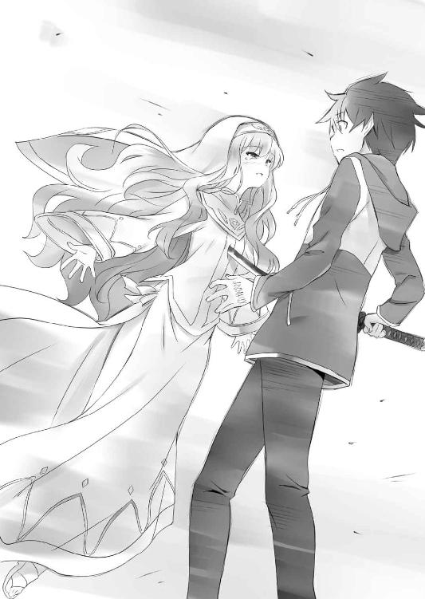
ルイズはそのまま、才人の胸に身を寄せた。
「ルイ......、ズ......」
「ほら、〝ゲート〟が、もうすぐ消えてしまうわ。い、急ぎなさいよね......、もとの世界に戻るチャンスは、これが最後なんだから......」
「ルイズ......」
「あなたは男の子だから、生まれた世界を取るべき......、でも、私は女だから。聖女にはなれなかったけど、あなたの恋人として死ねる。幸せだわ......」
ルイズは、満足な微笑みを浮かべ、最後の言葉を口にした。
「......好きよ、サイト。大好き」
その瞬間、世界から〝虚無〟の力が消え去った。
第十三章 虚無の終焉
その頃、『オストラント』号の甲板上では、ギーシュたち水精霊騎士隊の少年たちが、心配そうに、才人の飛び立った〝聖地〟の方角を見つめていた。
「サイトのやつ、大丈夫かなあ」
「まあ、止めても聞かんやつだからね」
のんびりと呟くマリコルヌに、ギーシュが相槌を打つ。
「あいつは、倒されても、倒されても、ぼくのワルキューレに立ち向かってきたんだ。下げたくない頭は下げられない、ってね。とんでもない頑固者だよ」
と、そこへ、水蒸気機関の修理をしてきたコルベールが戻ってきた。
「〝聖地〟の様子はどうかね？」
「変わりありませんよ。軍隊がどんどん上陸してる......」
〝遠見〟の魔法で〝聖地〟を見張っていたレイナールが答えた。
「うむ、そうか......」
コルベールが顎に手をあてた、そのときである。
同じく〝遠見〟で〝聖地〟の様子を見ていたマリコルヌが、突然、叫んだ。
「な、ななな、な......！」
「マリコルヌ、どうしたんだね？」
ギーシュが眉をひそめた。
「なんだか、〝聖地〟の様子がおかしいぞ！」
「様子がおかしいのはあなたでしょ」
呆れたように言って、キュルケが〝遠見〟の魔法を唱えた。
そして、まあ、と驚きの声をあげる。
「どうしたのかね、ミス・ツェルプストー？」
「大変！ 〝聖地〟が、落ちていくわ！」
「なんだって！」
ゴゴゴゴゴゴゴゴ......、と地響きのような音が、空に響き渡る。
上陸した軍隊で溢れた〝聖地〟は、地獄の釜をひっくり返したような大混乱に陥った。
浮上した〝聖地〟が、ゆっくりと降下を始めたのだ。
竜騎士やメイジは空を飛ぶことができるが、平民の兵士たちはそうもいかない。パニックに陥った兵たちは、先を争うようにフネに殺到した。
「〝虚無〟の力が失われる......、まさか、このようなことが......」
揺れる大地の上で、教皇ヴィットーリオ・セレヴァレは天を仰いだ。
始祖より授かりし〝虚無〟の力が、身体の内から失われてゆくのがわかる。
虚空に開いた巨大な〝ゲート〟が、ゆっくりと閉じはじめる......。
始祖の悲願である〝聖地〟を前に、ヴィットーリオはただ呆然と立ち尽くした。
この世界から、〝虚無〟の力を消す方法は、二つしかない。
ひとつは〝聖地〟の奪還。そして、もうひとつは......。
〝ガンダールヴ〟が、その主人を殺すこと。
彼女は、その二つ目の方法を、一体どこで知ったというのだろう？
「いえ、いまとなっては、どうでもよいことですね......」
ヴィットーリオは、自嘲するように首を振った。
自分は負けたのだ。最後の最後に、彼女の愛に敗北したのだ。
彼女は、愛する少年の命と、このハルケギニアを天秤にかけ、少年を選んだ。
自らの命を投げ出し、少年を死の運命から救ったのだ。
〝聖地〟のいたるところで地割れが起き、地面に大きな亀裂が走った。
混乱と喧噪の中、ヴィットーリオは、消滅した炎のルビーの台座を見つめた。
「すべての希望は潰えた。母上、わたくしはいま、あなたの御許に参りましょう」
ヴィットーリオは始祖の祈禱を唱え、大地の亀裂に身を投げた。
地面の震動も、喧噪の音も、才人には聞こえなかった。
才人は、血に染まったルイズの亡骸を抱きしめたまま、嗚咽し続けた。
「ルイズ......、なあ、ルイズ......、目を開けてくれよ、なあ！」
ルイズは、もう息をしていない。
くるくるとよく動く鳶色の瞳は、もう開くことはない。
血の気の失せた顔は、もう二度と、微笑むことはない。
「どうして......、どうしてだよ......、ルイズ！」
才人は、ルイズのピンクがかったブロンドの髪をかき抱いた。
ルイズ......、俺の恋人。大好きな、ご主人様。
意地っ張りで、プライドが高くて、正義感が強くて......。
才人のことを、好きだと言ってくれた女の子。
ぽたぽたと、とめどなく流れる涙が、ルイズの頰を濡らした。
左手のルーンの光が弱まり、だんだんと消えていく。
「消えるなよ......、なあ、消えないでくれよ......」
才人は左手を押さえて叫んだ。
これは、ルイズと俺の絆なんだ......。
「ちくちょう......、これじゃ、六千年前と同じじゃねえか......」
ガンダールヴが主人を殺せば、〝虚無〟の力が消滅するということ。
才人と同じ夢を見たルイズは、それを知り、才人に自分を殺させるようにしむけたのだ。
それが、才人と才人の世界の両方を救う、ただひとつの方法だった。
ルイズは、自分とハルケギニアの未来を犠牲にしても、才人を救おうとしたのだ。
才人は、冷たくなったルイズの頰に触れた。
「ルイズ、お前さ、俺がギーシュにボコボコにされたとき、三日三晩、看病してくれたよな。それから、街へ剣を買いに行ったり、キュルケやタバサと一緒にフーケのゴーレムと戦ったりして......、そんで、お前、『フリッグの舞踏会』で、初めて俺とダンスを踊ってくれたんだ。ドレスを着たルイズにドキドキしたの、いまでも覚えてるよ」
才人は震える指先で、ルイズの髪をそっと撫でた。
「それから、アルビオンでワルドと戦ったり、『魅惑の妖精』亭で一緒に働いたり、いろいろ冒険もしたよな。ほら、お前の実家に帰ったとき、忠誠には報いるところが必要ねって、そう言ってくれたじゃねえか。俺、あんとき、お前が認めてくれたんだって思って、めちゃくちゃ嬉しかったんだぜ......」
ルイズとの思い出は、尽きることなく才人の頭の中を駆けめぐった。
アルビオンでの結婚式、スレイプニィルの舞踏会、みんなでタバサを救出した冒険、ロマリアでのデート、記憶を消したルイズとの再会、ド・オルニエールでの穏やかな生活、あんときは、俺と姫様がキスしたのを見て、出て行っちまったんだっけ......。
楽しいこと、嬉しいこと、悲しいこと、辛いこと......、いろんなことがあった。
「俺、東京にいるときは、なんも考えずに生きてきた。毎日、学校に行って、ご飯食べて、ただ、退屈に生きてたよ......」
才人は、ルイズの亡骸を強く抱きしめた。
「でも、ルイズ。お前に出会って、俺、いろんなことを知ったんだ。お前は俺を、どこかべつの場所に連れてってくれるんだ。ここじゃないどこかに......」
「......イトさん！ サイトさん！」
どこかで才人を呼ぶ声が聞こえた。
才人が振り向くと、大地に入った亀裂の向こうで、シエスタとティファニア、それにアンリエッタが、必死に叫んでいた。
「サイト、逃げないと！ そこにいたら、死んでしまうわ！」
ティファニアが心配そうに叫んだ。
「............」
才人はごめん、と首を振った。ここに残って、ルイズと一緒にいたかった。
わかってる......、自分が死んだら、ルイズのしたことが無駄になることも。でも、ルイズのいない世界なんて、生きてても意味がないと思った。
もう、地球に帰ることも、ハルケギニアの未来も、なにもかもどうでもよかった。
約束したんだ、死ぬときは一緒だって......。
だから、最期はルイズと一緒にいる。
「テファ、シエスタ、姫様......、ごめん！ みんなに、よろしく頼む！」
三人に向かって、大声でそう叫ぶと、ルイズの亡骸を抱えて立ち上がった。
ズズズズズズンッ......、地面が大きく揺れ、地割れがさらにひろがった。
ティファニアたちは、ずっと才人の名前を呼んでいたが、やがて、大地が完全に分断され、その姿も見えなくなった。
ルイズの身体は軽かった。こんな小さな身体で、ずっと、世界の命運なんてもんを背負ってきたんだな......、そう思うと、また涙がこみあげてきた。
こんなにも小さな女の子が、命をかけて、俺と地球のことを救ってくれたんだ......。
才人はルイズの身体を抱えたまま、ゆっくりと、亀裂のほうへ足を踏みだした。
ルイズ、俺の大好きな、恋人......。
ずっと一緒にいるよ。
ハルケギニアに天国なんてもんがあるのか、わかんねえけど......。
そんなもんが、もしあるなら、そこで結婚しよう。
才人は、真っ暗な亀裂を見下ろした。
「く......」
覚悟を決めていても、いざとなると、足がすくんだ。
勇気が出ないのは、〝ガンダールヴ〟のルーンが消えてしまったからだろうか。
「くそっ、ちくしょう......」
才人が、恐怖感をまぎらわそうと大声で叫んだ、そのときだった。抱きかかえたルイズの身体が、ぼうっと青白く光っているのに、才人は気がついた。
〝......なんだ？〟
才人は眉をひそめた。
光を発しているのは、デルフリンガーだった。
「デルフ？」
「おう、相棒、馬鹿なことすんじゃねえぞ」
デルフリンガーは言った。
「嬢ちゃんの意思を、無駄にすんな」
「デルフ、お前......」
才人が呆然としていると......。
「思い出したんだ。おれの......、最後の役目をよ」
デルフリンガーの刀身は、ますます激しく光りだした。
「最後の役目？」
「ああ、そうだ......、なあ、相棒、おれはよ、ずっと不思議に思ってたんだ。魔法力を使って〝使い手〟を動かす力......、なんのために、あんな能力があるのかってな」
「なんのためって......、使い魔を死なせないようにするためじゃないのか？」
「ああ、おれもそう思ってた。でもよ、違った。そうじゃなかったんだ」
デルフリンガーの放つ光は、ますます輝きを増した。
「おれはよ、ずっと、サーシャに作られたんだと思ってた」
「違うのか？」
「いや、違わねえ......、違わねえんだが、正確には、おれを作ったのは、サーシャとブリミル、つまり二人の合作だったんだ」
「ブリミルが？」
「そうだ。おれには、あの二人の意思が込められてたんた。思えば、おれの記憶をロックしてたのは、どうもブリミルのほうの意思だったらしいんだが......、まあ、それはともかくよ、ブリミルの野郎は、死の間際、おれに〝虚無〟の魔法を込めたらしい」
「それが、デルフの〝使い手〟を動かす能力なのか？」
才人は尋ねた。
「おう、そういうこった。ブリミルがおれに遺したのは、命を与える〝虚無〟の魔法。破壊を司る〝生命〟と対になる、いわばもうひとつの〝生命〟ってとこだな」
「デルフ、一体なにを言って......？」
才人が言いかけた、そのとき......。
ビギッ......
デルフリンガーの表面に、小さなヒビが入った。
「デルフ？」
「思えば、おれは六千年間、このときのため生きてきたのかもしれねえ」
ビギッ......、ビギッ......
表面に走るヒビが大きくなる。
同時に、デルフリンガーの刀身から放たれる光が強さを増していく......。
「デルフ！」
才人はハッとして、相棒の名前を叫んだ。
デルフリンガーが何をしようとしているのかに、気づいたのだ。
「デルフ、お前、まさか......」
「そんな顔すんなよ、相棒」
デルフリンガーは、いつもの調子で言った。
「おりゃあ、相棒と出会えて、楽しかったぜ。お別れすんのは残念だが、なに、後悔はねえさ。おれは、六千年生きてきて、ちゃんと自分の使命をまっとうできた。道具冥利につきるってもんだ」
「......道具じゃねえ、デルフは、道具なんかじゃねえよ！」
才人は涙声で言った。
「道具じゃねえ......、お前は、俺の親友だろうがよ」
「おう、嬉しいこと言ってくれるじゃねえか」
デルフリンガーの刃先が、ボロボロと崩れていく......。
才人はその様子を、呆然と見つめることしかできない。
「相棒......、嬢ちゃんを幸せにするんだぜ。もう、浮気すんなよ」
「デルフ......」
そのとき、才人は気づいた。
冷たくなったルイズの指先が、かすかに動いたのだ。
「......ルイズ？」
「うまく、いったみてえだな......」
デルフリンガーは、呟くように言った。
「あばよ、相棒。こんどこそ、本当にお別れだ」
「デルフ、待ってくれよ、デルフ......」
「お前さんに出会えて、幸せだったぜ」
「デルフ─────ッ！」
その瞬間、ルイズを包む光が、閃光のような輝きを放ったかと思うと、デルフリンガーの刀身はバラバラに砕け散った。
「......ん、うん......」
......ルイズは、ゆっくりと目を覚ました。
目の前に、黒髪の少年がいる。
涙で顔をぐしゃぐしゃにして、なにかわあわあと叫んでいる。
......才人だった。
才人が、ルイズの名前を呼んでいるのだ。
なに？ どういうこと？
ルイズは混乱した。だって、わたしはさっき、死んだはずじゃないの？
才人の命を救うために、デルフリンガーに胸を貫かれて死んだはずよね。
うん、間違いない。あのとき、わたしは死んだ。たしかに死んだわ。
じゃあ、ここはどこ？ どうして、才人がいるの？
そのとき、ルイズは、ハッとした。
もしかして、天国なの？
ああ、そうなんだわ、きっと。
わたし、天国にきちゃったのね......。
ルイズは納得した。
あれ、でも、待ってちょうだい。ここが天国だとすると......。
どうして、才人がここにいるんだろう？
自分はいま天国にいて、才人がここにいる......、ということは、つまり、ええと......。
ルイズは、幾秒か考えて、結論を出した。
「あ、あ、あああ、あ......」
「あ？」
「あ、あんた、なにしてんのよぉ！」
ルイズは才人の股間を思いっきり蹴り上げた。
「いってええええええええええ！」
悶絶して転がる才人を、ルイズはげしげしと容赦なく踏んだ。
「ばかばかっ、わたし、あんたを救うために死んだのに、あ、あんた、わ、わたしのあとを追って死んだのね！ ばかよ、ほんと、ばか！ うああああああああああん！」
「ま、まて！ まてまて、落ち着け、ルイズ！」
ルイズに踏まれながら、才人は叫んだ。
「お、落ち着けですって！ よ、よくも、よくもそんなことが......」
「お前、生き返ったんだよ」
「......へ？」
ルイズは、きょとんとした。
まわりを見ると、そこは、さっきまでいた〝聖地〟だった。
「......生き返った、ですって？」
「うん、信じられないかもしれねえけど......」
才人は立ち上がると、ルイズの手を握った。
才人の手には、しっかりとぬくもりがあった。
「ど、ど、どうして？ だって、わたし、死んだじゃない......、そうよね？」
ルイズは不安そうに言った。
「デルフが、お前のことを救ってくれたんだ」
才人は、しんみりとした口調で言った。
足もとには、バラバラになったデルフリンガーの残骸が落ちていた。
「デルフが？」
「うん、あいつ、最後の役目だって......、お前に命をくれたんだ」
才人はルイズに、デルフリンガーの最期を話した。
始祖ブリミルが、もう二度と六千年前と同じ悲劇を繰り返さないようにと、デルフリンガーに命を込めてくれたこと。そして、デルフリンガーが、その命を使って、ルイズを生き返らせてくれたことを......。
ルイズは、しばらく呆然としていたが......、やがてその目に涙が溢れた。
デルフリンガーの残骸を集めて、ひとつひとつ、胸に抱きしめる。
「デルフ......、あんたは、いつも、いつもわたしたちを助けてくれたわね」
「そうだな」
「わたしも......、わたしも、あんたのこと、大切なお友達だと思っていたわ」
ルイズの涙が、ただの鉄の破片となったデルフリンガーを濡らした。
「デルフ、ありがとう」
ルイズは目を閉じて、祈るように呟いた。
才人も無言で目を閉じた。
本当は、才人も号泣したかった。
でも、いまは悲しむよりも、デルフリンガーに感謝すべきだと思った。
ありがとう。ルイズを......、俺の最愛の人を生き返らせてくれて、ありがとう。
そうして、しばらくデルフリンガーを悼んでいると......、地面が大きく揺れた。
「な、なに？」
「〝虚無〟の力が消えただろ。それで〝聖地〟の精霊の力が暴走しちまってるんだ」
「そんな......」
「行こう、せっかく、デルフのくれた命だ。俺たちが死ぬわけにはいかねえよ」
「ええ」
才人はデルフリンガーの破片をかき集めると、パーカーのポケットにしまった。
「才人、あんた身体、ボロボロじゃない......、大丈夫なの？」
「ああ、〝リーヴスラシル〟のルーンは消えたし、まだ、なんとかなるよ」
才人はきょろきょろとあたりを見回した。
ゼロ戦は壊れちまった。フネはまだ、あるだろうか......。
「......とにかく、中心から離れよう」
才人はルイズの手をとり、走りだした。
地面が大きく揺れた。なにしろ宙に浮いているので、揺れ方が地震の比ではない。あちこちに大小の亀裂が生まれ、才人とルイズは何度も転びそうになった。
「だんだん、落下の速度が上がってるわ！」
「〝虚無〟の力が失われてるんだ」
目の前の小さな亀裂を跳び越えようとしたとき、足もとの地面が崩れた。
「きゃあ！」
「ルイズ！」
足を踏み外したルイズの腕を、才人が強引に引き寄せる。
もとの足場はボロボロと崩れ、真下の海に落下した。
「サイト、ありがとう」
ルイズはへなへなとへたりこむ。足がもう限界だった。才人のほうも、もう走ることはできそうにない。〝リーヴスラシル〟のルーンが消えたとはいえ、傷だらけの身体で、よくぞここまで走ったもんだと思う。
岩盤はどんどん崩れ、二人は大元と切り離された、小さな岩の上に取り残された。
「くそ、このままじゃ......」
ルイズは〝フライ〟も〝レビテーション〟も使えない。誰かが気づいて、救助してくれるのを待つしかない。でも、この小さな岩がそう長くもつかどうか......。
「才人、あれを見て......」
と、背後を振り返ったルイズが、上を指差した。
〝聖地〟が崩落し、少しずつ降下していく中、巨大な中心部だけは、淡い光を放ちながら、空へ昇っていこうとしていた。
きっと、あれが〝大いなる意思〟と呼ばれた〝精霊石〟の本体なんだろう。
ハルケギニア中の〝風石〟を共鳴させ、大陸の〝大隆起〟を引き起こす元凶。
あれをなんとかしない限り、ハルケギニアを救うことはできない......。
「あんなもん、どうすりゃいいんだよ......」
そのとき。才人は、はるか頭上に輝く光球に気がついた。
最初は、太陽かと思った......、でも、太陽じゃない。
あれは......。
「〝生命〟だ......」
才人は呟いた。
光球はかなり小さくなったものの、その輝きは衰えていない。〝リーヴスラシル〟の命を消耗して得た、莫大な〝虚無〟の力が、まだ残っているのだ。
「なあ、ルイズ」
と、才人は言った。
「あれ、まだ唱えることはできるか？」
「あれ？」
ルイズは頭上を見上げると、すぐに才人の言葉を理解した。
「......わからない。でも、やってみる価値は、あるかもしれないわ」
真剣な表情でそう呟くと、ルイズは懐から杖を取りだした。
あの大きさでは、もう、本来の〝生命〟ほどの威力はないだろう。
そもそも、ルイズは〝生命〟を完成させるための、最後のルーンを唱えていない。
つまり、あれは〝生命〟ではなく、せいぜいが、特大の〝エクスプロージョン〟だ。
でも、あの〝聖地〟の中心部を吹き飛ばすくらいのことは、できるかもしれない。
「わたし、やるわ」
ルイズは、深呼吸して、杖を真上に向けた。
才人は頷くと、腕に手を添え、ルイズの身体をしっかりと抱きしめた。
わずかに、熱に浮かされたような高揚があった。
その高揚は、心地よく、ルイズを冷静にさせる。
すべての感情が、呪文の調べにのって、身体から出ていくような感覚。
ルイズはその感覚に、身を任せた。
これが、最後の〝虚無〟の魔法。
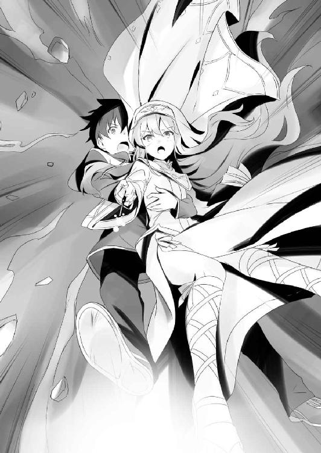
初歩の初歩の初歩の〝虚無〟の魔法。
〝エクスプロージョン〟
膨れ上がった閃光が〝聖地〟の中心部を吞み込んだ。
同時に、足もとの岩が崩壊し、二人の身体は真っ逆さまに落下する......。
「ルイズ、やったな......、お前、本当に世界を救っちまったんだな......」
才人はしみじみと呟いた。
「ええ......、でも、もう......」
このままじゃ、絶対に助からない......。
二人は覚悟して、目を閉じた。
と、そのときだ。才人の身体が、ぐんっとなにかに引っ張り上げられた。
「な、なんだ？」
見上げると......、大きな風竜が、才人とルイズの身体を摑んでいた。
「やあ、なかなか派手にやってくれたじゃないか、二人とも」
「ジュリオ！」
二人を摑んでいたのは、ぐったりした教皇を口にくわえたアズーロであった。
「これは一個、貸しにしておくぜ、サイト」
「なにが貸しだよ！」
「あっはっは、しっかり摑まっていたまえ。なにしろ、ぼくはもう〝ヴィンダールヴ〟じゃないからな。荒っぽい飛行になるぜ」
アズーロはきゅわっと鳴くと、大きな翼を羽ばたかせ、大空を舞うのだった。
第十四章 英雄の帰還
ラドの月の第四の週、第六曜日。〝聖地〟の消滅から、十日後のことである。
トリステイン魔法研究所の調査により、〝風石〟の異様な成長が止まったことが、正式に確認された。エレオノールの話によれば、少なくとも、今後、数万年は〝風石〟が暴走する心配はないだろう、ということであった。
目指すべき目的地を失った〝聖地回復連合軍〟は、急速に結束力を失い、失意のうちに帰路につくことになった。連日の強行軍と、慣れぬ異国の地への遠征で、ハルケギニアの兵士たちは激しく疲弊していた。無益な戦争に駆り出された諸侯の中には不満を抱く者も多く、とくに新興国ゲルマニアでは、本国での大規模な反乱が勃発し、アルブレヒト三世はその鎮圧に追われることになる。
ロマリアの権威は失墜し、ヴィットーリオは教皇の座を退くこととなった。〝宗教庁〟は早急に、新教皇を決定する教皇選挙の開催を決定した。
ここに〝聖戦〟は終結し、ロマリアの野望は完全に潰えたのであった。
国が乱れ、〝宗教庁〟の権威が失墜した最中、混迷に陥るハルケギニアの民の心に希望をもたらしたのは、〝聖女〟の存在だった。始祖の〝虚無〟により、世界を救った〝聖女〟は、いまやハルケギニアの民すべてにとっての希望であるのだった......。
「まったく、おかしな話よね。わたしが〝聖女〟だなんて。わたし、ハルケギニアより、サイトの命を救うことを選んだのに」
「まあ、いいじゃねえか。実際、お前が世界を救ったんだしさ」
ゴトゴトと揺れる馬車の中で、才人は言った。
才人たちが『オストラント』号で、トリステインに戻ってきたのは、つい昨日のことである。才人の身体の療養のため、ネフテスにあるルクシャナの家に一週間ほど滞在し、それから、戻ってきたのであった。
ド・オルニエールの屋敷で、エルフたちに連れさられてから、もうひと月近くが経っていた。新学期の授業の始まったトリステイン魔法学院では、クラスメイトたちが、ハルケギニアの英雄となった才人たちをあたたかく歓迎してくれた。しかし、才人とルイズは、学院に少し顔を出しただけで、すぐに別の場所へ向かったのである。
馬車の行く先は、トリステイン随一の名勝、ラグドリアン湖であった。
「わたしは、自分のわがままを通しただけだわ。世界を救ったとすれば、それはデルフのおかげよ。デルフが命をくれなかったら、〝聖地〟を壊すこともできなかったわ」
ルイズは、悲しそうに呟いた。
才人は、バラバラになったデルフリンガーの欠片に目を落とした。
なんとかデルフリンガーをもとに戻す方法がないものか、ルクシャナに聞いてみたのだが、〝インテリジェンス・ソード〟を作るのが得意な、エルフの先住魔法でも、もとの意識をそのまま戻すことは、不可能であるらしい。
デルフリンガーは二度ともとには戻らない。だったら、せめて、親友をラグドリアン湖で供養しようと、才人は思ったのであった。
それに、盗まれた〝アンドバリの指輪〟を返すという、水の精霊との約束もあった。
学院で借りた馬車は、のどかな田舎道をのんびりと進む。畑仕事をしていた農夫のお爺さんが、貴族様の馬車だと手を振ってくる。
「懐かしいわね、ラグドリアン湖。一年ぶりくらいになるのかしら」
「あのときは、お前、惚れ薬でおかしくなってたんだよな」
「もう、そんなこと、思い出させないでよ」
「ご、ごめん」
才人は謝った。
すると、ルイズはなぜか、ぽーっとした目で才人を見つめてくる。
「ルイズ？」
「でもね、い、今はもっと、おかしくなっちゃってるわ、わたし」
「うん？」
なんのこっちゃ？ と思って、才人は聞き返した。
ルイズは才人の腕によりかかると、耳もとで恥ずかしそうに囁いた。
「いまはね、惚れ薬なんてなくたって、わたし、あんたに完全にまいっちゃってるの。あんたを、す、好きな気持ちで、胸がいっぱい、溢れちゃってるのよ」
自分で口にした言葉に、ルイズはますます真っ赤になった。
「ルイズ......」
才人の胸の中に、ルイズを愛おしいと思う気持ちが、どんどん溢れてくる。
こ、ここ、このご主人さま、可愛すぎるだろ......。
なにこれ、俺に、まいっちゃってるって？
俺なんかに......、こんなオモロ顔のモグラなんかに、本気で？
昔は、犬とか、言ってたのに......？
ルイズは、なにかを期待するように、潤んだ鳶色の瞳で上目遣いに見つめてくる。
才人の理性は、もう限界だった。こ、ここ、この可愛すぎるご主人さまを、世界一可愛いご主人さまを、ど、どうしてくれようか、どどど、どうしてくれようか......。
とりあえず、考えるのはあとだ、と才人は思った。
「ルイズ」
才人は、囁くように言うと、ルイズの顎をくっと持ちあげた。
「ちょっと、だめよ、窓開いて......、んっ......、んー......」
馬車の中は急に静かになった。才人がルイズの唇を塞いだのだ。
そんな二人のことを気にかけることもなく、御者の魔法人形は馬車を進めるのだった。
丘から見下ろすラグドリアン湖の青は眩しかった。太陽の光を反射して、湖面がキラキラと光っている。湖面の岸にたどり着くと、才人は大声で呼びかけた。
「おおい！ 指輪、取り返してきてやったぞ！」
しばらくすると、岸から三十メイルほど離れた湖面が、眩いばかりに光った。
透き通った水が、まるでそれ自体が意思を持つかのようにうねうねと蠢き、アメーバのように伸び上がり、やがて、のっぺらぼうに口だけのある、人を模した形になった。
「単なる者よ、覚えているぞ。我はたしかに約束した」
「ああ、台座だけになっちまったけど......、これのことだろ？」
才人は〝アンドバリの指輪〟の台座を水の精霊に差しだした。
「おお、たしかに......、これこそ我と共に、時を過ごした秘宝」
「台座だけでもいいのか？」
「かまわぬ、単なる者よ。水の結晶の力は、いずれ回復するだろう」
水の精霊はぐにゃりと身体を曲げると、湖の中に沈んでいった。
才人は、布に包んだデルフリンガーの破片を岸に並べた。
ルイズと二人で、破片を、ひとつひとつ、丁寧に湖に沈めていく......。
鉄の破片が、水の底に消えてゆくそのたびに、デルフとの思い出がよみがえる。
いつだって、才人はデルフと一緒だった。
ワルドと一騎打ちをしたとき、暴走した姫様を止めたとき、アルビオンの艦隊との空中戦、たった一人で七万の軍に突っ込んだときも......。
そんな思い出の数々が、きらめきながら沈んでゆく。
『相棒、嬢ちゃんを幸せにするんだぜ』
最後のひとつが、湖の底に沈んだ。
ああ、デルフ、見ててくれよな......。俺、男になるよ。
しばらく、目を閉じて黙禱を捧げたあと、才人は、ゆっくりと立ち上がった。
そして、そばに立つルイズの手をとった。
「サイト？」
ルイズが、きょとんと首を傾げる。
才人はルイズの目を見つめると、深呼吸して、口を開く。
「ルイズ、あのさ......」
「なによ？」
才人には、このラグドリアン湖をおとずれた理由が、もうひとつだけあった。
ルイズには内緒だったけれど......。
水の精霊は『誓約』の精霊。ラグドリアン湖の前で交わされた誓約は、決して破られることはない。そんな伝説のあるこの湖こそ、これからすることに、一番ふさわしい場所だと思ったのだ。
「地球に帰る〝ゲート〟も消えちまったし、〝虚無〟の力も消えちまった。どうせ戻ることはできないんだし、だったら、いっそ、こっちの世界に腰を据えようと思うんだ」
「サイト......、本当にそれでいいの？」
「うん、もう決めちまった。それで......、えっと、それでさ......」
才人は赤くなって口ごもった。
心臓がばくばくする。緊張で喉がカラカラに渇く......。
ええい、ままよ！ と、才人はルイズの肩を摑んだ。
「な、なに？」
「ルイズ、俺たち、結婚しよう！」
ルイズは、鳶色の目をいっぱいに見開き、きょとんとしていたが......。
やがて、その目に大粒の涙が溢れる......。
ルイズは、満面の笑みを浮かべて返事をした。
「はい」
美しく輝くラグドリアン湖の前で、才人とルイズは、そっと唇を重ねた。
それから、七日後......。ケンの月の第一の週、第五曜日。
才人とルイズの婚礼は、本人たちたっての希望で、ルイズが最初に才人を召喚した、トリステイン魔法学院のアウストリの広場で開かれることとなった。
窓から見える広場には、続々と列席者が集まっていた。
寮の自室で、ルイズはシエスタに手伝ってもらい、ドレスの着付けをしていた。
婚礼のドレスは、貴族のしきたりどおり純白である。
「胸に、詰め物をしたほうがいいかしらね」
と、自分の平坦な胸を見下ろして、ルイズはため息をつく。
「大丈夫です。よくお似合いですよ、ミス・ヴァリエール」
コルセットの帯を締めながら、シエスタが言った。
「そ、そうかしら？」
「はい、きっと、サイトさんもイチコロです」
シエスタはにこっと微笑んだ。
「ミス・ヴァリエールのお胸は、まるで、故郷のタルブの大平原のようですわ」
「シエスタ、あんたも、気の利いたお世辞を言えるようになったのね」
ルイズは上機嫌になった。そのタルブとかいう田舎のことはよく知らないが、きっと風光明媚な場所なのだろう。
「でも、よくお家のお許しがでましたね」
「まあね。そりゃあもう、大変だったわ」
実家に結婚の報告に行ったときのことを思い出し、ルイズは頭を抱えた。
プロポーズの翌日、才人とルイズは二人で、ルイズの実家のヴァリエール公爵領に戻ったのである。二人の結婚を認めてもらうため、なんとか両親を説得しようとしたのだが、ラ・ヴァリエール公爵は、頑として聞き入れなかった。
才人は、屋敷の庭で公爵にさんざん打ちのめされた。ガンダールヴの力のない才人は、もう死ぬんじゃないかってくらいにボコボコにされた。
しかし、意外なことに、二人の結婚に味方してくれたのは、エレオノールだった。
エレオノールは、才人が平民ではなく、爵位を持った立派な貴族であること。ハルケギニアの英雄であることを語り、公爵を説き伏せてくれたのだ。
これには、〝聖地〟からの帰還後、アンリエッタが才人に正式な子爵の爵位を与えたことも大きく影響した。平民としては異例の大出世、というか、トリステイン史上、そんな出世をした人物は誰一人としていなかったのである。
そんなわけで、エレオノールとカトレアの二人が味方してくれたおかげで、どうにかこうにか、父を説き伏せることができたのだった。
「はあ、貴族の方も大変ですねえ」
「認めてくれなかったら、駆け落ちするつもりだったわ」
ルイズは言った。
「そのときは、わたしも連れていってくださいね」
「だめに決まってるでしょ」
「ケチ」
「あんたねえ......」
ルイズはシエスタを睨んだ。
「でも、約束は守ってくださいね」
「約束？」
「一週間に三日、サイトさんを貸してくださる約束です」
「なに言ってるの、二日よ、二日」
「あ、二日はいいんですね」
「え？ だ、だめよ、だめ！」
そのとき、ヘレン婆さんが部屋に入ってきた。
「ご準備はよろしいですか、皆様がお待ちですよ」
婚礼のスーツを着た才人は、始祖ブリミルの像の前で、花嫁のルイズを待っていた。
アウストリの広場には、土のメイジの作りだした美しい花々が咲き乱れ、コルベール特製の魔法の花火が打ち上げられた。
婚儀にはアンリエッタ女王も参列していた。女王が婚儀に参列することなど、よほど格式の高い貴族でなければあり得ぬことなので、学院の生徒たちは大いにわきたった。
「......で、なんで神父がお前なんだよ、不良神官」
才人は小声で、ブリミル像の前に立つジュリオに話しかけた。
「まあまあ、ぼくにも君たちの門出を祝わせてくれよ」
ジュリオは悪びれもせずに言った。
「ったく、しょうがねえな......」
ジュリオには最後に助けてもらった借りもあるので、強くは言えないのであった。
「つうか、お前のほうこそいいのかよ、お前たちの計画を潰しちまったんだぞ」
「結果として、ハルケギニアは救われたんだ、いまはそれでいいさ」
「お前、あんだけしといてな......」
才人は何か言い返そうとして、やめた。
結局、教皇もこいつも、ハルケギニアのことを考えてしたことに、変わりはないんだろう。それに、今日はめでたい席でもあることだし......。
「許したわけじゃねえ、でも、今日は忘れるよ」
鐘が鳴り響き、ラ・ヴァリエール公爵がルイズの手を引いて、広場に現れた。
才人は思わず、息を吞んだ。
純白のドレスで着飾ったルイズは、ものすごく綺麗だった。
「ルイズ、すごく綺麗だ」
「ありがとう。サイトも素敵よ」
ルイズにこっと微笑んだ。天使のような微笑みだった。
二人は誓いの言葉を口にして、口づけを交わしあった。
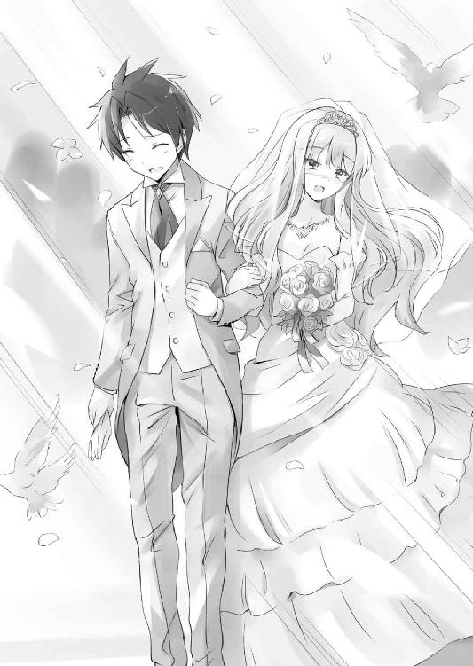
祝福の拍手は、いつまでも鳴り止まなかった。
花吹雪の舞う広場を歩きながら、才人は、胸もとに手を添えた。
〝お前も祝ってくれるよな、デルフ〟
そこには、デルフリンガーの鍔を入れていた。
これだけは、形見として、手もとに残していたのだった。
婚礼の儀が無事に終わると、宴会がはじまった。
オスマン氏が広場の前に立つと、列席者の間からまばらな拍手が飛んだ。
「あー、このたび、ミス・ヴァリエールとシュヴァリエ・サイトの両人は、めでたく結婚する運びとなった。これはめでたい、じつにめでたいことじゃ」
オスマン氏は広場を見回して、うむ、と頷く。
「先の〝聖戦〟のおり、二人はともに手をたずさえて、世界を救った。世界を救ったということは、つまり、あまねく女性の臀部を救ったということじゃ。もし二人の活躍がなければ、いまごろわしは、女性の臀部を愛でることもできなかったじゃろう......」
「オールド・オスマン、もう、そのあたりで......」
会場の雰囲気を察したコルベールが、小声で言った。
「うむ、そうか？」
オスマン氏はこほんと咳払いして、ワインの杯を掲げた。
「あー、ともかくじゃ、今日は世界を救った〝英雄〟と〝聖女〟の、めでたき婚礼。おおいに飲み、おおいに食べ、二人の門出を祝福しようではないか！」
わぁあああああああああああああああ！
最後は、大きな歓声があがり、宴会が幕を開けた。
広場の真ん中にはワインの樽が置かれ、参列者の各テーブルには、学院のコック長、マルトー親父が腕を振るう、豪勢な料理が並んだ。学院の給仕だけでは人手が足りないので、招待客でもある『魅惑の妖精』亭のジェシカたちが手伝ってくれた。
水精霊騎士隊の少年たちは、上等のワインですっかり酔い潰れてしまった。まあ、それも無理はない、なにしろ、彼らは、このたびの働きにより、アンリエッタ女王より、一人につき五千エキューの恩賞と、トリステインで最も名誉ある聖ブリミル大勲章を賜ったのである。ギーシュ、マリコルヌ、ギムリ、レイナール、エイドリアン、アルセーヌ、ガストン、ヴァランタン、ヴィクトル、ポール、エルネスト、オスカル、カジミール......、隊士の全員が、一躍ときの人となったのであった。
そんな少年たちのもとに、『魅惑の妖精』亭の女の子たちが群がった。
「あら、かわいい坊や、今日はサービスしちゃうわよ」
いまや水精霊騎士隊の少年たちは、勇敢な救出作戦に関わった英雄である。学院の女の子だけでなく、トリステイン中の女の子たちの憧れの的なのだった。
少年たちがいい気分になっていると、そこへ、野太い声が聞こえてきた。
「んんんトレビアンな男の子ね、どんどん食べなさい」
「げっ！」
店主のスカロンの登場に、ギムリたちは飲んでいた酒を吐きだした。
そんな仲間たちの様子を見ながら、ギーシュはちびちびとワインをあおっていた。
「と、ところで、モンモランシー」
「なによ」
さきほどから、モンモランシーはずっと不機嫌だった。ギーシュのくせに、女の子にモテているのが気にくわないのであった。
「その、ぼ、僕たちも、もうすぐだと、思わないかね？」
「......え？」
モンモランシーはドキッとした。
「ぼ、ぼくも、もう立派な騎士だ。だからね、その、きみと、け、結婚など......」
「......け、結婚？ え？ え？」
どうしよう......、わたし、プロポーズされちゃった？
モンモランシーは口もとを押さえた。
まだ早すぎる気もするけど、ルイズも結婚したんだし、それに、ギーシュはもう、昔のギーシュとは違う。今の彼は、女王陛下の立派な騎士なのよね。
「ギ、ギーシュ、わたしも......」
「おい、見たまえギーシュ、『魅惑の妖精』亭にすごいかわい子ちゃんがいるぞ」
「な、なに、それは本当かね！」
ギーシュの首がぐるんと回る。
モンモランシーは、ギーシュの靴を思いっきり踏みつけた。
「あいつら、もう酔っ払ってやがる」
「もう、恥ずかしいんだから......」
才人とルイズは、ルイズの二人の姉たちのテーブルに挨拶におとずれた。
「ふん、馬子にも衣装ね」
エレオノールが才人をじろじろ睨み、品評するように言った。
「そ、その節はどうも......」
才人が怯えながら頭を下げると、エレオノールはふんと目を逸らした。
エレオノールはどうにも不機嫌であった。ルイズがエレオノールに投げたブーケを、よりによって、マリコルヌがキャッチしてしまったのである。怒り狂ったエレオノールはマリコルヌを罵り、さんざんに踏みつけた。マリコルヌは幸せそうだったが......、ひょっとしてあいつ、怒らせるためにわざとやったんじゃないだろうか。
「ルイズ、そのドレス姿、とても綺麗よ」
カトレアがふわりと笑う。
カトレアさん、あいかわらず美人だなあ、と才人は思った。
「ちい姉様、ありがとう」
「あなたも、よく似合っているわ」
カトレアはにこっと微笑んだ。
「ど、どうも......」
才人は照れて頭をかく。
「そういえば、カトレアさん、身体のほうは大丈夫なんですか」
「ええ、あなたたちの持ってきてくれた、お薬のおかげでね」
カトレアの身体は、魔法でも治せない難病に冒されていた。それを聞いたルクシャナが、叔父のビダーシャルの作ったエルフの秘薬を手土産に持たせてくれたのだ。さすが、エルフの薬の効果は絶大で、カトレアの病状はみるみるうちによくなった。
カトレアは才人の目を見つめて言った。
「ねえあなた、貴族の条件、覚えてる？」
「はい」
才人は頷いた。前に、カトレアさんと話したことがあった。
貴族の条件は、魔法が使えることじゃない。
『貴族の条件は一つだけ。お姫様を命がけで守る、それだけよ』
カトレアさんは、そう教えてくれたのだ。
「あなたは、立派な貴族だわ」
カトレアは優しく微笑んだ。才人は思わず、泣きそうになってしまった。実の姉のようなこの人に認められるのは、才人にとって、なによりも嬉しいことだったのだ。
「ちびルイズ、わたしより先に結婚するなんて、ナマイキよ」
「いだだだだ、姉さま、いだいわ......」
エレオノールがルイズの耳を引っ張る。
そんな仲のいい姉妹の姿を見て、才人の心にふと言いしれぬ寂しさが生まれた。
「どうしたの、サイト？」
「ん、なんでもないよ」
尋ねるルイズに、才人は首を振った。
「そういえば、公爵は？」
「お父様なら、あそこにいるわ」
エレオノールが、広場の隅のテーブルを指差した。
そのテーブルでは三人組の男たちがくだを巻き、ルイズの母のカリーヌは、すっかり泥酔してしまったラ・ヴァリエール公爵を介抱していた。
「昔の、魔法衛士隊の仲間だそうよ」
みんながワインや食事を楽しんでいる頃、タバサは木陰で本を読んでいた。
「おちび、ケーキを持ってきたのね、きゅいきゅい」
「............」
タバサはシルフィードの運んできたケーキを、ぱくっと口にほうりこむ。
それから、また本に目を落とした。
「なにを読んでるのね、きゅい？」
シルフィードがタバサの本を覗き込む。タバサが読んでいるのは、トリステインの城下で話題の政治学の本だった。
じつは先日、故郷のガリアで、ひと悶着があったのだ。なんと、女王のジョゼットが、ジュリオと一緒になるために、王冠を返却してしまったのである。
王宮は大混乱に陥り、タバサに救いを求めてきた。最初は戸惑ったタバサであったが、古くから仕える家臣たちに懇願され、結局は、折れることになった。そんなわけで、タバサは再び、ガリアの王冠をかぶることとなったのである。もっとも、ジョゼットとタバサの入れ替わりは、一部の者しか知らぬことでもあるので、いまのところは、あまり面倒なことは起きていなかったが......。
そんなタバサのもとに、キュルケがやってきた。
キュルケは悪戯っぽく微笑むと、親友の耳もとで囁く。
「ねえ、ほんとにいいの？ 今なら、まだ間に合うかもしれないわよ」
タバサは本から顔を上げた。視線の先には、幸せそうな才人とルイズの姿があった。そんな二人の姿を見て、タバサは微笑んだ。
「......いいの。あの人が幸せになってくれることが、私は、一番嬉しい」
まあ、とキュルケは目を丸くした。二人を見つめるタバサの表情は、親友のキュルケが、これまで見たこともないくらい、晴れやかな笑顔だったのである。
「テファ、楽しんでるか？」
「ええ、とても。サイト、結婚、本当におめでとう」
広場の隅にいたティファニアに、才人が声をかけると、彼女は嬉しそうに二人の結婚を祝福してくれた。
それから、才人とティファニアは、こっちでの生活はどうだとか、ファーティマと連絡は取り合ってるのかとか、そんなとりとめもないことを話した。
ファーティマは『エウメネス』の街に戻り、また一族と一緒に暮らしているらしい。そう簡単にわだかまりは解けないかもしれないが、二人には、いつか本当の姉妹みたいに仲よくなって欲しいと、才人は思った。
「それにしても、この服、すごく窮屈ね」
ティファニアはドレスのスカートをつまんで苦笑した。たしかに、ゆったりとしたエルフの服に比べると、靴とかコルセットとか、いろいろ大変そうだ。
とくに、その......、胸のあたりなんかは、彼女のメロンのような胸が、いまにもはみだしそうであった。
ティファニアの胸のサイズに合うドレスなど、急には仕立ててもらえなかったので、従姉のアンリエッタに貸してもらったのである。アンリエッタの胸も十分に大きいのだが、なにしろ、ティファニアの胸は魔法のバストであるからして......。
「サイト、どうしたの？」
ティファニアが、きょとんとした顔で言った。
「いや、その......」
と、才人があわてて目を逸らそうとした、その瞬間。事件は起きた。
パツンッ、と音がしたかと思うと、ドレスの胸の部分が弾け飛んだのである。
ティファニアのたわわな胸が、才人の前に惜しげもなくさらけだされた。
「きゃああっ！」
ティファニアの悲鳴に、近くにいた水精霊騎士隊の少年たちが一斉に振り向く。
「わ、テファ、マズイよ！」
才人はティファニアをかばおうと、咄嗟に肩を抱き寄せた。
しかし、それがまずかった。ティファニアは慣れぬハイヒールの靴を履いていたため、バランスを崩して転んでしまう。才人はそのまま、胸の質量に圧迫された。
「おぶっ......！」
「サ、サイト、ごめんなさい！」
涙目で謝るティファニア。
むにむにと粘土のように形を変える胸の中で、才人は昇天しそうになる。
そのときである。才人は頭上に、ゴゴゴ......、と静かな怒りの波動を感じた。
「あ、ああ、あんた......、なな、なにをしているのかしら？」
おそるおそる見上げると......、はたして、鬼のような形相をしたルイズであった。
「け、けけ、結婚式なのに、わ、わた、わたしの、けけけ、結婚式なのに......」
「まて、ルイズ、これは事故......」
「こ、こ、こここ、この馬鹿犬ッ！」
ルイズが杖を振った。
ボンッ、と杖の先から放たれた衝撃に、才人の身体は吹っ飛ばされた。
「え？ え？」
ルイズはぽかんと口を開けた。
「いまの、もしかして〝エア・ハンマー〟？」
「ルイズ、風の系統に目覚めたのね！ わたしと同じ系統だわ！」
ラ・ヴァリエール公爵夫人が駆け寄ってきて、驚きの声をあげた。
虚無の力を失ったルイズは、なんと、系統魔法に目覚めたのであった。
そんなにぎやかな婚礼の様子を、魔法学院の塔の上で眺める者があった。
「花嫁さん、とても綺麗ね、ドゥドゥー兄さん」
「まあね」
〝元素の兄弟〟のドゥドゥーとジャネットだ。もちろん、婚礼に呼ばれたわけではなく、勝手に侵入したのである。そんなことは、二人にとっては朝飯前であった。
「これでしばらくは、人間の世界も見納めかしら......、ちょっと寂しいわね」
ジャネットは薄く笑った。その口もとに、小さな牙がのぞく。
〝元素の兄弟〟の正体、それは魔法研究所の魔法実験で生み出された、吸血鬼と人間のハーフであった。彼らは、このハルケギニアに吸血鬼の国を作るという夢ために、必死に資金を集めていたのである。先日、ロマリアからの報酬を受け取り、ようやく、国作りの目処が立ったところであった。
ドゥドゥーは、幸せそうな才人を見て、ふんと鼻を鳴らした。
「ヒリガル・サイテと決着をつけたかったけど......、ま、さすがに野暮かな」
「行きましょう、ダミアン兄さんたちが待ってるわ」
二人は壁の外へ音もなく飛び降りた。来賓の連れてきた馬に勝手にまたがると、東に向かって馬を走らせるのだった......。
ちょうど同じ頃、魔法学院から伸びる街道を走る、二頭の馬影があった。
こちらは、ひと足早く結婚式を抜け出した、ワルドとフーケである。
フーケのほうは、一応、正式な招待を受けていたのだが、ティファニアの姿を遠目に見ただけで、すぐに広場をあとにした。フーケは、自分のようなこそ泥には、あのような華やかな場所は、ふさわしくないと思ったのだった。
「いいのか？ あのハーフエルフの娘のことは」
馬上のワルドが言った。
「あの娘はひとり立ちするときなのさ。もう、私の助けは不要だよ」
フーケは寂しそうに笑った。
「あんたこそ、あの坊やと、決着をつけなくてよかったのかい？」
「相手が伝説の〝ガンダールヴ〟でなければ、意味もあるまい」
「ふうん、男ってのは面倒だね、いろいろと」
フーケが呆れたように呟くと、魔法学院の建物を振り返った。
「強くなるんだよ、ティファニア。私のようには、なるんじゃないよ」
婚礼の宴はいつまでも続いた。本日最大の出し物は、アンリエッタが二人を祝福するたに呼び寄せた、タニアリージュのロワイヤル座の特別講演『英雄ヒリーギル・サイトームと聖女ルイズ』であった。それから、ルネ・フランクたち竜騎士部隊の飛空ショー、ミスタ・コルベールの愉快な発明品のお披露目会と続く......、お披露目会では、ドラゴンを模した発明品が火を噴いて爆発し、あわや大火事になるところであった。
そのあと、ギーシュが土で作った〝英雄〟と〝聖女〟の像を披露した。
これには、ルイズが真っ先にデザイン面での文句をつけた。わたしの胸、こんなに小さくないわよ、というわけである。だが、シエスタが実物通りですよと評価し、キュルケがまさに〝ゼロのルイズ〟ねと呟き、才人がじつにリアルだと論評するにあたり、ルイズはとうとうキレて、ギーシュに作り直しを命じたのであった......。
さて、そんな広場の様子を、アンリエッタは学院の窓から見下ろしていた。
「二十九勝二十五敗二分け......、ですわね、ルイズ」
寂しそうに微笑むと、そっと胸をおさえた。
屈託のない才人の顔を見ていると、甘い疼きのような痛みをおぼえる。
けれど、それが許されぬ想いであることも、理解していた。
さよなら、わたくしの騎士。わたくしの好きな人......。
「どうか、お幸せに......」
そう呟くと、アンリエッタは、淡い恋心をそっと心の奥にしまう。
アンリエッタには、女王として立ち向かうべき、様々な問題があった。戦費の浪費による国力の疲弊、諸侯の造反など、課題は山積みだった。
そのとき、部屋の外で、銃士隊隊長の声がした。
「陛下、緊急のご用件が」
「アニエス、なにごとですか？」
「教皇聖下が、使いの者をよこしてきました」
「なんですって？」
日暮れ頃。才人とルイズはアンリエッタに呼ばれ、魔法学院の貴賓室に案内された。
「姫様、内密のお話とは、なんでしょうか？」
ルイズが尋ねると、アンリエッタは、古めかしい木箱を二人の前に差しだした。
「じつは先ほど、教皇聖下の使者を名乗る方に、あるものを託されたのです」
「教皇聖下が？」
才人とルイズは顔を見合わせた。
ヴィットーリオの使者は、ミケラと名乗る側仕えの修道女であり、この箱を才人に渡すようにと頼まれたらしい。
才人が箱の蓋を開くと、中には古ぼけた一枚の鏡が入っていた。
「これは、まさか〝始祖の円鏡〟！」
ルイズが驚きに目を見開く。
それはまさしく、始祖の遺せし秘宝の一つ、〝始祖の円鏡〟であった。
歴代の教皇に継承されてきたロマリアの国宝が、なぜこんなところにあるのか。
それに、これを才人に渡すとは、一体......？
「あの......、どうして、俺にこれを？」
と、戸惑いの表情で尋ねる才人。
アンリエッタは、少し躊躇うように俯くと、
「〝始祖の円鏡〟は、始祖ブリミルが〝虚無〟の魔法を封じた〝魔法の道具〟。その力を使えば、ちょうど一人分の小さな〝ゲート〟を開くことができるということです」
「なんだって！」
才人は思わず、声をあげた。
「どうして、そんなものを、俺に......」
「聖下の真意は、わたくしにもわかりませぬ。ですが、あるいは、これは教皇聖下なりの、サイト殿への筋の通し方なのかもしれません」
「............」
才人は、ヴィットーリオのことを思った。
教皇の行動原理は、一貫してハルケギニアを救うためのものであり、その意味では、彼はどこまでも善意の人間だった。地球征服の計画が潰えた今、利用するだけ利用した才人に対して、なにか償いをすべきだと思ったのかもしれない。
「えっと......、この鏡を使えば、俺は、地球に戻れるってことですか？」
「ええ」
「サイト......」
蒼白になった才人を、ルイズは不安そうに見つめた。
〝......おいおい、なんてことだよ〟
この世界で生きていく決心をしたばかりだってのに......。
ルイズと結婚したのに......。
さまざまな感情で、才人の心はぐちゃぐちゃにかき乱された。
「あの、俺、今すごく混乱してて......、ちょっと、考えさせてください」
才人は真っ青な顔で言った。
「ええ、もちろん、そうでしょう」
アンリエッタは静かに頷いた。
「ですが、〝虚無〟の力が失われた今、〝始祖の円鏡〟の力も徐々に失われつつあるようです。あまり時間はありませぬ」
才人は、円鏡を手にしたまま、呆然と独りごちた。
「なんだよ......、どうしろってんだよ......」
先にルイズの部屋に戻ってきた才人は、ベッドに倒れこんだ。
とにかく、一人になりたかった。一人でこれからのことを考えたかった。
ルイズも、そんな才人の気持ちを察してくれた。
婚礼の日は夜通し騒ぐのが、トリステイン貴族の慣わしらしく、外ではまだ、賑やかな宴の声が聞こえてくる。水精霊騎士隊の誰かの音痴な歌声が、夕暮れの空に響いた。
ルイズの部屋は、ずいぶん懐かしかった。最初に使い魔として呼び出された頃は、犬って呼ばれて......、ワラ束のベッドで寝てたんだよな。それに、ルイズを着替えさせたり、下着を洗ったりしてた。いまじゃ考えられないけど......、つうか、そのご主人さまと結婚しちゃったわけだけど。
才人は婚礼の服を脱ぐと、いつものパーカーに着替えた。
やっぱり、こっちのほうが落ち着いた。
才人は椅子に座ると、月明かりの照らす部屋の中で、じっと考えた。
これからのこと......。地球に帰るのか、どうするのか......。
帰るチャンスは、たった一度きり。それも、あまり時間がない。
ハルケギニアに骨を埋めようと思っていた矢先に、そんな選択肢を与えられて、才人の心は激しく揺れ動いた。
「どうすりゃいいんだよ、本当に......」
こっちの世界には、ルイズがいる。
それに、気の置けない親友や、仲間たちも。
ルイズを残して、一人で地球に戻る？ そんなこと、できるわけない。
だって、結婚したんだ。ずっと、一緒にいるって誓ったんだ......。
残ろう、と思った。
そうだ。地球には戻らねえ、このハルケギニアでルイズと一緒に暮らすんだ。
才人は決心して立ち上がった。
「............」
そのままベッドに倒れこんだ。窓の外では双つの月が見下ろしている。
母さん......、父さんも、心配してるだろうな......。
もう一年半以上も顔を見せていない。でも、きっと、才人のことを毎日思っているんだろう。息子が帰ってくることを信じて、毎日、何通もメールを送り続けてくれた母親、俺の好きなハンバーグを作って、待っててくれている......。
生きていますか？
それだけを心配しています。
他は何もいりません。
あなたが何をしていようが、かまいません。
ただ、顔を見せてください。
もう何度も読み返して、覚えてしまった母のメール。
勉強しなさい、とうるさかった母、無口なサラリーマンの父。
どこにでもある、普通の家庭......。
「......う、うう、う......、ううう......」
才人は、ベッドにうつぶせになって嗚咽した。
どうしてだろう。帰れる、ということが現実味を帯びた途端に、強烈なホームシックに襲われたのだ。
ひょっとすると、〝ガンダールヴ〟のルーンが失われたからかもしれない。
自分はもう、伝説の使い魔じゃない。ただの高校生に戻ったのだ。
「......う、うう......、母、さん、父さん......、う、うううう......」
ルイズのベッドの中で、才人は声を震わせた。
「サイト......」
ルイズは、部屋の前で足を止めた。才人のすすり泣く声が聞こえてきたのだ。
それだけで、ルイズはすべてを察した。
自分は、両親やカトレア、エレオノールから愛情を注がれて育ってきた。厳しいけれど、大好きな家族......。そんな家族と引き離されて、もう二度と会うことができなくなってしまったら、自分はどうなってしまうだろう。
想像しただけで、悲しくて、胸が押し潰されそうになる。
もちろん、才人を帰したくなんてない......、でも......。
ルイズは、部屋の扉をそっと開けると、泣きじゃくる才人に寄り添った。
「ルイズ......」
才人はあわててベッドから身を起こし、ごしごしと目をこすった。
「いいのよ、才人。男の子だって、泣くことは、恥ずかしいことじゃないわ」
ルイズは才人の頭を優しく抱きしめた。
「ルイズ、俺......、俺......」
「わたし、約束したわよね。あんたをもとの世界に帰してあげるって」
ルイズは言った。
「サイト、家族のもとに帰るべきよ。あなたの、お父様と、お母様のところに」
「でも......、でも、俺......」
才人は激しく肩を震わせた。
「俺、お前と、ルイズと離れたくねえよ......、せっかく結婚したのに......」
「わたしだってそうよ」
「ルイズ......」
「でも、あんたは帰らなきゃだめ。わたし、そのために命を投げ出したんだから」
ルイズの目からも涙がこぼれた。
「わたし、あなたを愛し続けるわ。もう、一生誰のことも好きにならない」
「俺もだ、ルイズ。一生、お前だけを愛するよ」
ルイズと才人はしっかりと抱き合った。
「あのね、サイト......、お願いがあるの」
ルイズはゆっくりとベッドから立ち上がった。
「前に、言ってたじゃない？ け、結婚するまではって」
「え......」
「わたし、サイトとの......、お、想い出が欲しいの」
「想い出？」
才人は聞き返した。
「想い出っていうか、その、絆......、よ......」
その瞬間、才人は息を吞んだ。
ルイズが純白のドレスを、床に脱ぎ捨てたのだ。
しゅるっとドレスが足もとに滑り落ちる。
月明かりに、下着だけになった、ルイズの裸身が照らされた。
「ル、ルル、ルイズ！」
な、なな、なにしてんの......、と才人は狼狽した。
わずかに膨らんだ胸を、ルイズは恥ずかしそうに隠した。
「あ、う......」
ドキドキした。死ぬかと思うくらい、心臓が破裂しそうだった。
でも、目を逸らすことはできなかった。
「な、なにか言ってよね......」
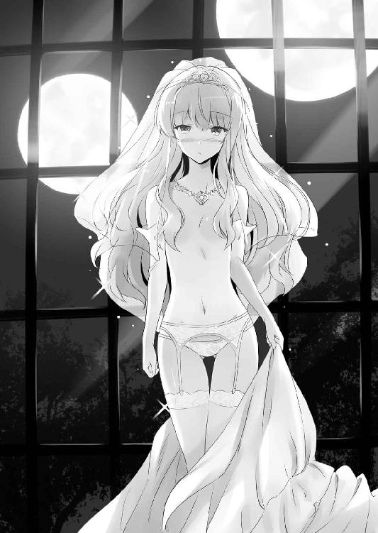
「き、綺麗だ」
「それだけ？」
「だ、だって、俺......、その......」
月明かりに照らされたルイズの裸身は、神々しいほどに綺麗で......。
喉がカラカラだった。
才人が頭の中でしてたいろいろな妄想なんて、全部吹っ飛んでしまった。
ルイズは恥ずかしそうに才人の服をつまんだ。
「あなたも」
「う、うん......」
才人は、パーカーとズボン、下着を脱いだ。
それから、二人は生まれたままの姿で抱き合った。
才人はルイズの小さな胸に触れた。
「は、恥ずかしい、わ......」
ルイズは耳まで真っ赤になった。
ルイズの肌は滑らかであたたかく、しっとりしていた。
才人は、愛おしいルイズの体温を感じた。
自分はこのために生きてきたんだと、心から思えた。
「や、優しく......、ね」
「うん」
才人は、ルイズをベッドに押し倒すと、唇の形をなぞるようにキスをした。
才人とルイズは、ベッドの中で、お互いのすべてを見せあった。静かに抱き合って、愛する人の体温を感じているだけで、生きていることの幸せを実感できた。
「ねえ、サイト......」
「うん？」
才人の腕の中で、ルイズは幸せそうに微笑んだ。
「わたし、このときのために生きてきたのね」
「ああ、俺もだ......」
才人は、ルイズのピンクがかったブロンドの髪を優しく撫でた。
おかえしにルイズは、才人の首筋にキスをしてくる。
いつまでも、ずっとこうしていたかった......。
でも、そういうわけにはいかない。
才人は、双つの月の昇る窓の外を見つめて、言った。
「みんなと、お別れしないと」
「そうね......」
夜更けを過ぎても、広場での宴会はまだ続いていた。ほとんどの生徒たちは寮に帰ってしまったが、酔い潰れた水精霊騎士隊の面々は、広場で自由に寝転がった。
才人から大事な発表があると告げられた少年たちは、ブリミル像の前に集まった。
なんだなんだとガヤガヤしていると、才人は突然、言った。
「俺、明日、もとの世界に帰ります！」
「ええええええええええええ！」
衝撃の発表に、広場にいた全員が叫んだ。
婚礼の披露宴は、そのまま、才人の送迎会となった。
真夜中。すでに日付は変わり、食事もワインもほとんど尽きている。
才人たちは、キャンプファイアーのような魔法の火を囲み、シエスタが余りもので作ってくれたヨシェナベをつつきながら、仲間たちと飲み明かした。
「サイト、ぼかぁね、ぼかぁ、最初はきみのことを、生意気な平民だと思っていたよ。でも......、でもな、今は、きみを一番の親友だと思ってだなぁ......」
「おいおい、酔っ払いすぎだぞ、ギーシュ」
才人は苦笑して、ギーシュの肩を叩いた。
「まあ、飲みたまえ！ 最後の夜だ、おおいに飲みたまえ！」
「ああ、このワインも、地球に帰ったら飲めなくなっちまうしな」
「そりゃまた、どうしてだね？」
「いや、俺、まだ未成年だし」
「ふうむ......、なんだかよくわからんが、とにかく飲みたまえよ、きみ」
才人はギーシュたちと肩を組み、大声で歌を歌った。
〝トリステイン万歳〟である。才人は、こっちの歌をそれしか知らないのであった。
水精霊騎士隊の少年たちとの思い出話は、尽きることがなかった。アーハンブラのタバサ救出作戦、女子風呂覗きに、リネン川でのガリア騎士との一騎打ち......、みんなで大笑いしていると、ギーシュは感極まったのか、おんおんと泣きだしてしまった。
「もう、男の子って、ばかね」
モンモランシーは呆れたように言った。
「ルイズ、あんた、ほんとにあんなと結婚してよかったの？」
「うん、いいの。大好きなんだもの」
ルイズは、ぽーっとした顔で才人を見つめて言った。
そのルイズの反応を見たマリコルヌが、むむっと唸り、二人を交互に見交わした。
「サイト、きみ、まさか......」
「な、なんだよ」
「まさか、オトナになって、しまったのかい」
「お、おま、なに言って......」
才人とルイズはカアッと赤くなった。
そんな才人の反応に、少年たちはざわめきはじめる。
「かぁっ、かぁっ！」
マリコルヌは二回も叫んだ。
「で、どうなんだね？ おい」
「レ、レモンちゃんの、む、胸は、もんだのかい？」
「や、やめろよ、ルイズが困ってるだろ」
才人はルイズを庇うように立ち上がった。ルイズはきゅんと胸を高鳴らせた。
「ふん、見せつけてくれるじゃないか」
「オトナの証を見せてみろ」
少年たちは才人に躍りかかり、服を脱がせようとした。
完全に酔っ払いであった。
「あんたたち、いいかげんにしなさい！」
怒り狂ったルイズの風魔法が、少年たちを吹っ飛ばした。まったく、風の系統に目覚めたばかりだというのに、さすが〝烈風〟カリンの娘、たいした威力であった。
少年たちは震え上がった。これは、〝ゼロのルイズ〟だった頃よりも、もっと恐ろしい存在になるんじゃないか、と思ったのである。
「サイトさあああん！ わたしも、わたしもサイトさんと一夜の想い出が欲しいです！」
「シエスタ、なに言ってるんだよ！」
才人はあわてて言った。シエスタも酔うと大概なのだ。
「いやですいやです、じゃあ、わたしもサイトさんの世界に連れてってください」
「無理なんだって、一人しか通れないし、シエスタにも、親父さんがいるだろ、な」
「ううっ......ぐすっ......サイトさん、サイトさんのばかあっ、ひっく、ぐすっ......」
可哀想になった。
才人に、いつも優しくしてくれたシエスタ......。
ときには強く叱ってくれたこともあったっけ......。
「ほら、わたしの胸で泣きなさいよ」
そんなシエスタの頭をルイズが撫でる。
「ううう......、まな板」
「な、なな、なんですって！」
ルイズはシエスタを追いかけ回した。
シエスタがいなくなって空いた場所に、今度はタバサが座った。
タバサは無言で、才人のパーカーの裾をぎゅっと摑んだ。
「タバサ？」
「......少しだけ、このままでいさせて欲しい」
「あ、ああ......」
才人は照れたように頰をかいた。
と、そこにコルベールとキュルケがやってきた。キュルケはタバサを見てニヤッと笑うと、親友の肩をつんつんと肩をつつく。
「なによ、積極的じゃないの」
タバサは頰を赤く染めた。
「サイトくん、一度だけしか戻れないというのは残念だったな。できることなら、わたしも、〝魔法〟が存在しないという、君の世界を見てみたかったよ」
「手紙とか、送ることができればいいんですけど」
「うむ、君にもらった、あの〝のーとぱそこん〟とかいう機械を使えればいいんだが、そのためには、やはり〝ゲート〟を開かねばならんのだろうなあ」
コルベールは宙を見上げて考え込む。この先生なら、将来、本当に〝ゲート〟を開くような発明をしちまうかもなあ、と才人は思った。
「サイト......」
ティファニアも才人のそばに座った。月の光の下で見るティファニアは、金色の髪がキラキラと輝いて、まるで妖精のように綺麗だった。
「わたし、エルフの国での冒険のこと、ずっと覚えてる。ずっとずっと、覚えてるわ」
「ああ、俺もだ。ずっと......、いつまでも覚えてるよ」
才人たちは、ハルケギニアでの冒険の思い出を、ひと晩中語りあった。こっちの世界にとどまるよう引きとめる者もいたけれど、最後にはみんな納得してくれた。誰よりも才人のことを想うルイズが、そう決めたのだ。誰も何も言えなかった。
「俺、みんなと出会えてよかった。本当に、ありがとう」
才人は泣きながら、この世界で出会った一人一人に、別れを告げた。
エピローグ
夜が明けて、日が昇った。アウストリの広場には、アンリエッタやオスマン学院長をはじめ、学院の先生や生徒たち全員が集まった。
「正真正銘、これが最後の〝虚無〟ね」
ルイズが言った。
「うん......」
才人はみんなのことを振り返った。
あんなに泣いてたシエスタは、太陽のような笑顔で見送ってくれた。
ルイズが、円鏡に浮かび上がったルーンを唱えた。
すると、目の前に、最初に才人が召喚されたときの、人が通り抜けられるほどの〝ゲート〟が現れた。
キラキラと光る〝ゲート〟の先は、才人が一番帰りたいと願う場所に繫がるはずだ。
記念にいろいろ持ち帰ろうと思ったが、やめた。
ハルケギニアでの冒険は、いつだって思い出せる。
ルイズの綺麗な桃色ブロンドの髪と、デルフの鍔だけを持ち帰ることにした。
「ルイズ、愛してる」
「わたしもよ」
才人はルイズにキスをした。
ルイズははにかむように微笑んだ。
「忘れないで......、あんたは、わたしの使い魔なんだからね」
「ああ、俺はずっと、お前の使い魔だ」
思い出すのは、最初キスから始まった、ハルケギニアでの恋と冒険の日々だった。
使い魔として召喚されて、いろいろな経験をした。
初めてルイズと会った頃は、犬扱いだったし、なんてツンケンしてて嫌な奴だと思った。それに、しょっちゅう喧嘩もしたけど、今では最愛の存在だった。
ゆっくりと手を離すと、ルイズは後ろに下がった。
さよなら、ハルケギニア......。
さよなら、ルイズ......。
俺の大好きな、女の子。
才人は光のゲートに足を踏み入れた。
身体が光に吞み込まれる......。
「待って！」
「はい？」
半分ほど〝ゲート〟の中に入った才人は、思わず、声をあげた。
ルイズの鳶色の瞳に、大粒の涙が溢れ、頰をつたう。
「ルイズ......？」
「やっぱり、わたしも、連れてって！」
「えええええええっ！」
ルイズは、才人めがけて駆けだした。
「ちょ、ちょっと、待ってください、ミス・ヴァリエール！」
シエスタが叫んだ。みんなも驚きの表情を浮かべた。
「わたし、やっぱり、サイトと一緒じゃなきゃイヤ！」
「お、お前、この〝ゲート〟は一人分しか......」
そのとき、才人の頭の中に声が聞こえた。
『相棒、一人くれえ、おれがなんとかしてやる。嬢ちゃんを、連れてってやりな』
な、なんだ？ この声、なに？
なんかわかんねえけど、やるしかねええええっ！
「こいよ、ルイズ！」
「サイト！」
才人は両手を広げ、ルイズの身体を抱きよせた。
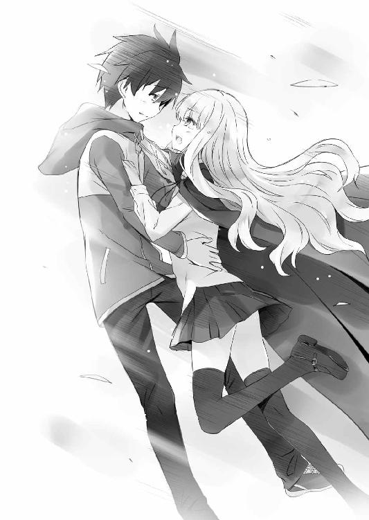
「あ、ちょっと、ミス・ヴァリエール、ずるいですよ！」
「ルイズ、聖女のお役目はどうするつもりなの！ ルイズ！」
「ああ───────────っ！」
みんなが啞然として見守る中......。
二人の姿は、あっさりと、ゲートの向こうに消えてしまったのだった。
著者
ヤマグチノボル（やまぐち・のぼる）
１９７２年２月、茨城県生まれ。『カナリア～この想いを歌にのせて』（角川スニーカー文庫）でデビュー。代表作『ゼロの使い魔』シリーズのほか、著作多数。２年にわたる闘病生活の末、２０１３年４月４日死去。本作はヤマグチノボル先生の遺したプロットを元に執筆された続刊となる。
イラストレーター
兎塚エイジ（うさつか・えいじ）
これで「ゼロの使い魔」シリーズは完結となります。
ヤマグチ先生と迎えられなかったのが本当に残念ですがなんとか最後を締めくくることができました。
月並みですがこれもひとえに皆様のお陰かと思います。
代筆頂いた方、編集の皆様、ここまで応援して下さったファンの皆様、そしてヤマグチノボル先生、本当にありがとうございました！
それではラストまでお楽しみ下さい！
カバー・口絵・本文イラスト／兎塚エイジ
装丁／blue
ゼロの使い魔22
ゼロの神話
ヤマグチノボル
2017年2月24日 発行
(C)HEXAGON 2017
本電子書籍は下記にもとづいて制作しました
ＭＦ文庫Ｊ『ゼロの使い魔 22 ゼロの神話』
2017年2月25日初版第一刷発行
発行者 三坂泰二
発 行 株式会社ＫＡＤＯＫＡＷＡ
〒102-8177 東京都千代田区富士見2-13-3
0570-002-001（カスタマーサポート）
年末年始を除く 平日10：00～18：00まで
http://www.kadokawa.co.jp/